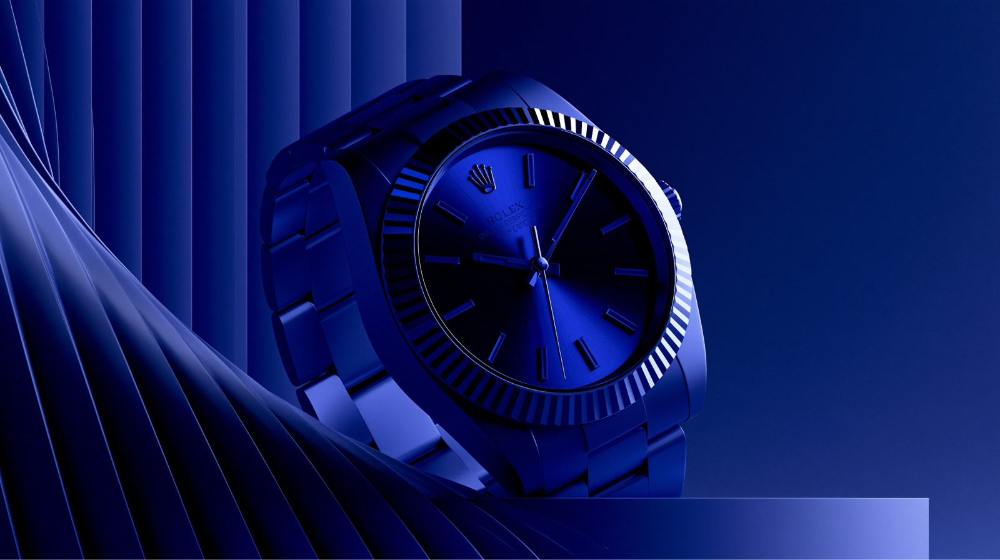
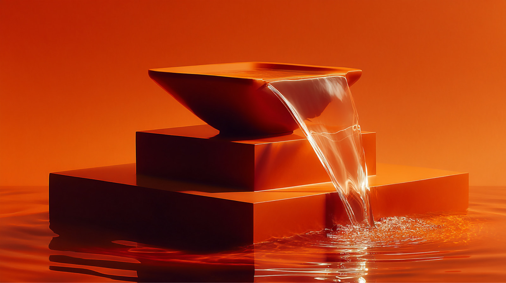
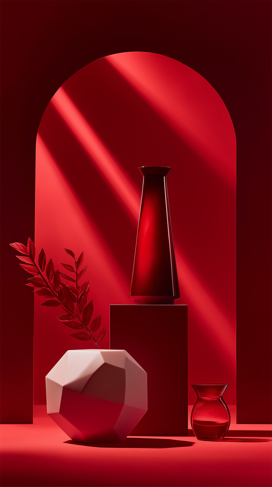
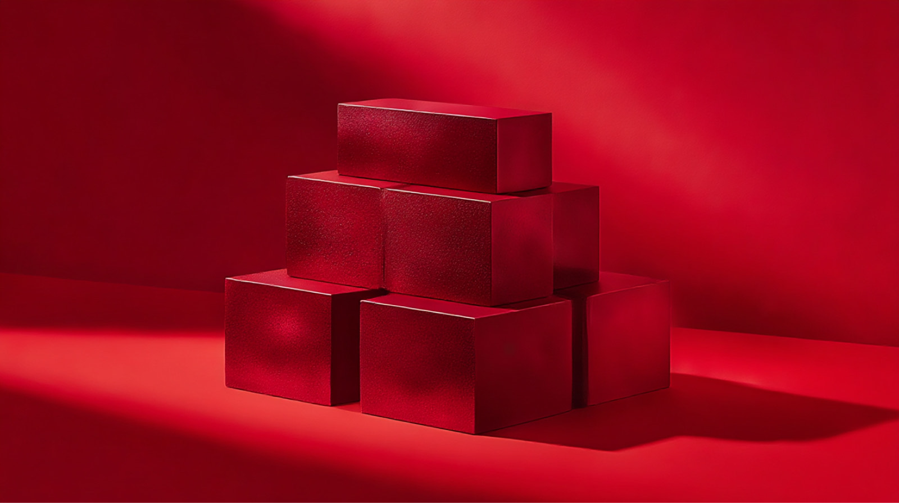
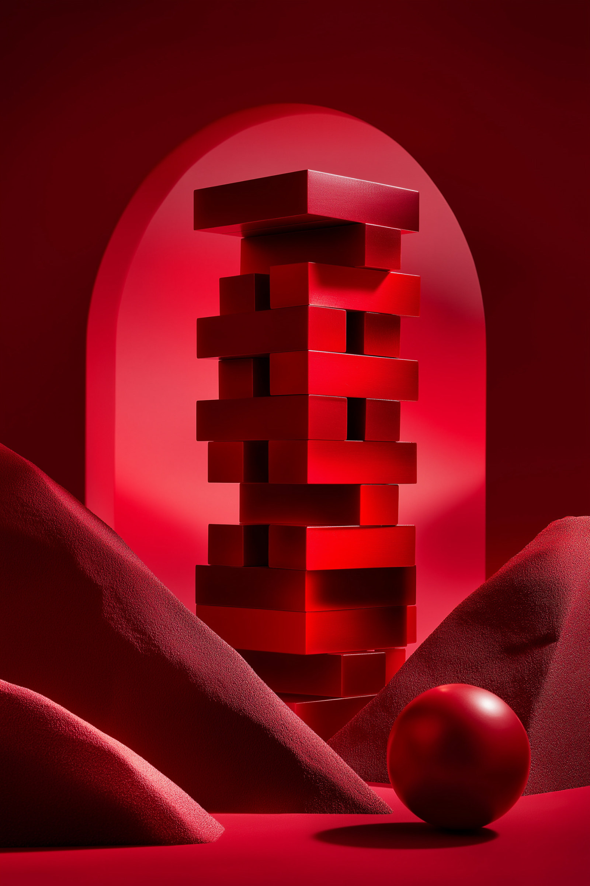
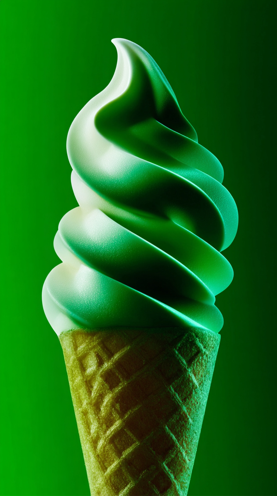

<meta charset="utf-8">
<meta name="viewport" content="width=device-width,initial-scale=1">
<title>AZMX Image Library</title>
<meta name="description" content="AZMX brand image library. Gradients, abstract blue, and recoloured brand imagery, free to download.">
<link rel="icon" href="assets/logo/azmx-favicon.png">
<meta property="og:type" content="website">
<meta property="og:site_name" content="AZMX Brand Skill">
<meta property="og:title" content="AZMX Image Library">
<meta property="og:description" content="AZMX brand image library. Gradients, abstract blue, and recoloured brand imagery, free to download.">
<meta property="og:url" content="https://gamaleldientarek.github.io/azmx-brand-skill/">
<meta property="og:image" content="https://gamaleldientarek.github.io/azmx-brand-skill/assets/cover-social-1280x640.jpg">
<meta property="og:image:width" content="1280">
<meta property="og:image:height" content="640">
<meta property="og:image:alt" content="AZMX Brand Skill">
<meta name="twitter:card" content="summary_large_image">
<meta name="twitter:title" content="AZMX Image Library">
<meta name="twitter:description" content="AZMX brand image library. Gradients, abstract blue, and recoloured brand imagery, free to download.">
<meta name="twitter:image" content="https://gamaleldientarek.github.io/azmx-brand-skill/assets/cover-social-1280x640.jpg">
<style>
:root{--navy:#040038;--electric:#001AFF;--lightblue:#5D8FFF;--blue100:#DDE8FF;--blue200:#BFD5FF}
*{box-sizing:border-box}
body{margin:0;background:var(--navy);color:#fff;font-family:-apple-system,BlinkMacSystemFont,'Segoe UI',Tahoma,sans-serif;-webkit-font-smoothing:antialiased}
body{display:grid;grid-template-columns:230px minmax(0,1fr)}
aside{position:sticky;top:0;height:100vh;overflow-y:auto;padding:40px 0 40px 28px;
border-right:1px solid rgba(255,255,255,.12)}
.brand{display:flex;align-items:center;gap:9px;margin:0 0 36px;font-size:13px;font-weight:600;
letter-spacing:2px;text-transform:uppercase;color:var(--lightblue)}
.brand img{width:18px;height:18px}
aside nav{display:flex;flex-direction:column;gap:2px;padding:0}
aside nav a{display:flex;align-items:center;justify-content:space-between;gap:10px;
min-height:38px;padding:0 16px 0 12px;border:0;border-left:2px solid transparent;
color:var(--blue100);opacity:.72;text-decoration:none;font-size:14px;
transition:opacity .18s,border-color .18s,background .18s}
aside nav a:hover{opacity:1;background:rgba(255,255,255,.05)}
aside nav a.on{opacity:1;border-left-color:var(--electric);background:rgba(255,255,255,.05)}
aside nav a .n{font-size:12px;opacity:.55;font-variant-numeric:tabular-nums}
.navsep{margin:20px 12px 10px;font-size:11px;letter-spacing:1.6px;text-transform:uppercase;
color:var(--blue200);opacity:.45}
main{min-width:0}
header{padding:clamp(48px,9vw,120px) clamp(24px,5vw,64px) 56px;max-width:1200px}
@media(max-width:900px){
  body{grid-template-columns:1fr}
  aside{position:static;height:auto;border-right:0;border-bottom:1px solid rgba(255,255,255,.12);
  padding:24px 24px 20px}
  .brand{margin-bottom:18px}
  aside nav{flex-direction:row;flex-wrap:wrap;gap:8px}
  aside nav a{border-left:0;border:1px solid rgba(255,255,255,.18);padding:0 14px;min-height:44px}
  aside nav a.on{border-color:var(--electric);border-left-width:1px}
  .navsep{display:none}
}
.eyebrow{color:var(--lightblue);text-transform:uppercase;letter-spacing:2.4px;font-size:14px;font-weight:600;margin:0 0 28px}
h1{font-family:Georgia,'Times New Roman',serif;font-size:clamp(44px,7vw,96px);font-weight:400;letter-spacing:-2px;line-height:1.02;margin:0 0 28px}
.lede{color:var(--blue100);font-size:clamp(17px,2vw,21px);line-height:1.65;max-width:62ch;margin:0 0 12px;opacity:.88}
.meta{color:var(--blue200);opacity:.7;font-size:15px;margin:24px 0 0;font-variant-numeric:tabular-nums}
section{padding:0 clamp(24px,5vw,64px)}
.tagbar{display:flex;flex-wrap:wrap;gap:7px;margin:0 0 34px}
.tagbar button{min-height:32px;padding:0 12px;background:transparent;color:var(--blue100);
border:1px solid rgba(255,255,255,.18);font:inherit;font-size:12.5px;cursor:pointer;opacity:.8;
transition:opacity .18s,border-color .18s,background .18s}
.tagbar button:hover{opacity:1;border-color:var(--lightblue)}
.tagbar button[aria-pressed="true"]{background:var(--electric);border-color:var(--electric);color:#fff;opacity:1}
.tags{display:flex;flex-wrap:wrap;gap:5px;padding-top:7px}
.tags span{font-size:11px;letter-spacing:.3px;color:var(--blue200);opacity:.62;
border:1px solid rgba(255,255,255,.14);padding:2px 7px}
figure[hidden]{display:none}
.empty{color:var(--blue200);opacity:.6;font-size:15px;padding:12px 0 24px}
h2{font-family:Georgia,serif;font-weight:500;font-size:clamp(28px,3.4vw,40px);margin:72px 0 6px;border-top:1px solid rgba(255,255,255,.14);padding-top:28px;letter-spacing:-.5px}
.sub{color:var(--blue200);opacity:.7;font-size:15px;margin:0 0 28px;max-width:60ch;line-height:1.6}
.grid{display:grid;grid-template-columns:repeat(auto-fill,minmax(280px,1fr));gap:24px}
figure{margin:0}
.shot{position:relative;display:block;line-height:0}
a.card{display:block;text-decoration:none;color:inherit}
img{width:100%;aspect-ratio:16/10;object-fit:cover;display:block;background:#01006E;transition:opacity .15s}
a.card:hover img{opacity:.82}
.dl{position:absolute;top:10px;right:10px;display:inline-flex;align-items:center;gap:6px;
padding:7px 12px;background:rgba(4,0,56,.82);color:#fff;border:1px solid rgba(255,255,255,.28);
font-size:12px;line-height:1;text-decoration:none;letter-spacing:.4px;
opacity:0;transform:translateY(-4px);transition:opacity .15s,transform .15s,background .15s;
backdrop-filter:blur(6px);-webkit-backdrop-filter:blur(6px)}
.shot:hover .dl,.dl:focus{opacity:1;transform:translateY(0)}
.dl:hover{background:var(--electric);border-color:var(--electric)}
.dl svg{width:13px;height:13px;flex:none}
@media (hover:none){.dl{opacity:1;transform:none}}
figcaption{display:flex;justify-content:space-between;align-items:center;gap:10px;padding-top:10px;font-size:12.5px;color:var(--blue200);opacity:.72;font-variant-numeric:tabular-nums}
.sw{width:11px;height:11px;display:inline-block;margin-right:6px;vertical-align:-1px;border:1px solid rgba(255,255,255,.25)}
footer{margin-top:88px;padding:56px clamp(24px,5vw,80px) 72px;border-top:1px solid rgba(255,255,255,.14);color:var(--blue200);font-size:15px;line-height:1.8;opacity:.75}
code{background:rgba(255,255,255,.08);padding:3px 8px;font-size:13px;white-space:nowrap}
footer code{white-space:normal;word-break:break-all}
a.link{color:var(--lightblue)}
#recolor .sub{max-width:none}
.pgrid{display:grid;grid-template-columns:repeat(auto-fill,minmax(340px,1fr));gap:24px}
.pcard{border:1px solid rgba(255,255,255,.14);padding:20px;display:flex;flex-direction:column;gap:14px;background:rgba(255,255,255,.02)}
.phead{display:flex;align-items:center;justify-content:space-between;gap:12px}
.pname{display:flex;align-items:center;gap:10px;font-size:15px;font-weight:600;letter-spacing:.2px}
.pdot{width:14px;height:14px;flex:none;border:1px solid rgba(255,255,255,.3)}
.psum{color:var(--blue200);opacity:.66;font-size:13px;margin:-6px 0 0}
.ptext{color:var(--blue100);opacity:.82;font-size:13.5px;line-height:1.65;max-height:150px;overflow-y:auto;
padding-right:10px;white-space:pre-wrap;border-left:1px solid rgba(255,255,255,.14);padding-left:14px}
.ptext::-webkit-scrollbar{width:5px}
.ptext::-webkit-scrollbar-thumb{background:rgba(255,255,255,.2)}
.copy{min-height:44px;display:inline-flex;align-items:center;justify-content:center;gap:8px;padding:0 18px;
background:transparent;color:#fff;border:1px solid rgba(255,255,255,.3);font:inherit;font-size:13px;
letter-spacing:.4px;cursor:pointer;transition:background .18s,border-color .18s,color .18s;flex:none}
.copy:hover{border-color:var(--lightblue)}
.copy:focus-visible{outline:2px solid var(--lightblue);outline-offset:2px}
.copy[data-copied="1"]{background:var(--electric);border-color:var(--electric)}
.copy svg{width:14px;height:14px;flex:none}
.sr{position:absolute;width:1px;height:1px;overflow:hidden;clip:rect(0 0 0 0);white-space:nowrap}
@media (prefers-reduced-motion:reduce){*{transition:none!important}}
</style>
<aside><p class="brand">AZMX</p><nav>
<a href="#top" class="on"><span>All images</span><span class="n">242</span></a>
<p class="navsep">Sections</p>
<a href="#gradient"><span>Gradients</span><span class="n">34</span></a>
<a href="#blue"><span>Abstract Blue</span><span class="n">113</span></a>
<a href="#white"><span>White</span><span class="n">5</span></a>
<a href="#purple"><span>Purple</span><span class="n">24</span></a>
<a href="#orange"><span>Orange</span><span class="n">28</span></a>
<a href="#red"><span>Red</span><span class="n">23</span></a>
<a href="#green"><span>Green</span><span class="n">11</span></a>
<a href="#yellow"><span>Yellow</span><span class="n">4</span></a>
<p class="navsep">Tools</p>
<a href="#recolor"><span>Recolour prompts</span></a>
<a href="https://github.com/Gamaleldientarek/azmx-brand-skill"><span>The brand skill</span></a>
</nav></aside>
<main>
<header>
<p class="eyebrow">AZMX Brand Skill</p>
<h1>Image Library</h1>
<p class="lede">242 AZMX-generated brand images. Click any image to open it full size, then save it.</p>
<p class="lede">Nearly all of these are dark surfaces. Set titles in White, body in Blue&nbsp;100 <code>#DDE8FF</code>, eyebrows and accents in Light&nbsp;Blue <code>#5D8FFF</code>. Never set Electric blue as text over them.</p>
<p class="meta">242 images · JPG · 1600px wide</p></header>
<section id="top"><h2 style="margin-top:40px">Browse by concept</h2>
<p class="sub">Every image carries three concept tags. Pick one to filter the whole library.</p>
<div class="tagbar">
<button type="button" data-tag="" aria-pressed="true">All</button>
<button type="button" data-tag="ambition" aria-pressed="false">ambition <span style="opacity:.55">13</span></button>
<button type="button" data-tag="balance" aria-pressed="false">balance <span style="opacity:.55">30</span></button>
<button type="button" data-tag="calm" aria-pressed="false">calm <span style="opacity:.55">26</span></button>
<button type="button" data-tag="clarity" aria-pressed="false">clarity <span style="opacity:.55">23</span></button>
<button type="button" data-tag="complexity" aria-pressed="false">complexity <span style="opacity:.55">12</span></button>
<button type="button" data-tag="craft" aria-pressed="false">craft <span style="opacity:.55">45</span></button>
<button type="button" data-tag="depth" aria-pressed="false">depth <span style="opacity:.55">21</span></button>
<button type="button" data-tag="direction" aria-pressed="false">direction <span style="opacity:.55">16</span></button>
<button type="button" data-tag="emergence" aria-pressed="false">emergence <span style="opacity:.55">27</span></button>
<button type="button" data-tag="energy" aria-pressed="false">energy <span style="opacity:.55">17</span></button>
<button type="button" data-tag="flow" aria-pressed="false">flow <span style="opacity:.55">18</span></button>
<button type="button" data-tag="focus" aria-pressed="false">focus <span style="opacity:.55">41</span></button>
<button type="button" data-tag="form" aria-pressed="false">form <span style="opacity:.55">11</span></button>
<button type="button" data-tag="foundation" aria-pressed="false">foundation <span style="opacity:.55">17</span></button>
<button type="button" data-tag="growth" aria-pressed="false">growth <span style="opacity:.55">22</span></button>
<button type="button" data-tag="harmony" aria-pressed="false">harmony <span style="opacity:.55">18</span></button>
<button type="button" data-tag="horizon" aria-pressed="false">horizon <span style="opacity:.55">16</span></button>
<button type="button" data-tag="momentum" aria-pressed="false">momentum <span style="opacity:.55">18</span></button>
<button type="button" data-tag="order" aria-pressed="false">order <span style="opacity:.55">19</span></button>
<button type="button" data-tag="potential" aria-pressed="false">potential <span style="opacity:.55">30</span></button>
<button type="button" data-tag="precision" aria-pressed="false">precision <span style="opacity:.55">25</span></button>
<button type="button" data-tag="progress" aria-pressed="false">progress <span style="opacity:.55">16</span></button>
<button type="button" data-tag="scale" aria-pressed="false">scale <span style="opacity:.55">15</span></button>
<button type="button" data-tag="simplicity" aria-pressed="false">simplicity <span style="opacity:.55">22</span></button>
<button type="button" data-tag="strategy" aria-pressed="false">strategy <span style="opacity:.55">10</span></button>
<button type="button" data-tag="structure" aria-pressed="false">structure <span style="opacity:.55">32</span></button>
<button type="button" data-tag="transformation" aria-pressed="false">transformation <span style="opacity:.55">8</span></button>
<button type="button" data-tag="vision" aria-pressed="false">vision <span style="opacity:.55">12</span></button>
</div><p class="sr" role="status" aria-live="polite" id="filter-status"></p></section>
<section id="recolor"><h2>Recolour prompts</h2>
<p class="sub">For best results converting an image from one theme colour to another, feed the source image to the model with the matching prompt below. The blue prompt renders an image into AZMX brand blue; the others remap an existing blue image to that colour. Every prompt protects the same things: lighting direction, grain, frosted highlights, composition, and pure white staying pure white. Model used: <code>Seeddance Edit V5</code>.</p>
<div class="pgrid">
<article class="pcard"><div class="phead"><span class="pname"><i class="pdot" style="background:#001AFF"></i>Blue</span><button class="copy" type="button" data-prompt="blue" aria-label="Copy the Blue recolour prompt"><svg viewBox="0 0 16 16" fill="none" stroke="currentColor" stroke-width="1.5" stroke-linecap="round" stroke-linejoin="round" aria-hidden="true"><rect x="5.5" y="5.5" width="8" height="8" rx="1"/><path d="M10.5 5.5v-2a1 1 0 0 0-1-1h-6a1 1 0 0 0-1 1v6a1 1 0 0 0 1 1h2"/></svg><span class="copy-label">Copy</span></button></div><p class="psum">Render into AZMX brand blue</p><p class="ptext" id="prompt-blue">Render this image in rich deep blue tones. The background is a dark navy to deep royal blue gradient. The 3D geometric cubes are rich saturated blue tones — deep cobalt and dark ultramarine in the shadows, vibrant electric blue and bright cobalt on the lit faces. Preserve the exact same lighting direction, soft grainy/noisy texture on the cube surfaces, and the frosted gradient effect on top of the cubes — the white/light frost on the upper faces and edges must remain pure white, untinted, fading naturally into the blue. Maintain the same contrast, depth, soft shadows, color grading style, and overall moody atmospheric feel. Do not change the composition, geometry, camera angle, or texture — keep whites white.</p></article>
<article class="pcard"><div class="phead"><span class="pname"><i class="pdot" style="background:#F47A48"></i>Orange</span><button class="copy" type="button" data-prompt="orange" aria-label="Copy the Orange recolour prompt"><svg viewBox="0 0 16 16" fill="none" stroke="currentColor" stroke-width="1.5" stroke-linecap="round" stroke-linejoin="round" aria-hidden="true"><rect x="5.5" y="5.5" width="8" height="8" rx="1"/><path d="M10.5 5.5v-2a1 1 0 0 0-1-1h-6a1 1 0 0 0-1 1v6a1 1 0 0 0 1 1h2"/></svg><span class="copy-label">Copy</span></button></div><p class="psum">Remap blue to warm orange</p><p class="ptext" id="prompt-orange">Convert this image's color palette from deep blue tones to warm orange tones, keeping everything else identical. Replace the dark navy/royal blue background with a deep burnt orange to dark amber gradient. The 3D geometric cubes should shift from cobalt/ultramarine blue to rich saturated orange tones — deep rust and burnt sienna in the shadows, vibrant tangerine and warm amber on the lit faces. Preserve the exact same lighting direction, soft grainy/noisy texture on the cube surfaces, and the frosted gradient effect on top of the cubes — the white/light frost on the upper faces and edges must remain pure white, untinted, fading naturally into the orange just as it currently fades into blue. Maintain the same contrast, depth, soft shadows, color grading style, and overall moody atmospheric feel. Do not change the composition, geometry, camera angle, or texture — only remap the blue hues to orange while keeping whites white.</p></article>
<article class="pcard"><div class="phead"><span class="pname"><i class="pdot" style="background:#C68FFF"></i>Purple</span><button class="copy" type="button" data-prompt="purple" aria-label="Copy the Purple recolour prompt"><svg viewBox="0 0 16 16" fill="none" stroke="currentColor" stroke-width="1.5" stroke-linecap="round" stroke-linejoin="round" aria-hidden="true"><rect x="5.5" y="5.5" width="8" height="8" rx="1"/><path d="M10.5 5.5v-2a1 1 0 0 0-1-1h-6a1 1 0 0 0-1 1v6a1 1 0 0 0 1 1h2"/></svg><span class="copy-label">Copy</span></button></div><p class="psum">Remap blue to rich purple</p><p class="ptext" id="prompt-purple">Convert this image's color palette from deep blue tones to rich purple tones, keeping everything else identical. Replace the dark navy/royal blue background with a deep violet to dark plum gradient. The 3D geometric cubes should shift from cobalt/ultramarine blue to rich saturated purple tones — deep eggplant and dark plum in the shadows, vibrant violet and bright amethyst on the lit faces. Preserve the exact same lighting direction, soft grainy/noisy texture on the cube surfaces, and the frosted gradient effect on top of the cubes — the white/light frost on the upper faces and edges must remain pure white, untinted, fading naturally into the purple just as it currently fades into blue. Maintain the same contrast, depth, soft shadows, color grading style, and overall moody atmospheric feel. Do not change the composition, geometry, camera angle, or texture — only remap the blue hues to purple while keeping whites white.</p></article>
<article class="pcard"><div class="phead"><span class="pname"><i class="pdot" style="background:#22C36F"></i>Green</span><button class="copy" type="button" data-prompt="green" aria-label="Copy the Green recolour prompt"><svg viewBox="0 0 16 16" fill="none" stroke="currentColor" stroke-width="1.5" stroke-linecap="round" stroke-linejoin="round" aria-hidden="true"><rect x="5.5" y="5.5" width="8" height="8" rx="1"/><path d="M10.5 5.5v-2a1 1 0 0 0-1-1h-6a1 1 0 0 0-1 1v6a1 1 0 0 0 1 1h2"/></svg><span class="copy-label">Copy</span></button></div><p class="psum">Remap blue to rich green</p><p class="ptext" id="prompt-green">Convert this image's color palette from deep blue tones to rich green tones, keeping everything else identical. Replace the dark navy/royal blue background with a deep forest green to dark emerald gradient. The 3D geometric cubes should shift from cobalt/ultramarine blue to rich saturated green tones — deep pine and dark hunter green in the shadows, vibrant emerald and bright jade on the lit faces. Preserve the exact same lighting direction, soft grainy/noisy texture on the cube surfaces, and the frosted gradient effect on top of the cubes — the white/light frost on the upper faces and edges must remain pure white, untinted, fading naturally into the green just as it currently fades into blue. Maintain the same contrast, depth, soft shadows, color grading style, and overall moody atmospheric feel. Do not change the composition, geometry, camera angle, or texture — only remap the blue hues to green while keeping whites white.</p></article>
<article class="pcard"><div class="phead"><span class="pname"><i class="pdot" style="background:#FED340"></i>Yellow</span><button class="copy" type="button" data-prompt="yellow" aria-label="Copy the Yellow recolour prompt"><svg viewBox="0 0 16 16" fill="none" stroke="currentColor" stroke-width="1.5" stroke-linecap="round" stroke-linejoin="round" aria-hidden="true"><rect x="5.5" y="5.5" width="8" height="8" rx="1"/><path d="M10.5 5.5v-2a1 1 0 0 0-1-1h-6a1 1 0 0 0-1 1v6a1 1 0 0 0 1 1h2"/></svg><span class="copy-label">Copy</span></button></div><p class="psum">Remap blue to yellow-gold</p><p class="ptext" id="prompt-yellow">Convert this image's color palette from deep blue tones to rich yellow-gold tones, keeping everything else identical. Replace the dark navy/royal blue background with a deep golden-olive to dark mustard gradient. The 3D geometric cubes should shift from cobalt/ultramarine blue to rich saturated yellow tones — deep amber and dark goldenrod in the shadows, vibrant sunflower yellow and bright warm gold on the lit faces. Preserve the exact same lighting direction, soft grainy/noisy texture on the cube surfaces, and the frosted gradient effect on top of the cubes — the white/light frost on the upper faces and edges must remain pure white, untinted, fading naturally into the yellow just as it currently fades into blue. Maintain the same contrast, depth, soft shadows, color grading style, and overall moody atmospheric feel. Do not change the composition, geometry, camera angle, or texture — only remap the blue hues to yellow while keeping whites white.</p></article>
<article class="pcard"><div class="phead"><span class="pname"><i class="pdot" style="background:#FF2B3C"></i>Red</span><button class="copy" type="button" data-prompt="red" aria-label="Copy the Red recolour prompt"><svg viewBox="0 0 16 16" fill="none" stroke="currentColor" stroke-width="1.5" stroke-linecap="round" stroke-linejoin="round" aria-hidden="true"><rect x="5.5" y="5.5" width="8" height="8" rx="1"/><path d="M10.5 5.5v-2a1 1 0 0 0-1-1h-6a1 1 0 0 0-1 1v6a1 1 0 0 0 1 1h2"/></svg><span class="copy-label">Copy</span></button></div><p class="psum">Remap blue to rich red</p><p class="ptext" id="prompt-red">Convert this image's color palette from deep blue tones to rich red tones, keeping everything else identical. Replace the dark navy/royal blue background with a deep crimson to dark maroon gradient. The 3D geometric cubes should shift from cobalt/ultramarine blue to rich saturated red tones — deep burgundy and dark wine in the shadows, vibrant scarlet and warm crimson on the lit faces. Preserve the exact same lighting direction, soft grainy/noisy texture on the cube surfaces, and the frosted gradient effect on top of the cubes — the white/light frost on the upper faces and edges must remain pure white, untinted, fading naturally into the red just as it currently fades into blue. Maintain the same contrast, depth, soft shadows, color grading style, and overall moody atmospheric feel. Do not change the composition, geometry, camera angle, or texture — only remap the blue hues to red while keeping whites white.</p></article>
<article class="pcard"><div class="phead"><span class="pname"><i class="pdot" style="background:#E5E7EB"></i>White / Grey</span><button class="copy" type="button" data-prompt="white" aria-label="Copy the White / Grey recolour prompt"><svg viewBox="0 0 16 16" fill="none" stroke="currentColor" stroke-width="1.5" stroke-linecap="round" stroke-linejoin="round" aria-hidden="true"><rect x="5.5" y="5.5" width="8" height="8" rx="1"/><path d="M10.5 5.5v-2a1 1 0 0 0-1-1h-6a1 1 0 0 0-1 1v6a1 1 0 0 0 1 1h2"/></svg><span class="copy-label">Copy</span></button></div><p class="psum">Remap blue to white and neutral grey</p><p class="ptext" id="prompt-white">Convert this image's color palette from deep blue tones to clean white and neutral grayscale tones, keeping everything else identical. Replace the dark navy/royal blue background with a soft light-gray to pale silver gradient (or a deep charcoal gradient if you prefer the cubes to pop brighter). The 3D geometric cubes should shift from cobalt/ultramarine blue to bright white and light grey tones — soft mid-grey in the shadows, clean bright white on the lit faces. Preserve the exact same lighting direction, soft grainy/noisy texture on the cube surfaces, and the frosted gradient effect on top of the cubes — the pure white frost on the upper faces and edges must remain untinted, fading naturally into the light grey. Maintain the same contrast, depth, soft shadows, color grading style, and overall clean atmospheric feel. Do not change the composition, geometry, camera angle, or texture — only remap the blue hues to white/grey.</p></article>
</div><p class="sr" role="status" aria-live="polite" id="copy-status"></p></section>
<script>
document.querySelectorAll('.copy').forEach(function(btn){
  btn.addEventListener('click', function(){
    var key = btn.dataset.prompt;
    var text = document.getElementById('prompt-' + key).textContent;
    var label = btn.querySelector('.copy-label');
    var done = function(){
      label.textContent = 'Copied';
      btn.dataset.copied = '1';
      document.getElementById('copy-status').textContent = key + ' prompt copied to clipboard';
      setTimeout(function(){
        label.textContent = 'Copy';
        btn.removeAttribute('data-copied');
      }, 2000);
    };
    if (navigator.clipboard && window.isSecureContext) {
      navigator.clipboard.writeText(text).then(done).catch(fallback);
    } else { fallback(); }
    function fallback(){
      var ta = document.createElement('textarea');
      ta.value = text; ta.setAttribute('readonly','');
      ta.style.position = 'fixed'; ta.style.opacity = '0';
      document.body.appendChild(ta); ta.select();
      try { document.execCommand('copy'); done(); }
      catch (e) { label.textContent = 'Select manually'; }
      document.body.removeChild(ta);
    }
  });
});
</script>
<section id="gradient"><h2>Gradients</h2><p class="sub">Navy to electric gradient fields. Event surfaces only: covers, dividers, closings.</p><div class="grid">
<figure data-tags="energy flow depth"><span class="shot"><a class="card" href="assets/images/gradient/gradient-001.jpg" target="_blank" rel="noopener"></a><a class="dl" href="assets/images/gradient/gradient-001.jpg" download="gradient-001.jpg" title="Download gradient-001.jpg"><svg viewBox="0 0 16 16" fill="none" stroke="currentColor" stroke-width="1.6" stroke-linecap="round" stroke-linejoin="round" aria-hidden="true"><path d="M8 2v8M4.5 7.5 8 11l3.5-3.5M2.5 13.5h11"/></svg>Download</a></span><figcaption><span>gradient-001.jpg</span><span><i class="sw" style="background:#0406DC"></i>#0406DC</span></figcaption><div class="tags"><span>energy</span><span>flow</span><span>depth</span></div></figure>
<figure data-tags="clarity calm horizon"><span class="shot"><a class="card" href="assets/images/gradient/gradient-002.jpg" target="_blank" rel="noopener"></a><a class="dl" href="assets/images/gradient/gradient-002.jpg" download="gradient-002.jpg" title="Download gradient-002.jpg"><svg viewBox="0 0 16 16" fill="none" stroke="currentColor" stroke-width="1.6" stroke-linecap="round" stroke-linejoin="round" aria-hidden="true"><path d="M8 2v8M4.5 7.5 8 11l3.5-3.5M2.5 13.5h11"/></svg>Download</a></span><figcaption><span>gradient-002.jpg</span><span><i class="sw" style="background:#1E64D9"></i>#1E64D9</span></figcaption><div class="tags"><span>clarity</span><span>calm</span><span>horizon</span></div></figure>
<figure data-tags="emergence focus vision"><span class="shot"><a class="card" href="assets/images/gradient/gradient-003.jpg" target="_blank" rel="noopener"></a><a class="dl" href="assets/images/gradient/gradient-003.jpg" download="gradient-003.jpg" title="Download gradient-003.jpg"><svg viewBox="0 0 16 16" fill="none" stroke="currentColor" stroke-width="1.6" stroke-linecap="round" stroke-linejoin="round" aria-hidden="true"><path d="M8 2v8M4.5 7.5 8 11l3.5-3.5M2.5 13.5h11"/></svg>Download</a></span><figcaption><span>gradient-003.jpg</span><span><i class="sw" style="background:#04060C"></i>#04060C</span></figcaption><div class="tags"><span>emergence</span><span>focus</span><span>vision</span></div></figure>
<figure data-tags="horizon calm potential"><span class="shot"><a class="card" href="assets/images/gradient/gradient-004.jpg" target="_blank" rel="noopener"></a><a class="dl" href="assets/images/gradient/gradient-004.jpg" download="gradient-004.jpg" title="Download gradient-004.jpg"><svg viewBox="0 0 16 16" fill="none" stroke="currentColor" stroke-width="1.6" stroke-linecap="round" stroke-linejoin="round" aria-hidden="true"><path d="M8 2v8M4.5 7.5 8 11l3.5-3.5M2.5 13.5h11"/></svg>Download</a></span><figcaption><span>gradient-004.jpg</span><span><i class="sw" style="background:#010111"></i>#010111</span></figcaption><div class="tags"><span>horizon</span><span>calm</span><span>potential</span></div></figure>
<figure data-tags="clarity simplicity openness"><span class="shot"><a class="card" href="assets/images/gradient/gradient-005.jpg" target="_blank" rel="noopener"></a><a class="dl" href="assets/images/gradient/gradient-005.jpg" download="gradient-005.jpg" title="Download gradient-005.jpg"><svg viewBox="0 0 16 16" fill="none" stroke="currentColor" stroke-width="1.6" stroke-linecap="round" stroke-linejoin="round" aria-hidden="true"><path d="M8 2v8M4.5 7.5 8 11l3.5-3.5M2.5 13.5h11"/></svg>Download</a></span><figcaption><span>gradient-005.jpg</span><span><i class="sw" style="background:#1A39E0"></i>#1A39E0</span></figcaption><div class="tags"><span>clarity</span><span>simplicity</span><span>openness</span></div></figure>
<figure data-tags="contrast emergence depth"><span class="shot"><a class="card" href="assets/images/gradient/gradient-006.jpg" target="_blank" rel="noopener"></a><a class="dl" href="assets/images/gradient/gradient-006.jpg" download="gradient-006.jpg" title="Download gradient-006.jpg"><svg viewBox="0 0 16 16" fill="none" stroke="currentColor" stroke-width="1.6" stroke-linecap="round" stroke-linejoin="round" aria-hidden="true"><path d="M8 2v8M4.5 7.5 8 11l3.5-3.5M2.5 13.5h11"/></svg>Download</a></span><figcaption><span>gradient-006.jpg</span><span><i class="sw" style="background:#000104"></i>#000104</span></figcaption><div class="tags"><span>contrast</span><span>emergence</span><span>depth</span></div></figure>
<figure data-tags="depth tension potential"><span class="shot"><a class="card" href="assets/images/gradient/gradient-007.jpg" target="_blank" rel="noopener"></a><a class="dl" href="assets/images/gradient/gradient-007.jpg" download="gradient-007.jpg" title="Download gradient-007.jpg"><svg viewBox="0 0 16 16" fill="none" stroke="currentColor" stroke-width="1.6" stroke-linecap="round" stroke-linejoin="round" aria-hidden="true"><path d="M8 2v8M4.5 7.5 8 11l3.5-3.5M2.5 13.5h11"/></svg>Download</a></span><figcaption><span>gradient-007.jpg</span><span><i class="sw" style="background:#01010E"></i>#01010E</span></figcaption><div class="tags"><span>depth</span><span>tension</span><span>potential</span></div></figure>
<figure data-tags="depth calm subtlety"><span class="shot"><a class="card" href="assets/images/gradient/gradient-008.jpg" target="_blank" rel="noopener"></a><a class="dl" href="assets/images/gradient/gradient-008.jpg" download="gradient-008.jpg" title="Download gradient-008.jpg"><svg viewBox="0 0 16 16" fill="none" stroke="currentColor" stroke-width="1.6" stroke-linecap="round" stroke-linejoin="round" aria-hidden="true"><path d="M8 2v8M4.5 7.5 8 11l3.5-3.5M2.5 13.5h11"/></svg>Download</a></span><figcaption><span>gradient-008.jpg</span><span><i class="sw" style="background:#000208"></i>#000208</span></figcaption><div class="tags"><span>depth</span><span>calm</span><span>subtlety</span></div></figure>
<figure data-tags="flow energy transformation"><span class="shot"><a class="card" href="assets/images/gradient/gradient-009.jpg" target="_blank" rel="noopener"></a><a class="dl" href="assets/images/gradient/gradient-009.jpg" download="gradient-009.jpg" title="Download gradient-009.jpg"><svg viewBox="0 0 16 16" fill="none" stroke="currentColor" stroke-width="1.6" stroke-linecap="round" stroke-linejoin="round" aria-hidden="true"><path d="M8 2v8M4.5 7.5 8 11l3.5-3.5M2.5 13.5h11"/></svg>Download</a></span><figcaption><span>gradient-009.jpg</span><span><i class="sw" style="background:#0453D6"></i>#0453D6</span></figcaption><div class="tags"><span>flow</span><span>energy</span><span>transformation</span></div></figure>
<figure data-tags="momentum direction flow"><span class="shot"><a class="card" href="assets/images/gradient/gradient-010.jpg" target="_blank" rel="noopener"></a><a class="dl" href="assets/images/gradient/gradient-010.jpg" download="gradient-010.jpg" title="Download gradient-010.jpg"><svg viewBox="0 0 16 16" fill="none" stroke="currentColor" stroke-width="1.6" stroke-linecap="round" stroke-linejoin="round" aria-hidden="true"><path d="M8 2v8M4.5 7.5 8 11l3.5-3.5M2.5 13.5h11"/></svg>Download</a></span><figcaption><span>gradient-010.jpg</span><span><i class="sw" style="background:#0B0B18"></i>#0B0B18</span></figcaption><div class="tags"><span>momentum</span><span>direction</span><span>flow</span></div></figure>
<figure data-tags="emergence horizon potential"><span class="shot"><a class="card" href="assets/images/gradient/gradient-011.jpg" target="_blank" rel="noopener"></a><a class="dl" href="assets/images/gradient/gradient-011.jpg" download="gradient-011.jpg" title="Download gradient-011.jpg"><svg viewBox="0 0 16 16" fill="none" stroke="currentColor" stroke-width="1.6" stroke-linecap="round" stroke-linejoin="round" aria-hidden="true"><path d="M8 2v8M4.5 7.5 8 11l3.5-3.5M2.5 13.5h11"/></svg>Download</a></span><figcaption><span>gradient-011.jpg</span><span><i class="sw" style="background:#000000"></i>#000000</span></figcaption><div class="tags"><span>emergence</span><span>horizon</span><span>potential</span></div></figure>
<figure data-tags="clarity expansion harmony"><span class="shot"><a class="card" href="assets/images/gradient/gradient-012.jpg" target="_blank" rel="noopener"></a><a class="dl" href="assets/images/gradient/gradient-012.jpg" download="gradient-012.jpg" title="Download gradient-012.jpg"><svg viewBox="0 0 16 16" fill="none" stroke="currentColor" stroke-width="1.6" stroke-linecap="round" stroke-linejoin="round" aria-hidden="true"><path d="M8 2v8M4.5 7.5 8 11l3.5-3.5M2.5 13.5h11"/></svg>Download</a></span><figcaption><span>gradient-012.jpg</span><span><i class="sw" style="background:#1B6AC9"></i>#1B6AC9</span></figcaption><div class="tags"><span>clarity</span><span>expansion</span><span>harmony</span></div></figure>
<figure data-tags="clarity openness calm"><span class="shot"><a class="card" href="assets/images/gradient/gradient-013.jpg" target="_blank" rel="noopener"></a><a class="dl" href="assets/images/gradient/gradient-013.jpg" download="gradient-013.jpg" title="Download gradient-013.jpg"><svg viewBox="0 0 16 16" fill="none" stroke="currentColor" stroke-width="1.6" stroke-linecap="round" stroke-linejoin="round" aria-hidden="true"><path d="M8 2v8M4.5 7.5 8 11l3.5-3.5M2.5 13.5h11"/></svg>Download</a></span><figcaption><span>gradient-013.jpg</span><span><i class="sw" style="background:#0F40BB"></i>#0F40BB</span></figcaption><div class="tags"><span>clarity</span><span>openness</span><span>calm</span></div></figure>
<figure data-tags="momentum energy direction"><span class="shot"><a class="card" href="assets/images/gradient/gradient-014.jpg" target="_blank" rel="noopener"></a><a class="dl" href="assets/images/gradient/gradient-014.jpg" download="gradient-014.jpg" title="Download gradient-014.jpg"><svg viewBox="0 0 16 16" fill="none" stroke="currentColor" stroke-width="1.6" stroke-linecap="round" stroke-linejoin="round" aria-hidden="true"><path d="M8 2v8M4.5 7.5 8 11l3.5-3.5M2.5 13.5h11"/></svg>Download</a></span><figcaption><span>gradient-014.jpg</span><span><i class="sw" style="background:#15BBF6"></i>#15BBF6</span></figcaption><div class="tags"><span>momentum</span><span>energy</span><span>direction</span></div></figure>
<figure data-tags="depth flow focus"><span class="shot"><a class="card" href="assets/images/gradient/gradient-015.jpg" target="_blank" rel="noopener"></a><a class="dl" href="assets/images/gradient/gradient-015.jpg" download="gradient-015.jpg" title="Download gradient-015.jpg"><svg viewBox="0 0 16 16" fill="none" stroke="currentColor" stroke-width="1.6" stroke-linecap="round" stroke-linejoin="round" aria-hidden="true"><path d="M8 2v8M4.5 7.5 8 11l3.5-3.5M2.5 13.5h11"/></svg>Download</a></span><figcaption><span>gradient-015.jpg</span><span><i class="sw" style="background:#030550"></i>#030550</span></figcaption><div class="tags"><span>depth</span><span>flow</span><span>focus</span></div></figure>
<figure data-tags="calm simplicity balance"><span class="shot"><a class="card" href="assets/images/gradient/gradient-016.jpg" target="_blank" rel="noopener"></a><a class="dl" href="assets/images/gradient/gradient-016.jpg" download="gradient-016.jpg" title="Download gradient-016.jpg"><svg viewBox="0 0 16 16" fill="none" stroke="currentColor" stroke-width="1.6" stroke-linecap="round" stroke-linejoin="round" aria-hidden="true"><path d="M8 2v8M4.5 7.5 8 11l3.5-3.5M2.5 13.5h11"/></svg>Download</a></span><figcaption><span>gradient-016.jpg</span><span><i class="sw" style="background:#0430AF"></i>#0430AF</span></figcaption><div class="tags"><span>calm</span><span>simplicity</span><span>balance</span></div></figure>
<figure data-tags="direction momentum progress"><span class="shot"><a class="card" href="assets/images/gradient/gradient-017.jpg" target="_blank" rel="noopener"></a><a class="dl" href="assets/images/gradient/gradient-017.jpg" download="gradient-017.jpg" title="Download gradient-017.jpg"><svg viewBox="0 0 16 16" fill="none" stroke="currentColor" stroke-width="1.6" stroke-linecap="round" stroke-linejoin="round" aria-hidden="true"><path d="M8 2v8M4.5 7.5 8 11l3.5-3.5M2.5 13.5h11"/></svg>Download</a></span><figcaption><span>gradient-017.jpg</span><span><i class="sw" style="background:#1D3CEE"></i>#1D3CEE</span></figcaption><div class="tags"><span>direction</span><span>momentum</span><span>progress</span></div></figure>
<figure data-tags="flow transformation energy"><span class="shot"><a class="card" href="assets/images/gradient/gradient-018.jpg" target="_blank" rel="noopener"></a><a class="dl" href="assets/images/gradient/gradient-018.jpg" download="gradient-018.jpg" title="Download gradient-018.jpg"><svg viewBox="0 0 16 16" fill="none" stroke="currentColor" stroke-width="1.6" stroke-linecap="round" stroke-linejoin="round" aria-hidden="true"><path d="M8 2v8M4.5 7.5 8 11l3.5-3.5M2.5 13.5h11"/></svg>Download</a></span><figcaption><span>gradient-018.jpg</span><span><i class="sw" style="background:#12A9E5"></i>#12A9E5</span></figcaption><div class="tags"><span>flow</span><span>transformation</span><span>energy</span></div></figure>
<figure data-tags="contrast clarity transition"><span class="shot"><a class="card" href="assets/images/gradient/gradient-019.jpg" target="_blank" rel="noopener"></a><a class="dl" href="assets/images/gradient/gradient-019.jpg" download="gradient-019.jpg" title="Download gradient-019.jpg"><svg viewBox="0 0 16 16" fill="none" stroke="currentColor" stroke-width="1.6" stroke-linecap="round" stroke-linejoin="round" aria-hidden="true"><path d="M8 2v8M4.5 7.5 8 11l3.5-3.5M2.5 13.5h11"/></svg>Download</a></span><figcaption><span>gradient-019.jpg</span><span><i class="sw" style="background:#2877DD"></i>#2877DD</span></figcaption><div class="tags"><span>contrast</span><span>clarity</span><span>transition</span></div></figure>
<figure data-tags="harmony flow calm"><span class="shot"><a class="card" href="assets/images/gradient/gradient-020.jpg" target="_blank" rel="noopener"></a><a class="dl" href="assets/images/gradient/gradient-020.jpg" download="gradient-020.jpg" title="Download gradient-020.jpg"><svg viewBox="0 0 16 16" fill="none" stroke="currentColor" stroke-width="1.6" stroke-linecap="round" stroke-linejoin="round" aria-hidden="true"><path d="M8 2v8M4.5 7.5 8 11l3.5-3.5M2.5 13.5h11"/></svg>Download</a></span><figcaption><span>gradient-020.jpg</span><span><i class="sw" style="background:#264BC6"></i>#264BC6</span></figcaption><div class="tags"><span>harmony</span><span>flow</span><span>calm</span></div></figure>
<figure data-tags="clarity expansion potential"><span class="shot"><a class="card" href="assets/images/gradient/gradient-021.jpg" target="_blank" rel="noopener"></a><a class="dl" href="assets/images/gradient/gradient-021.jpg" download="gradient-021.jpg" title="Download gradient-021.jpg"><svg viewBox="0 0 16 16" fill="none" stroke="currentColor" stroke-width="1.6" stroke-linecap="round" stroke-linejoin="round" aria-hidden="true"><path d="M8 2v8M4.5 7.5 8 11l3.5-3.5M2.5 13.5h11"/></svg>Download</a></span><figcaption><span>gradient-021.jpg</span><span><i class="sw" style="background:#326EF1"></i>#326EF1</span></figcaption><div class="tags"><span>clarity</span><span>expansion</span><span>potential</span></div></figure>
<figure data-tags="flow harmony transition"><span class="shot"><a class="card" href="assets/images/gradient/gradient-022.jpg" target="_blank" rel="noopener"></a><a class="dl" href="assets/images/gradient/gradient-022.jpg" download="gradient-022.jpg" title="Download gradient-022.jpg"><svg viewBox="0 0 16 16" fill="none" stroke="currentColor" stroke-width="1.6" stroke-linecap="round" stroke-linejoin="round" aria-hidden="true"><path d="M8 2v8M4.5 7.5 8 11l3.5-3.5M2.5 13.5h11"/></svg>Download</a></span><figcaption><span>gradient-022.jpg</span><span><i class="sw" style="background:#0941C8"></i>#0941C8</span></figcaption><div class="tags"><span>flow</span><span>harmony</span><span>transition</span></div></figure>
<figure data-tags="emergence depth horizon"><span class="shot"><a class="card" href="assets/images/gradient/gradient-023.jpg" target="_blank" rel="noopener"></a><a class="dl" href="assets/images/gradient/gradient-023.jpg" download="gradient-023.jpg" title="Download gradient-023.jpg"><svg viewBox="0 0 16 16" fill="none" stroke="currentColor" stroke-width="1.6" stroke-linecap="round" stroke-linejoin="round" aria-hidden="true"><path d="M8 2v8M4.5 7.5 8 11l3.5-3.5M2.5 13.5h11"/></svg>Download</a></span><figcaption><span>gradient-023.jpg</span><span><i class="sw" style="background:#1654D2"></i>#1654D2</span></figcaption><div class="tags"><span>emergence</span><span>depth</span><span>horizon</span></div></figure>
<figure data-tags="expansion energy openness"><span class="shot"><a class="card" href="assets/images/gradient/gradient-024.jpg" target="_blank" rel="noopener"></a><a class="dl" href="assets/images/gradient/gradient-024.jpg" download="gradient-024.jpg" title="Download gradient-024.jpg"><svg viewBox="0 0 16 16" fill="none" stroke="currentColor" stroke-width="1.6" stroke-linecap="round" stroke-linejoin="round" aria-hidden="true"><path d="M8 2v8M4.5 7.5 8 11l3.5-3.5M2.5 13.5h11"/></svg>Download</a></span><figcaption><span>gradient-024.jpg</span><span><i class="sw" style="background:#4697F7"></i>#4697F7</span></figcaption><div class="tags"><span>expansion</span><span>energy</span><span>openness</span></div></figure>
<figure data-tags="horizon clarity potential"><span class="shot"><a class="card" href="assets/images/gradient/gradient-025.jpg" target="_blank" rel="noopener"></a><a class="dl" href="assets/images/gradient/gradient-025.jpg" download="gradient-025.jpg" title="Download gradient-025.jpg"><svg viewBox="0 0 16 16" fill="none" stroke="currentColor" stroke-width="1.6" stroke-linecap="round" stroke-linejoin="round" aria-hidden="true"><path d="M8 2v8M4.5 7.5 8 11l3.5-3.5M2.5 13.5h11"/></svg>Download</a></span><figcaption><span>gradient-025.jpg</span><span><i class="sw" style="background:#72B1F3"></i>#72B1F3</span></figcaption><div class="tags"><span>horizon</span><span>clarity</span><span>potential</span></div></figure>
<figure data-tags="depth focus energy"><span class="shot"><a class="card" href="assets/images/gradient/gradient-026.jpg" target="_blank" rel="noopener"></a><a class="dl" href="assets/images/gradient/gradient-026.jpg" download="gradient-026.jpg" title="Download gradient-026.jpg"><svg viewBox="0 0 16 16" fill="none" stroke="currentColor" stroke-width="1.6" stroke-linecap="round" stroke-linejoin="round" aria-hidden="true"><path d="M8 2v8M4.5 7.5 8 11l3.5-3.5M2.5 13.5h11"/></svg>Download</a></span><figcaption><span>gradient-026.jpg</span><span><i class="sw" style="background:#020028"></i>#020028</span></figcaption><div class="tags"><span>depth</span><span>focus</span><span>energy</span></div></figure>
<figure data-tags="direction emergence focus"><span class="shot"><a class="card" href="assets/images/gradient/gradient-027.jpg" target="_blank" rel="noopener"></a><a class="dl" href="assets/images/gradient/gradient-027.jpg" download="gradient-027.jpg" title="Download gradient-027.jpg"><svg viewBox="0 0 16 16" fill="none" stroke="currentColor" stroke-width="1.6" stroke-linecap="round" stroke-linejoin="round" aria-hidden="true"><path d="M8 2v8M4.5 7.5 8 11l3.5-3.5M2.5 13.5h11"/></svg>Download</a></span><figcaption><span>gradient-027.jpg</span><span><i class="sw" style="background:#000307"></i>#000307</span></figcaption><div class="tags"><span>direction</span><span>emergence</span><span>focus</span></div></figure>
<figure data-tags="contrast depth transition"><span class="shot"><a class="card" href="assets/images/gradient/gradient-028.jpg" target="_blank" rel="noopener"></a><a class="dl" href="assets/images/gradient/gradient-028.jpg" download="gradient-028.jpg" title="Download gradient-028.jpg"><svg viewBox="0 0 16 16" fill="none" stroke="currentColor" stroke-width="1.6" stroke-linecap="round" stroke-linejoin="round" aria-hidden="true"><path d="M8 2v8M4.5 7.5 8 11l3.5-3.5M2.5 13.5h11"/></svg>Download</a></span><figcaption><span>gradient-028.jpg</span><span><i class="sw" style="background:#022EB2"></i>#022EB2</span></figcaption><div class="tags"><span>contrast</span><span>depth</span><span>transition</span></div></figure>
<figure data-tags="focus emergence clarity"><span class="shot"><a class="card" href="assets/images/gradient/gradient-029.jpg" target="_blank" rel="noopener"></a><a class="dl" href="assets/images/gradient/gradient-029.jpg" download="gradient-029.jpg" title="Download gradient-029.jpg"><svg viewBox="0 0 16 16" fill="none" stroke="currentColor" stroke-width="1.6" stroke-linecap="round" stroke-linejoin="round" aria-hidden="true"><path d="M8 2v8M4.5 7.5 8 11l3.5-3.5M2.5 13.5h11"/></svg>Download</a></span><figcaption><span>gradient-029.jpg</span><span><i class="sw" style="background:#094FC0"></i>#094FC0</span></figcaption><div class="tags"><span>focus</span><span>emergence</span><span>clarity</span></div></figure>
<figure data-tags="harmony clarity expansion"><span class="shot"><a class="card" href="assets/images/gradient/gradient-030.jpg" target="_blank" rel="noopener"></a><a class="dl" href="assets/images/gradient/gradient-030.jpg" download="gradient-030.jpg" title="Download gradient-030.jpg"><svg viewBox="0 0 16 16" fill="none" stroke="currentColor" stroke-width="1.6" stroke-linecap="round" stroke-linejoin="round" aria-hidden="true"><path d="M8 2v8M4.5 7.5 8 11l3.5-3.5M2.5 13.5h11"/></svg>Download</a></span><figcaption><span>gradient-030.jpg</span><span><i class="sw" style="background:#0634AF"></i>#0634AF</span></figcaption><div class="tags"><span>harmony</span><span>clarity</span><span>expansion</span></div></figure>
<figure data-tags="openness calm clarity"><span class="shot"><a class="card" href="assets/images/gradient/gradient-031.jpg" target="_blank" rel="noopener"></a><a class="dl" href="assets/images/gradient/gradient-031.jpg" download="gradient-031.jpg" title="Download gradient-031.jpg"><svg viewBox="0 0 16 16" fill="none" stroke="currentColor" stroke-width="1.6" stroke-linecap="round" stroke-linejoin="round" aria-hidden="true"><path d="M8 2v8M4.5 7.5 8 11l3.5-3.5M2.5 13.5h11"/></svg>Download</a></span><figcaption><span>gradient-031.jpg</span><span><i class="sw" style="background:#053EC7"></i>#053EC7</span></figcaption><div class="tags"><span>openness</span><span>calm</span><span>clarity</span></div></figure>
<figure data-tags="emergence contrast potential"><span class="shot"><a class="card" href="assets/images/gradient/gradient-032.jpg" target="_blank" rel="noopener"></a><a class="dl" href="assets/images/gradient/gradient-032.jpg" download="gradient-032.jpg" title="Download gradient-032.jpg"><svg viewBox="0 0 16 16" fill="none" stroke="currentColor" stroke-width="1.6" stroke-linecap="round" stroke-linejoin="round" aria-hidden="true"><path d="M8 2v8M4.5 7.5 8 11l3.5-3.5M2.5 13.5h11"/></svg>Download</a></span><figcaption><span>gradient-032.jpg</span><span><i class="sw" style="background:#000000"></i>#000000</span></figcaption><div class="tags"><span>emergence</span><span>contrast</span><span>potential</span></div></figure>
<figure data-tags="horizon calm depth"><span class="shot"><a class="card" href="assets/images/gradient/gradient-033.jpg" target="_blank" rel="noopener"></a><a class="dl" href="assets/images/gradient/gradient-033.jpg" download="gradient-033.jpg" title="Download gradient-033.jpg"><svg viewBox="0 0 16 16" fill="none" stroke="currentColor" stroke-width="1.6" stroke-linecap="round" stroke-linejoin="round" aria-hidden="true"><path d="M8 2v8M4.5 7.5 8 11l3.5-3.5M2.5 13.5h11"/></svg>Download</a></span><figcaption><span>gradient-033.jpg</span><span><i class="sw" style="background:#020028"></i>#020028</span></figcaption><div class="tags"><span>horizon</span><span>calm</span><span>depth</span></div></figure>
<figure data-tags="transition clarity balance"><span class="shot"><a class="card" href="assets/images/gradient/gradient-034.jpg" target="_blank" rel="noopener"></a><a class="dl" href="assets/images/gradient/gradient-034.jpg" download="gradient-034.jpg" title="Download gradient-034.jpg"><svg viewBox="0 0 16 16" fill="none" stroke="currentColor" stroke-width="1.6" stroke-linecap="round" stroke-linejoin="round" aria-hidden="true"><path d="M8 2v8M4.5 7.5 8 11l3.5-3.5M2.5 13.5h11"/></svg>Download</a></span><figcaption><span>gradient-034.jpg</span><span><i class="sw" style="background:#0835BA"></i>#0835BA</span></figcaption><div class="tags"><span>transition</span><span>clarity</span><span>balance</span></div></figure>
</div></section>
<section id="blue"><h2>Abstract Blue</h2><p class="sub">The core brand set. Default choice for any AZMX surface needing an image.</p><div class="grid">
<figure data-tags="structure scale foundation"><span class="shot"><a class="card" href="assets/images/blue/blue-001.jpg" target="_blank" rel="noopener"></a><a class="dl" href="assets/images/blue/blue-001.jpg" download="blue-001.jpg" title="Download blue-001.jpg"><svg viewBox="0 0 16 16" fill="none" stroke="currentColor" stroke-width="1.6" stroke-linecap="round" stroke-linejoin="round" aria-hidden="true"><path d="M8 2v8M4.5 7.5 8 11l3.5-3.5M2.5 13.5h11"/></svg>Download</a></span><figcaption><span>blue-001.jpg</span><span><i class="sw" style="background:#041266"></i>#041266</span></figcaption><div class="tags"><span>structure</span><span>scale</span><span>foundation</span></div></figure>
<figure data-tags="strategy hierarchy order"><span class="shot"><a class="card" href="assets/images/blue/blue-002.jpg" target="_blank" rel="noopener"></a><a class="dl" href="assets/images/blue/blue-002.jpg" download="blue-002.jpg" title="Download blue-002.jpg"><svg viewBox="0 0 16 16" fill="none" stroke="currentColor" stroke-width="1.6" stroke-linecap="round" stroke-linejoin="round" aria-hidden="true"><path d="M8 2v8M4.5 7.5 8 11l3.5-3.5M2.5 13.5h11"/></svg>Download</a></span><figcaption><span>blue-002.jpg</span><span><i class="sw" style="background:#0F0F5F"></i>#0F0F5F</span></figcaption><div class="tags"><span>strategy</span><span>hierarchy</span><span>order</span></div></figure>
<figure data-tags="structure complexity emergence"><span class="shot"><a class="card" href="assets/images/blue/blue-003.jpg" target="_blank" rel="noopener"></a><a class="dl" href="assets/images/blue/blue-003.jpg" download="blue-003.jpg" title="Download blue-003.jpg"><svg viewBox="0 0 16 16" fill="none" stroke="currentColor" stroke-width="1.6" stroke-linecap="round" stroke-linejoin="round" aria-hidden="true"><path d="M8 2v8M4.5 7.5 8 11l3.5-3.5M2.5 13.5h11"/></svg>Download</a></span><figcaption><span>blue-003.jpg</span><span><i class="sw" style="background:#121A4B"></i>#121A4B</span></figcaption><div class="tags"><span>structure</span><span>complexity</span><span>emergence</span></div></figure>
<figure data-tags="resilience craft transformation"><span class="shot"><a class="card" href="assets/images/blue/blue-004.jpg" target="_blank" rel="noopener"></a><a class="dl" href="assets/images/blue/blue-004.jpg" download="blue-004.jpg" title="Download blue-004.jpg"><svg viewBox="0 0 16 16" fill="none" stroke="currentColor" stroke-width="1.6" stroke-linecap="round" stroke-linejoin="round" aria-hidden="true"><path d="M8 2v8M4.5 7.5 8 11l3.5-3.5M2.5 13.5h11"/></svg>Download</a></span><figcaption><span>blue-004.jpg</span><span><i class="sw" style="background:#0F1631"></i>#0F1631</span></figcaption><div class="tags"><span>resilience</span><span>craft</span><span>transformation</span></div></figure>
<figure data-tags="precision control balance"><span class="shot"><a class="card" href="assets/images/blue/blue-005.jpg" target="_blank" rel="noopener"></a><a class="dl" href="assets/images/blue/blue-005.jpg" download="blue-005.jpg" title="Download blue-005.jpg"><svg viewBox="0 0 16 16" fill="none" stroke="currentColor" stroke-width="1.6" stroke-linecap="round" stroke-linejoin="round" aria-hidden="true"><path d="M8 2v8M4.5 7.5 8 11l3.5-3.5M2.5 13.5h11"/></svg>Download</a></span><figcaption><span>blue-005.jpg</span><span><i class="sw" style="background:#0C1C5C"></i>#0C1C5C</span></figcaption><div class="tags"><span>precision</span><span>control</span><span>balance</span></div></figure>
<figure data-tags="potential discovery depth"><span class="shot"><a class="card" href="assets/images/blue/blue-006.jpg" target="_blank" rel="noopener"></a><a class="dl" href="assets/images/blue/blue-006.jpg" download="blue-006.jpg" title="Download blue-006.jpg"><svg viewBox="0 0 16 16" fill="none" stroke="currentColor" stroke-width="1.6" stroke-linecap="round" stroke-linejoin="round" aria-hidden="true"><path d="M8 2v8M4.5 7.5 8 11l3.5-3.5M2.5 13.5h11"/></svg>Download</a></span><figcaption><span>blue-006.jpg</span><span><i class="sw" style="background:#0A0C1B"></i>#0A0C1B</span></figcaption><div class="tags"><span>potential</span><span>discovery</span><span>depth</span></div></figure>
<figure data-tags="balance tension equilibrium"><span class="shot"><a class="card" href="assets/images/blue/blue-007.jpg" target="_blank" rel="noopener"></a><a class="dl" href="assets/images/blue/blue-007.jpg" download="blue-007.jpg" title="Download blue-007.jpg"><svg viewBox="0 0 16 16" fill="none" stroke="currentColor" stroke-width="1.6" stroke-linecap="round" stroke-linejoin="round" aria-hidden="true"><path d="M8 2v8M4.5 7.5 8 11l3.5-3.5M2.5 13.5h11"/></svg>Download</a></span><figcaption><span>blue-007.jpg</span><span><i class="sw" style="background:#0E0E1B"></i>#0E0E1B</span></figcaption><div class="tags"><span>balance</span><span>tension</span><span>equilibrium</span></div></figure>
<figure data-tags="craft refinement transformation"><span class="shot"><a class="card" href="assets/images/blue/blue-008.jpg" target="_blank" rel="noopener"></a><a class="dl" href="assets/images/blue/blue-008.jpg" download="blue-008.jpg" title="Download blue-008.jpg"><svg viewBox="0 0 16 16" fill="none" stroke="currentColor" stroke-width="1.6" stroke-linecap="round" stroke-linejoin="round" aria-hidden="true"><path d="M8 2v8M4.5 7.5 8 11l3.5-3.5M2.5 13.5h11"/></svg>Download</a></span><figcaption><span>blue-008.jpg</span><span><i class="sw" style="background:#050F22"></i>#050F22</span></figcaption><div class="tags"><span>craft</span><span>refinement</span><span>transformation</span></div></figure>
<figure data-tags="foundation stability direction"><span class="shot"><a class="card" href="assets/images/blue/blue-009.jpg" target="_blank" rel="noopener"></a><a class="dl" href="assets/images/blue/blue-009.jpg" download="blue-009.jpg" title="Download blue-009.jpg"><svg viewBox="0 0 16 16" fill="none" stroke="currentColor" stroke-width="1.6" stroke-linecap="round" stroke-linejoin="round" aria-hidden="true"><path d="M8 2v8M4.5 7.5 8 11l3.5-3.5M2.5 13.5h11"/></svg>Download</a></span><figcaption><span>blue-009.jpg</span><span><i class="sw" style="background:#010C29"></i>#010C29</span></figcaption><div class="tags"><span>foundation</span><span>stability</span><span>direction</span></div></figure>
<figure data-tags="balance precision simplicity"><span class="shot"><a class="card" href="assets/images/blue/blue-010.jpg" target="_blank" rel="noopener"></a><a class="dl" href="assets/images/blue/blue-010.jpg" download="blue-010.jpg" title="Download blue-010.jpg"><svg viewBox="0 0 16 16" fill="none" stroke="currentColor" stroke-width="1.6" stroke-linecap="round" stroke-linejoin="round" aria-hidden="true"><path d="M8 2v8M4.5 7.5 8 11l3.5-3.5M2.5 13.5h11"/></svg>Download</a></span><figcaption><span>blue-010.jpg</span><span><i class="sw" style="background:#05193C"></i>#05193C</span></figcaption><div class="tags"><span>balance</span><span>precision</span><span>simplicity</span></div></figure>
<figure data-tags="momentum flow energy"><span class="shot"><a class="card" href="assets/images/blue/blue-011.jpg" target="_blank" rel="noopener"></a><a class="dl" href="assets/images/blue/blue-011.jpg" download="blue-011.jpg" title="Download blue-011.jpg"><svg viewBox="0 0 16 16" fill="none" stroke="currentColor" stroke-width="1.6" stroke-linecap="round" stroke-linejoin="round" aria-hidden="true"><path d="M8 2v8M4.5 7.5 8 11l3.5-3.5M2.5 13.5h11"/></svg>Download</a></span><figcaption><span>blue-011.jpg</span><span><i class="sw" style="background:#03092F"></i>#03092F</span></figcaption><div class="tags"><span>momentum</span><span>flow</span><span>energy</span></div></figure>
<figure data-tags="emergence structure potential"><span class="shot"><a class="card" href="assets/images/blue/blue-012.jpg" target="_blank" rel="noopener"></a><a class="dl" href="assets/images/blue/blue-012.jpg" download="blue-012.jpg" title="Download blue-012.jpg"><svg viewBox="0 0 16 16" fill="none" stroke="currentColor" stroke-width="1.6" stroke-linecap="round" stroke-linejoin="round" aria-hidden="true"><path d="M8 2v8M4.5 7.5 8 11l3.5-3.5M2.5 13.5h11"/></svg>Download</a></span><figcaption><span>blue-012.jpg</span><span><i class="sw" style="background:#0D2563"></i>#0D2563</span></figcaption><div class="tags"><span>emergence</span><span>structure</span><span>potential</span></div></figure>
<figure data-tags="vision threshold discovery"><span class="shot"><a class="card" href="assets/images/blue/blue-013.jpg" target="_blank" rel="noopener"></a><a class="dl" href="assets/images/blue/blue-013.jpg" download="blue-013.jpg" title="Download blue-013.jpg"><svg viewBox="0 0 16 16" fill="none" stroke="currentColor" stroke-width="1.6" stroke-linecap="round" stroke-linejoin="round" aria-hidden="true"><path d="M8 2v8M4.5 7.5 8 11l3.5-3.5M2.5 13.5h11"/></svg>Download</a></span><figcaption><span>blue-013.jpg</span><span><i class="sw" style="background:#142452"></i>#142452</span></figcaption><div class="tags"><span>vision</span><span>threshold</span><span>discovery</span></div></figure>
<figure data-tags="scale progress unity"><span class="shot"><a class="card" href="assets/images/blue/blue-014.jpg" target="_blank" rel="noopener"></a><a class="dl" href="assets/images/blue/blue-014.jpg" download="blue-014.jpg" title="Download blue-014.jpg"><svg viewBox="0 0 16 16" fill="none" stroke="currentColor" stroke-width="1.6" stroke-linecap="round" stroke-linejoin="round" aria-hidden="true"><path d="M8 2v8M4.5 7.5 8 11l3.5-3.5M2.5 13.5h11"/></svg>Download</a></span><figcaption><span>blue-014.jpg</span><span><i class="sw" style="background:#171F47"></i>#171F47</span></figcaption><div class="tags"><span>scale</span><span>progress</span><span>unity</span></div></figure>
<figure data-tags="ambition vision landmark"><span class="shot"><a class="card" href="assets/images/blue/blue-015.jpg" target="_blank" rel="noopener"></a><a class="dl" href="assets/images/blue/blue-015.jpg" download="blue-015.jpg" title="Download blue-015.jpg"><svg viewBox="0 0 16 16" fill="none" stroke="currentColor" stroke-width="1.6" stroke-linecap="round" stroke-linejoin="round" aria-hidden="true"><path d="M8 2v8M4.5 7.5 8 11l3.5-3.5M2.5 13.5h11"/></svg>Download</a></span><figcaption><span>blue-015.jpg</span><span><i class="sw" style="background:#021A7C"></i>#021A7C</span></figcaption><div class="tags"><span>ambition</span><span>vision</span><span>landmark</span></div></figure>
<figure data-tags="clarity focus simplicity"><span class="shot"><a class="card" href="assets/images/blue/blue-016.jpg" target="_blank" rel="noopener"></a><a class="dl" href="assets/images/blue/blue-016.jpg" download="blue-016.jpg" title="Download blue-016.jpg"><svg viewBox="0 0 16 16" fill="none" stroke="currentColor" stroke-width="1.6" stroke-linecap="round" stroke-linejoin="round" aria-hidden="true"><path d="M8 2v8M4.5 7.5 8 11l3.5-3.5M2.5 13.5h11"/></svg>Download</a></span><figcaption><span>blue-016.jpg</span><span><i class="sw" style="background:#0535C3"></i>#0535C3</span></figcaption><div class="tags"><span>clarity</span><span>focus</span><span>simplicity</span></div></figure>
<figure data-tags="focus precision clarity"><span class="shot"><a class="card" href="assets/images/blue/blue-017.jpg" target="_blank" rel="noopener"></a><a class="dl" href="assets/images/blue/blue-017.jpg" download="blue-017.jpg" title="Download blue-017.jpg"><svg viewBox="0 0 16 16" fill="none" stroke="currentColor" stroke-width="1.6" stroke-linecap="round" stroke-linejoin="round" aria-hidden="true"><path d="M8 2v8M4.5 7.5 8 11l3.5-3.5M2.5 13.5h11"/></svg>Download</a></span><figcaption><span>blue-017.jpg</span><span><i class="sw" style="background:#0535C3"></i>#0535C3</span></figcaption><div class="tags"><span>focus</span><span>precision</span><span>clarity</span></div></figure>
<figure data-tags="foundation focus simplicity"><span class="shot"><a class="card" href="assets/images/blue/blue-018.jpg" target="_blank" rel="noopener"></a><a class="dl" href="assets/images/blue/blue-018.jpg" download="blue-018.jpg" title="Download blue-018.jpg"><svg viewBox="0 0 16 16" fill="none" stroke="currentColor" stroke-width="1.6" stroke-linecap="round" stroke-linejoin="round" aria-hidden="true"><path d="M8 2v8M4.5 7.5 8 11l3.5-3.5M2.5 13.5h11"/></svg>Download</a></span><figcaption><span>blue-018.jpg</span><span><i class="sw" style="background:#01022A"></i>#01022A</span></figcaption><div class="tags"><span>foundation</span><span>focus</span><span>simplicity</span></div></figure>
<figure data-tags="foundation stability focus"><span class="shot"><a class="card" href="assets/images/blue/blue-019.jpg" target="_blank" rel="noopener"></a><a class="dl" href="assets/images/blue/blue-019.jpg" download="blue-019.jpg" title="Download blue-019.jpg"><svg viewBox="0 0 16 16" fill="none" stroke="currentColor" stroke-width="1.6" stroke-linecap="round" stroke-linejoin="round" aria-hidden="true"><path d="M8 2v8M4.5 7.5 8 11l3.5-3.5M2.5 13.5h11"/></svg>Download</a></span><figcaption><span>blue-019.jpg</span><span><i class="sw" style="background:#010638"></i>#010638</span></figcaption><div class="tags"><span>foundation</span><span>stability</span><span>focus</span></div></figure>
<figure data-tags="momentum innovation emergence"><span class="shot"><a class="card" href="assets/images/blue/blue-020.jpg" target="_blank" rel="noopener"></a><a class="dl" href="assets/images/blue/blue-020.jpg" download="blue-020.jpg" title="Download blue-020.jpg"><svg viewBox="0 0 16 16" fill="none" stroke="currentColor" stroke-width="1.6" stroke-linecap="round" stroke-linejoin="round" aria-hidden="true"><path d="M8 2v8M4.5 7.5 8 11l3.5-3.5M2.5 13.5h11"/></svg>Download</a></span><figcaption><span>blue-020.jpg</span><span><i class="sw" style="background:#0340A5"></i>#0340A5</span></figcaption><div class="tags"><span>momentum</span><span>innovation</span><span>emergence</span></div></figure>
<figure data-tags="craft order composition"><span class="shot"><a class="card" href="assets/images/blue/blue-021.jpg" target="_blank" rel="noopener"></a><a class="dl" href="assets/images/blue/blue-021.jpg" download="blue-021.jpg" title="Download blue-021.jpg"><svg viewBox="0 0 16 16" fill="none" stroke="currentColor" stroke-width="1.6" stroke-linecap="round" stroke-linejoin="round" aria-hidden="true"><path d="M8 2v8M4.5 7.5 8 11l3.5-3.5M2.5 13.5h11"/></svg>Download</a></span><figcaption><span>blue-021.jpg</span><span><i class="sw" style="background:#010232"></i>#010232</span></figcaption><div class="tags"><span>craft</span><span>order</span><span>composition</span></div></figure>
<figure data-tags="complexity structure craft"><span class="shot"><a class="card" href="assets/images/blue/blue-022.jpg" target="_blank" rel="noopener"></a><a class="dl" href="assets/images/blue/blue-022.jpg" download="blue-022.jpg" title="Download blue-022.jpg"><svg viewBox="0 0 16 16" fill="none" stroke="currentColor" stroke-width="1.6" stroke-linecap="round" stroke-linejoin="round" aria-hidden="true"><path d="M8 2v8M4.5 7.5 8 11l3.5-3.5M2.5 13.5h11"/></svg>Download</a></span><figcaption><span>blue-022.jpg</span><span><i class="sw" style="background:#253A99"></i>#253A99</span></figcaption><div class="tags"><span>complexity</span><span>structure</span><span>craft</span></div></figure>
<figure data-tags="progress ascent structure"><span class="shot"><a class="card" href="assets/images/blue/blue-023.jpg" target="_blank" rel="noopener"></a><a class="dl" href="assets/images/blue/blue-023.jpg" download="blue-023.jpg" title="Download blue-023.jpg"><svg viewBox="0 0 16 16" fill="none" stroke="currentColor" stroke-width="1.6" stroke-linecap="round" stroke-linejoin="round" aria-hidden="true"><path d="M8 2v8M4.5 7.5 8 11l3.5-3.5M2.5 13.5h11"/></svg>Download</a></span><figcaption><span>blue-023.jpg</span><span><i class="sw" style="background:#010442"></i>#010442</span></figcaption><div class="tags"><span>progress</span><span>ascent</span><span>structure</span></div></figure>
<figure data-tags="progress ascent balance"><span class="shot"><a class="card" href="assets/images/blue/blue-024.jpg" target="_blank" rel="noopener"></a><a class="dl" href="assets/images/blue/blue-024.jpg" download="blue-024.jpg" title="Download blue-024.jpg"><svg viewBox="0 0 16 16" fill="none" stroke="currentColor" stroke-width="1.6" stroke-linecap="round" stroke-linejoin="round" aria-hidden="true"><path d="M8 2v8M4.5 7.5 8 11l3.5-3.5M2.5 13.5h11"/></svg>Download</a></span><figcaption><span>blue-024.jpg</span><span><i class="sw" style="background:#010647"></i>#010647</span></figcaption><div class="tags"><span>progress</span><span>ascent</span><span>balance</span></div></figure>
<figure data-tags="heritage craft momentum"><span class="shot"><a class="card" href="assets/images/blue/blue-025.jpg" target="_blank" rel="noopener"></a><a class="dl" href="assets/images/blue/blue-025.jpg" download="blue-025.jpg" title="Download blue-025.jpg"><svg viewBox="0 0 16 16" fill="none" stroke="currentColor" stroke-width="1.6" stroke-linecap="round" stroke-linejoin="round" aria-hidden="true"><path d="M8 2v8M4.5 7.5 8 11l3.5-3.5M2.5 13.5h11"/></svg>Download</a></span><figcaption><span>blue-025.jpg</span><span><i class="sw" style="background:#03008D"></i>#03008D</span></figcaption><div class="tags"><span>heritage</span><span>craft</span><span>momentum</span></div></figure>
<figure data-tags="focus structure harmony"><span class="shot"><a class="card" href="assets/images/blue/blue-026.jpg" target="_blank" rel="noopener"></a><a class="dl" href="assets/images/blue/blue-026.jpg" download="blue-026.jpg" title="Download blue-026.jpg"><svg viewBox="0 0 16 16" fill="none" stroke="currentColor" stroke-width="1.6" stroke-linecap="round" stroke-linejoin="round" aria-hidden="true"><path d="M8 2v8M4.5 7.5 8 11l3.5-3.5M2.5 13.5h11"/></svg>Download</a></span><figcaption><span>blue-026.jpg</span><span><i class="sw" style="background:#00001E"></i>#00001E</span></figcaption><div class="tags"><span>focus</span><span>structure</span><span>harmony</span></div></figure>
<figure data-tags="momentum craft direction"><span class="shot"><a class="card" href="assets/images/blue/blue-027.jpg" target="_blank" rel="noopener"></a><a class="dl" href="assets/images/blue/blue-027.jpg" download="blue-027.jpg" title="Download blue-027.jpg"><svg viewBox="0 0 16 16" fill="none" stroke="currentColor" stroke-width="1.6" stroke-linecap="round" stroke-linejoin="round" aria-hidden="true"><path d="M8 2v8M4.5 7.5 8 11l3.5-3.5M2.5 13.5h11"/></svg>Download</a></span><figcaption><span>blue-027.jpg</span><span><i class="sw" style="background:#01014A"></i>#01014A</span></figcaption><div class="tags"><span>momentum</span><span>craft</span><span>direction</span></div></figure>
<figure data-tags="balance scale potential"><span class="shot"><a class="card" href="assets/images/blue/blue-028.jpg" target="_blank" rel="noopener"></a><a class="dl" href="assets/images/blue/blue-028.jpg" download="blue-028.jpg" title="Download blue-028.jpg"><svg viewBox="0 0 16 16" fill="none" stroke="currentColor" stroke-width="1.6" stroke-linecap="round" stroke-linejoin="round" aria-hidden="true"><path d="M8 2v8M4.5 7.5 8 11l3.5-3.5M2.5 13.5h11"/></svg>Download</a></span><figcaption><span>blue-028.jpg</span><span><i class="sw" style="background:#091960"></i>#091960</span></figcaption><div class="tags"><span>balance</span><span>scale</span><span>potential</span></div></figure>
<figure data-tags="strategy hierarchy discipline"><span class="shot"><a class="card" href="assets/images/blue/blue-029.jpg" target="_blank" rel="noopener"></a><a class="dl" href="assets/images/blue/blue-029.jpg" download="blue-029.jpg" title="Download blue-029.jpg"><svg viewBox="0 0 16 16" fill="none" stroke="currentColor" stroke-width="1.6" stroke-linecap="round" stroke-linejoin="round" aria-hidden="true"><path d="M8 2v8M4.5 7.5 8 11l3.5-3.5M2.5 13.5h11"/></svg>Download</a></span><figcaption><span>blue-029.jpg</span><span><i class="sw" style="background:#010325"></i>#010325</span></figcaption><div class="tags"><span>strategy</span><span>hierarchy</span><span>discipline</span></div></figure>
<figure data-tags="ambition progress achievement"><span class="shot"><a class="card" href="assets/images/blue/blue-030.jpg" target="_blank" rel="noopener"></a><a class="dl" href="assets/images/blue/blue-030.jpg" download="blue-030.jpg" title="Download blue-030.jpg"><svg viewBox="0 0 16 16" fill="none" stroke="currentColor" stroke-width="1.6" stroke-linecap="round" stroke-linejoin="round" aria-hidden="true"><path d="M8 2v8M4.5 7.5 8 11l3.5-3.5M2.5 13.5h11"/></svg>Download</a></span><figcaption><span>blue-030.jpg</span><span><i class="sw" style="background:#020159"></i>#020159</span></figcaption><div class="tags"><span>ambition</span><span>progress</span><span>achievement</span></div></figure>
<figure data-tags="ambition resilience scale"><span class="shot"><a class="card" href="assets/images/blue/blue-031.jpg" target="_blank" rel="noopener"></a><a class="dl" href="assets/images/blue/blue-031.jpg" download="blue-031.jpg" title="Download blue-031.jpg"><svg viewBox="0 0 16 16" fill="none" stroke="currentColor" stroke-width="1.6" stroke-linecap="round" stroke-linejoin="round" aria-hidden="true"><path d="M8 2v8M4.5 7.5 8 11l3.5-3.5M2.5 13.5h11"/></svg>Download</a></span><figcaption><span>blue-031.jpg</span><span><i class="sw" style="background:#010651"></i>#010651</span></figcaption><div class="tags"><span>ambition</span><span>resilience</span><span>scale</span></div></figure>
<figure data-tags="precision craft discipline"><span class="shot"><a class="card" href="assets/images/blue/blue-032.jpg" target="_blank" rel="noopener"></a><a class="dl" href="assets/images/blue/blue-032.jpg" download="blue-032.jpg" title="Download blue-032.jpg"><svg viewBox="0 0 16 16" fill="none" stroke="currentColor" stroke-width="1.6" stroke-linecap="round" stroke-linejoin="round" aria-hidden="true"><path d="M8 2v8M4.5 7.5 8 11l3.5-3.5M2.5 13.5h11"/></svg>Download</a></span><figcaption><span>blue-032.jpg</span><span><i class="sw" style="background:#030A56"></i>#030A56</span></figcaption><div class="tags"><span>precision</span><span>craft</span><span>discipline</span></div></figure>
<figure data-tags="authority focus composition"><span class="shot"><a class="card" href="assets/images/blue/blue-033.jpg" target="_blank" rel="noopener"></a><a class="dl" href="assets/images/blue/blue-033.jpg" download="blue-033.jpg" title="Download blue-033.jpg"><svg viewBox="0 0 16 16" fill="none" stroke="currentColor" stroke-width="1.6" stroke-linecap="round" stroke-linejoin="round" aria-hidden="true"><path d="M8 2v8M4.5 7.5 8 11l3.5-3.5M2.5 13.5h11"/></svg>Download</a></span><figcaption><span>blue-033.jpg</span><span><i class="sw" style="background:#010213"></i>#010213</span></figcaption><div class="tags"><span>authority</span><span>focus</span><span>composition</span></div></figure>
<figure data-tags="authority order composition"><span class="shot"><a class="card" href="assets/images/blue/blue-034.jpg" target="_blank" rel="noopener"></a><a class="dl" href="assets/images/blue/blue-034.jpg" download="blue-034.jpg" title="Download blue-034.jpg"><svg viewBox="0 0 16 16" fill="none" stroke="currentColor" stroke-width="1.6" stroke-linecap="round" stroke-linejoin="round" aria-hidden="true"><path d="M8 2v8M4.5 7.5 8 11l3.5-3.5M2.5 13.5h11"/></svg>Download</a></span><figcaption><span>blue-034.jpg</span><span><i class="sw" style="background:#00011D"></i>#00011D</span></figcaption><div class="tags"><span>authority</span><span>order</span><span>composition</span></div></figure>
<figure data-tags="focus precision simplicity"><span class="shot"><a class="card" href="assets/images/blue/blue-035.jpg" target="_blank" rel="noopener"></a><a class="dl" href="assets/images/blue/blue-035.jpg" download="blue-035.jpg" title="Download blue-035.jpg"><svg viewBox="0 0 16 16" fill="none" stroke="currentColor" stroke-width="1.6" stroke-linecap="round" stroke-linejoin="round" aria-hidden="true"><path d="M8 2v8M4.5 7.5 8 11l3.5-3.5M2.5 13.5h11"/></svg>Download</a></span><figcaption><span>blue-035.jpg</span><span><i class="sw" style="background:#010221"></i>#010221</span></figcaption><div class="tags"><span>focus</span><span>precision</span><span>simplicity</span></div></figure>
<figure data-tags="authority structure balance"><span class="shot"><a class="card" href="assets/images/blue/blue-036.jpg" target="_blank" rel="noopener"></a><a class="dl" href="assets/images/blue/blue-036.jpg" download="blue-036.jpg" title="Download blue-036.jpg"><svg viewBox="0 0 16 16" fill="none" stroke="currentColor" stroke-width="1.6" stroke-linecap="round" stroke-linejoin="round" aria-hidden="true"><path d="M8 2v8M4.5 7.5 8 11l3.5-3.5M2.5 13.5h11"/></svg>Download</a></span><figcaption><span>blue-036.jpg</span><span><i class="sw" style="background:#01023D"></i>#01023D</span></figcaption><div class="tags"><span>authority</span><span>structure</span><span>balance</span></div></figure>
<figure data-tags="craft refinement focus"><span class="shot"><a class="card" href="assets/images/blue/blue-037.jpg" target="_blank" rel="noopener"></a><a class="dl" href="assets/images/blue/blue-037.jpg" download="blue-037.jpg" title="Download blue-037.jpg"><svg viewBox="0 0 16 16" fill="none" stroke="currentColor" stroke-width="1.6" stroke-linecap="round" stroke-linejoin="round" aria-hidden="true"><path d="M8 2v8M4.5 7.5 8 11l3.5-3.5M2.5 13.5h11"/></svg>Download</a></span><figcaption><span>blue-037.jpg</span><span><i class="sw" style="background:#000004"></i>#000004</span></figcaption><div class="tags"><span>craft</span><span>refinement</span><span>focus</span></div></figure>
<figure data-tags="harmony scale composition"><span class="shot"><a class="card" href="assets/images/blue/blue-038.jpg" target="_blank" rel="noopener"></a><a class="dl" href="assets/images/blue/blue-038.jpg" download="blue-038.jpg" title="Download blue-038.jpg"><svg viewBox="0 0 16 16" fill="none" stroke="currentColor" stroke-width="1.6" stroke-linecap="round" stroke-linejoin="round" aria-hidden="true"><path d="M8 2v8M4.5 7.5 8 11l3.5-3.5M2.5 13.5h11"/></svg>Download</a></span><figcaption><span>blue-038.jpg</span><span><i class="sw" style="background:#030B4F"></i>#030B4F</span></figcaption><div class="tags"><span>harmony</span><span>scale</span><span>composition</span></div></figure>
<figure data-tags="craft order calm"><span class="shot"><a class="card" href="assets/images/blue/blue-039.jpg" target="_blank" rel="noopener"></a><a class="dl" href="assets/images/blue/blue-039.jpg" download="blue-039.jpg" title="Download blue-039.jpg"><svg viewBox="0 0 16 16" fill="none" stroke="currentColor" stroke-width="1.6" stroke-linecap="round" stroke-linejoin="round" aria-hidden="true"><path d="M8 2v8M4.5 7.5 8 11l3.5-3.5M2.5 13.5h11"/></svg>Download</a></span><figcaption><span>blue-039.jpg</span><span><i class="sw" style="background:#03052D"></i>#03052D</span></figcaption><div class="tags"><span>craft</span><span>order</span><span>calm</span></div></figure>
<figure data-tags="growth craft harmony"><span class="shot"><a class="card" href="assets/images/blue/blue-040.jpg" target="_blank" rel="noopener"></a><a class="dl" href="assets/images/blue/blue-040.jpg" download="blue-040.jpg" title="Download blue-040.jpg"><svg viewBox="0 0 16 16" fill="none" stroke="currentColor" stroke-width="1.6" stroke-linecap="round" stroke-linejoin="round" aria-hidden="true"><path d="M8 2v8M4.5 7.5 8 11l3.5-3.5M2.5 13.5h11"/></svg>Download</a></span><figcaption><span>blue-040.jpg</span><span><i class="sw" style="background:#010343"></i>#010343</span></figcaption><div class="tags"><span>growth</span><span>craft</span><span>harmony</span></div></figure>
<figure data-tags="structure growth composition"><span class="shot"><a class="card" href="assets/images/blue/blue-041.jpg" target="_blank" rel="noopener"></a><a class="dl" href="assets/images/blue/blue-041.jpg" download="blue-041.jpg" title="Download blue-041.jpg"><svg viewBox="0 0 16 16" fill="none" stroke="currentColor" stroke-width="1.6" stroke-linecap="round" stroke-linejoin="round" aria-hidden="true"><path d="M8 2v8M4.5 7.5 8 11l3.5-3.5M2.5 13.5h11"/></svg>Download</a></span><figcaption><span>blue-041.jpg</span><span><i class="sw" style="background:#000113"></i>#000113</span></figcaption><div class="tags"><span>structure</span><span>growth</span><span>composition</span></div></figure>
<figure data-tags="potential calm simplicity"><span class="shot"><a class="card" href="assets/images/blue/blue-042.jpg" target="_blank" rel="noopener"></a><a class="dl" href="assets/images/blue/blue-042.jpg" download="blue-042.jpg" title="Download blue-042.jpg"><svg viewBox="0 0 16 16" fill="none" stroke="currentColor" stroke-width="1.6" stroke-linecap="round" stroke-linejoin="round" aria-hidden="true"><path d="M8 2v8M4.5 7.5 8 11l3.5-3.5M2.5 13.5h11"/></svg>Download</a></span><figcaption><span>blue-042.jpg</span><span><i class="sw" style="background:#021143"></i>#021143</span></figcaption><div class="tags"><span>potential</span><span>calm</span><span>simplicity</span></div></figure>
<figure data-tags="growth emergence craft"><span class="shot"><a class="card" href="assets/images/blue/blue-043.jpg" target="_blank" rel="noopener"></a><a class="dl" href="assets/images/blue/blue-043.jpg" download="blue-043.jpg" title="Download blue-043.jpg"><svg viewBox="0 0 16 16" fill="none" stroke="currentColor" stroke-width="1.6" stroke-linecap="round" stroke-linejoin="round" aria-hidden="true"><path d="M8 2v8M4.5 7.5 8 11l3.5-3.5M2.5 13.5h11"/></svg>Download</a></span><figcaption><span>blue-043.jpg</span><span><i class="sw" style="background:#010152"></i>#010152</span></figcaption><div class="tags"><span>growth</span><span>emergence</span><span>craft</span></div></figure>
<figure data-tags="growth emergence resilience"><span class="shot"><a class="card" href="assets/images/blue/blue-044.jpg" target="_blank" rel="noopener"></a><a class="dl" href="assets/images/blue/blue-044.jpg" download="blue-044.jpg" title="Download blue-044.jpg"><svg viewBox="0 0 16 16" fill="none" stroke="currentColor" stroke-width="1.6" stroke-linecap="round" stroke-linejoin="round" aria-hidden="true"><path d="M8 2v8M4.5 7.5 8 11l3.5-3.5M2.5 13.5h11"/></svg>Download</a></span><figcaption><span>blue-044.jpg</span><span><i class="sw" style="background:#040343"></i>#040343</span></figcaption><div class="tags"><span>growth</span><span>emergence</span><span>resilience</span></div></figure>
<figure data-tags="focus clarity craft"><span class="shot"><a class="card" href="assets/images/blue/blue-045.jpg" target="_blank" rel="noopener"></a><a class="dl" href="assets/images/blue/blue-045.jpg" download="blue-045.jpg" title="Download blue-045.jpg"><svg viewBox="0 0 16 16" fill="none" stroke="currentColor" stroke-width="1.6" stroke-linecap="round" stroke-linejoin="round" aria-hidden="true"><path d="M8 2v8M4.5 7.5 8 11l3.5-3.5M2.5 13.5h11"/></svg>Download</a></span><figcaption><span>blue-045.jpg</span><span><i class="sw" style="background:#08138E"></i>#08138E</span></figcaption><div class="tags"><span>focus</span><span>clarity</span><span>craft</span></div></figure>
<figure data-tags="direction potential vision"><span class="shot"><a class="card" href="assets/images/blue/blue-046.jpg" target="_blank" rel="noopener"></a><a class="dl" href="assets/images/blue/blue-046.jpg" download="blue-046.jpg" title="Download blue-046.jpg"><svg viewBox="0 0 16 16" fill="none" stroke="currentColor" stroke-width="1.6" stroke-linecap="round" stroke-linejoin="round" aria-hidden="true"><path d="M8 2v8M4.5 7.5 8 11l3.5-3.5M2.5 13.5h11"/></svg>Download</a></span><figcaption><span>blue-046.jpg</span><span><i class="sw" style="background:#011269"></i>#011269</span></figcaption><div class="tags"><span>direction</span><span>potential</span><span>vision</span></div></figure>
<figure data-tags="care values foundation"><span class="shot"><a class="card" href="assets/images/blue/blue-047.jpg" target="_blank" rel="noopener"></a><a class="dl" href="assets/images/blue/blue-047.jpg" download="blue-047.jpg" title="Download blue-047.jpg"><svg viewBox="0 0 16 16" fill="none" stroke="currentColor" stroke-width="1.6" stroke-linecap="round" stroke-linejoin="round" aria-hidden="true"><path d="M8 2v8M4.5 7.5 8 11l3.5-3.5M2.5 13.5h11"/></svg>Download</a></span><figcaption><span>blue-047.jpg</span><span><i class="sw" style="background:#010139"></i>#010139</span></figcaption><div class="tags"><span>care</span><span>values</span><span>foundation</span></div></figure>
<figure data-tags="vision ambition horizon"><span class="shot"><a class="card" href="assets/images/blue/blue-048.jpg" target="_blank" rel="noopener"></a><a class="dl" href="assets/images/blue/blue-048.jpg" download="blue-048.jpg" title="Download blue-048.jpg"><svg viewBox="0 0 16 16" fill="none" stroke="currentColor" stroke-width="1.6" stroke-linecap="round" stroke-linejoin="round" aria-hidden="true"><path d="M8 2v8M4.5 7.5 8 11l3.5-3.5M2.5 13.5h11"/></svg>Download</a></span><figcaption><span>blue-048.jpg</span><span><i class="sw" style="background:#0C115D"></i>#0C115D</span></figcaption><div class="tags"><span>vision</span><span>ambition</span><span>horizon</span></div></figure>
<figure data-tags="emergence horizon balance"><span class="shot"><a class="card" href="assets/images/blue/blue-049.jpg" target="_blank" rel="noopener"></a><a class="dl" href="assets/images/blue/blue-049.jpg" download="blue-049.jpg" title="Download blue-049.jpg"><svg viewBox="0 0 16 16" fill="none" stroke="currentColor" stroke-width="1.6" stroke-linecap="round" stroke-linejoin="round" aria-hidden="true"><path d="M8 2v8M4.5 7.5 8 11l3.5-3.5M2.5 13.5h11"/></svg>Download</a></span><figcaption><span>blue-049.jpg</span><span><i class="sw" style="background:#021367"></i>#021367</span></figcaption><div class="tags"><span>emergence</span><span>horizon</span><span>balance</span></div></figure>
<figure data-tags="growth potential craft"><span class="shot"><a class="card" href="assets/images/blue/blue-050.jpg" target="_blank" rel="noopener"></a><a class="dl" href="assets/images/blue/blue-050.jpg" download="blue-050.jpg" title="Download blue-050.jpg"><svg viewBox="0 0 16 16" fill="none" stroke="currentColor" stroke-width="1.6" stroke-linecap="round" stroke-linejoin="round" aria-hidden="true"><path d="M8 2v8M4.5 7.5 8 11l3.5-3.5M2.5 13.5h11"/></svg>Download</a></span><figcaption><span>blue-050.jpg</span><span><i class="sw" style="background:#07096F"></i>#07096F</span></figcaption><div class="tags"><span>growth</span><span>potential</span><span>craft</span></div></figure>
<figure data-tags="resilience scale horizon"><span class="shot"><a class="card" href="assets/images/blue/blue-051.jpg" target="_blank" rel="noopener"></a><a class="dl" href="assets/images/blue/blue-051.jpg" download="blue-051.jpg" title="Download blue-051.jpg"><svg viewBox="0 0 16 16" fill="none" stroke="currentColor" stroke-width="1.6" stroke-linecap="round" stroke-linejoin="round" aria-hidden="true"><path d="M8 2v8M4.5 7.5 8 11l3.5-3.5M2.5 13.5h11"/></svg>Download</a></span><figcaption><span>blue-051.jpg</span><span><i class="sw" style="background:#0B0138"></i>#0B0138</span></figcaption><div class="tags"><span>resilience</span><span>scale</span><span>horizon</span></div></figure>
<figure data-tags="clarity emergence vision"><span class="shot"><a class="card" href="assets/images/blue/blue-052.jpg" target="_blank" rel="noopener"></a><a class="dl" href="assets/images/blue/blue-052.jpg" download="blue-052.jpg" title="Download blue-052.jpg"><svg viewBox="0 0 16 16" fill="none" stroke="currentColor" stroke-width="1.6" stroke-linecap="round" stroke-linejoin="round" aria-hidden="true"><path d="M8 2v8M4.5 7.5 8 11l3.5-3.5M2.5 13.5h11"/></svg>Download</a></span><figcaption><span>blue-052.jpg</span><span><i class="sw" style="background:#070B4E"></i>#070B4E</span></figcaption><div class="tags"><span>clarity</span><span>emergence</span><span>vision</span></div></figure>
<figure data-tags="progress structure momentum"><span class="shot"><a class="card" href="assets/images/blue/blue-053.jpg" target="_blank" rel="noopener"></a><a class="dl" href="assets/images/blue/blue-053.jpg" download="blue-053.jpg" title="Download blue-053.jpg"><svg viewBox="0 0 16 16" fill="none" stroke="currentColor" stroke-width="1.6" stroke-linecap="round" stroke-linejoin="round" aria-hidden="true"><path d="M8 2v8M4.5 7.5 8 11l3.5-3.5M2.5 13.5h11"/></svg>Download</a></span><figcaption><span>blue-053.jpg</span><span><i class="sw" style="background:#01014D"></i>#01014D</span></figcaption><div class="tags"><span>progress</span><span>structure</span><span>momentum</span></div></figure>
<figure data-tags="focus insight calm"><span class="shot"><a class="card" href="assets/images/blue/blue-054.jpg" target="_blank" rel="noopener"></a><a class="dl" href="assets/images/blue/blue-054.jpg" download="blue-054.jpg" title="Download blue-054.jpg"><svg viewBox="0 0 16 16" fill="none" stroke="currentColor" stroke-width="1.6" stroke-linecap="round" stroke-linejoin="round" aria-hidden="true"><path d="M8 2v8M4.5 7.5 8 11l3.5-3.5M2.5 13.5h11"/></svg>Download</a></span><figcaption><span>blue-054.jpg</span><span><i class="sw" style="background:#000442"></i>#000442</span></figcaption><div class="tags"><span>focus</span><span>insight</span><span>calm</span></div></figure>
<figure data-tags="direction momentum progress"><span class="shot"><a class="card" href="assets/images/blue/blue-055.jpg" target="_blank" rel="noopener"></a><a class="dl" href="assets/images/blue/blue-055.jpg" download="blue-055.jpg" title="Download blue-055.jpg"><svg viewBox="0 0 16 16" fill="none" stroke="currentColor" stroke-width="1.6" stroke-linecap="round" stroke-linejoin="round" aria-hidden="true"><path d="M8 2v8M4.5 7.5 8 11l3.5-3.5M2.5 13.5h11"/></svg>Download</a></span><figcaption><span>blue-055.jpg</span><span><i class="sw" style="background:#010457"></i>#010457</span></figcaption><div class="tags"><span>direction</span><span>momentum</span><span>progress</span></div></figure>
<figure data-tags="potential innovation focus"><span class="shot"><a class="card" href="assets/images/blue/blue-056.jpg" target="_blank" rel="noopener"></a><a class="dl" href="assets/images/blue/blue-056.jpg" download="blue-056.jpg" title="Download blue-056.jpg"><svg viewBox="0 0 16 16" fill="none" stroke="currentColor" stroke-width="1.6" stroke-linecap="round" stroke-linejoin="round" aria-hidden="true"><path d="M8 2v8M4.5 7.5 8 11l3.5-3.5M2.5 13.5h11"/></svg>Download</a></span><figcaption><span>blue-056.jpg</span><span><i class="sw" style="background:#020127"></i>#020127</span></figcaption><div class="tags"><span>potential</span><span>innovation</span><span>focus</span></div></figure>
<figure data-tags="structure foundation layers"><span class="shot"><a class="card" href="assets/images/blue/blue-057.jpg" target="_blank" rel="noopener"></a><a class="dl" href="assets/images/blue/blue-057.jpg" download="blue-057.jpg" title="Download blue-057.jpg"><svg viewBox="0 0 16 16" fill="none" stroke="currentColor" stroke-width="1.6" stroke-linecap="round" stroke-linejoin="round" aria-hidden="true"><path d="M8 2v8M4.5 7.5 8 11l3.5-3.5M2.5 13.5h11"/></svg>Download</a></span><figcaption><span>blue-057.jpg</span><span><i class="sw" style="background:#202DA4"></i>#202DA4</span></figcaption><div class="tags"><span>structure</span><span>foundation</span><span>layers</span></div></figure>
<figure data-tags="vision potential calm"><span class="shot"><a class="card" href="assets/images/blue/blue-058.jpg" target="_blank" rel="noopener"></a><a class="dl" href="assets/images/blue/blue-058.jpg" download="blue-058.jpg" title="Download blue-058.jpg"><svg viewBox="0 0 16 16" fill="none" stroke="currentColor" stroke-width="1.6" stroke-linecap="round" stroke-linejoin="round" aria-hidden="true"><path d="M8 2v8M4.5 7.5 8 11l3.5-3.5M2.5 13.5h11"/></svg>Download</a></span><figcaption><span>blue-058.jpg</span><span><i class="sw" style="background:#000122"></i>#000122</span></figcaption><div class="tags"><span>vision</span><span>potential</span><span>calm</span></div></figure>
<figure data-tags="layers structure order"><span class="shot"><a class="card" href="assets/images/blue/blue-059.jpg" target="_blank" rel="noopener"></a><a class="dl" href="assets/images/blue/blue-059.jpg" download="blue-059.jpg" title="Download blue-059.jpg"><svg viewBox="0 0 16 16" fill="none" stroke="currentColor" stroke-width="1.6" stroke-linecap="round" stroke-linejoin="round" aria-hidden="true"><path d="M8 2v8M4.5 7.5 8 11l3.5-3.5M2.5 13.5h11"/></svg>Download</a></span><figcaption><span>blue-059.jpg</span><span><i class="sw" style="background:#040E79"></i>#040E79</span></figcaption><div class="tags"><span>layers</span><span>structure</span><span>order</span></div></figure>
<figure data-tags="opportunity transition direction"><span class="shot"><a class="card" href="assets/images/blue/blue-060.jpg" target="_blank" rel="noopener"></a><a class="dl" href="assets/images/blue/blue-060.jpg" download="blue-060.jpg" title="Download blue-060.jpg"><svg viewBox="0 0 16 16" fill="none" stroke="currentColor" stroke-width="1.6" stroke-linecap="round" stroke-linejoin="round" aria-hidden="true"><path d="M8 2v8M4.5 7.5 8 11l3.5-3.5M2.5 13.5h11"/></svg>Download</a></span><figcaption><span>blue-060.jpg</span><span><i class="sw" style="background:#010342"></i>#010342</span></figcaption><div class="tags"><span>opportunity</span><span>transition</span><span>direction</span></div></figure>
<figure data-tags="strategy craft precision"><span class="shot"><a class="card" href="assets/images/blue/blue-061.jpg" target="_blank" rel="noopener"></a><a class="dl" href="assets/images/blue/blue-061.jpg" download="blue-061.jpg" title="Download blue-061.jpg"><svg viewBox="0 0 16 16" fill="none" stroke="currentColor" stroke-width="1.6" stroke-linecap="round" stroke-linejoin="round" aria-hidden="true"><path d="M8 2v8M4.5 7.5 8 11l3.5-3.5M2.5 13.5h11"/></svg>Download</a></span><figcaption><span>blue-061.jpg</span><span><i class="sw" style="background:#01015B"></i>#01015B</span></figcaption><div class="tags"><span>strategy</span><span>craft</span><span>precision</span></div></figure>
<figure data-tags="excellence achievement ambition"><span class="shot"><a class="card" href="assets/images/blue/blue-062.jpg" target="_blank" rel="noopener"></a><a class="dl" href="assets/images/blue/blue-062.jpg" download="blue-062.jpg" title="Download blue-062.jpg"><svg viewBox="0 0 16 16" fill="none" stroke="currentColor" stroke-width="1.6" stroke-linecap="round" stroke-linejoin="round" aria-hidden="true"><path d="M8 2v8M4.5 7.5 8 11l3.5-3.5M2.5 13.5h11"/></svg>Download</a></span><figcaption><span>blue-062.jpg</span><span><i class="sw" style="background:#010250"></i>#010250</span></figcaption><div class="tags"><span>excellence</span><span>achievement</span><span>ambition</span></div></figure>
<figure data-tags="excellence ambition achievement"><span class="shot"><a class="card" href="assets/images/blue/blue-063.jpg" target="_blank" rel="noopener"></a><a class="dl" href="assets/images/blue/blue-063.jpg" download="blue-063.jpg" title="Download blue-063.jpg"><svg viewBox="0 0 16 16" fill="none" stroke="currentColor" stroke-width="1.6" stroke-linecap="round" stroke-linejoin="round" aria-hidden="true"><path d="M8 2v8M4.5 7.5 8 11l3.5-3.5M2.5 13.5h11"/></svg>Download</a></span><figcaption><span>blue-063.jpg</span><span><i class="sw" style="background:#030A6E"></i>#030A6E</span></figcaption><div class="tags"><span>excellence</span><span>ambition</span><span>achievement</span></div></figure>
<figure data-tags="precision craft structure"><span class="shot"><a class="card" href="assets/images/blue/blue-064.jpg" target="_blank" rel="noopener"></a><a class="dl" href="assets/images/blue/blue-064.jpg" download="blue-064.jpg" title="Download blue-064.jpg"><svg viewBox="0 0 16 16" fill="none" stroke="currentColor" stroke-width="1.6" stroke-linecap="round" stroke-linejoin="round" aria-hidden="true"><path d="M8 2v8M4.5 7.5 8 11l3.5-3.5M2.5 13.5h11"/></svg>Download</a></span><figcaption><span>blue-064.jpg</span><span><i class="sw" style="background:#010012"></i>#010012</span></figcaption><div class="tags"><span>precision</span><span>craft</span><span>structure</span></div></figure>
<figure data-tags="balance harmony focus"><span class="shot"><a class="card" href="assets/images/blue/blue-065.jpg" target="_blank" rel="noopener"></a><a class="dl" href="assets/images/blue/blue-065.jpg" download="blue-065.jpg" title="Download blue-065.jpg"><svg viewBox="0 0 16 16" fill="none" stroke="currentColor" stroke-width="1.6" stroke-linecap="round" stroke-linejoin="round" aria-hidden="true"><path d="M8 2v8M4.5 7.5 8 11l3.5-3.5M2.5 13.5h11"/></svg>Download</a></span><figcaption><span>blue-065.jpg</span><span><i class="sw" style="background:#010130"></i>#010130</span></figcaption><div class="tags"><span>balance</span><span>harmony</span><span>focus</span></div></figure>
<figure data-tags="value foundation growth"><span class="shot"><a class="card" href="assets/images/blue/blue-066.jpg" target="_blank" rel="noopener"></a><a class="dl" href="assets/images/blue/blue-066.jpg" download="blue-066.jpg" title="Download blue-066.jpg"><svg viewBox="0 0 16 16" fill="none" stroke="currentColor" stroke-width="1.6" stroke-linecap="round" stroke-linejoin="round" aria-hidden="true"><path d="M8 2v8M4.5 7.5 8 11l3.5-3.5M2.5 13.5h11"/></svg>Download</a></span><figcaption><span>blue-066.jpg</span><span><i class="sw" style="background:#2938B8"></i>#2938B8</span></figcaption><div class="tags"><span>value</span><span>foundation</span><span>growth</span></div></figure>
<figure data-tags="growth potential care"><span class="shot"><a class="card" href="assets/images/blue/blue-067.jpg" target="_blank" rel="noopener"></a><a class="dl" href="assets/images/blue/blue-067.jpg" download="blue-067.jpg" title="Download blue-067.jpg"><svg viewBox="0 0 16 16" fill="none" stroke="currentColor" stroke-width="1.6" stroke-linecap="round" stroke-linejoin="round" aria-hidden="true"><path d="M8 2v8M4.5 7.5 8 11l3.5-3.5M2.5 13.5h11"/></svg>Download</a></span><figcaption><span>blue-067.jpg</span><span><i class="sw" style="background:#010435"></i>#010435</span></figcaption><div class="tags"><span>growth</span><span>potential</span><span>care</span></div></figure>
<figure data-tags="clarity focus insight"><span class="shot"><a class="card" href="assets/images/blue/blue-068.jpg" target="_blank" rel="noopener"></a><a class="dl" href="assets/images/blue/blue-068.jpg" download="blue-068.jpg" title="Download blue-068.jpg"><svg viewBox="0 0 16 16" fill="none" stroke="currentColor" stroke-width="1.6" stroke-linecap="round" stroke-linejoin="round" aria-hidden="true"><path d="M8 2v8M4.5 7.5 8 11l3.5-3.5M2.5 13.5h11"/></svg>Download</a></span><figcaption><span>blue-068.jpg</span><span><i class="sw" style="background:#01022E"></i>#01022E</span></figcaption><div class="tags"><span>clarity</span><span>focus</span><span>insight</span></div></figure>
<figure data-tags="balance foundation focus"><span class="shot"><a class="card" href="assets/images/blue/blue-069.jpg" target="_blank" rel="noopener"></a><a class="dl" href="assets/images/blue/blue-069.jpg" download="blue-069.jpg" title="Download blue-069.jpg"><svg viewBox="0 0 16 16" fill="none" stroke="currentColor" stroke-width="1.6" stroke-linecap="round" stroke-linejoin="round" aria-hidden="true"><path d="M8 2v8M4.5 7.5 8 11l3.5-3.5M2.5 13.5h11"/></svg>Download</a></span><figcaption><span>blue-069.jpg</span><span><i class="sw" style="background:#01043D"></i>#01043D</span></figcaption><div class="tags"><span>balance</span><span>foundation</span><span>focus</span></div></figure>
<figure data-tags="focus balance simplicity"><span class="shot"><a class="card" href="assets/images/blue/blue-070.jpg" target="_blank" rel="noopener"></a><a class="dl" href="assets/images/blue/blue-070.jpg" download="blue-070.jpg" title="Download blue-070.jpg"><svg viewBox="0 0 16 16" fill="none" stroke="currentColor" stroke-width="1.6" stroke-linecap="round" stroke-linejoin="round" aria-hidden="true"><path d="M8 2v8M4.5 7.5 8 11l3.5-3.5M2.5 13.5h11"/></svg>Download</a></span><figcaption><span>blue-070.jpg</span><span><i class="sw" style="background:#010646"></i>#010646</span></figcaption><div class="tags"><span>focus</span><span>balance</span><span>simplicity</span></div></figure>
<figure data-tags="focus harmony simplicity"><span class="shot"><a class="card" href="assets/images/blue/blue-071.jpg" target="_blank" rel="noopener"></a><a class="dl" href="assets/images/blue/blue-071.jpg" download="blue-071.jpg" title="Download blue-071.jpg"><svg viewBox="0 0 16 16" fill="none" stroke="currentColor" stroke-width="1.6" stroke-linecap="round" stroke-linejoin="round" aria-hidden="true"><path d="M8 2v8M4.5 7.5 8 11l3.5-3.5M2.5 13.5h11"/></svg>Download</a></span><figcaption><span>blue-071.jpg</span><span><i class="sw" style="background:#021870"></i>#021870</span></figcaption><div class="tags"><span>focus</span><span>harmony</span><span>simplicity</span></div></figure>
<figure data-tags="scale vision depth"><span class="shot"><a class="card" href="assets/images/blue/blue-072.jpg" target="_blank" rel="noopener"></a><a class="dl" href="assets/images/blue/blue-072.jpg" download="blue-072.jpg" title="Download blue-072.jpg"><svg viewBox="0 0 16 16" fill="none" stroke="currentColor" stroke-width="1.6" stroke-linecap="round" stroke-linejoin="round" aria-hidden="true"><path d="M8 2v8M4.5 7.5 8 11l3.5-3.5M2.5 13.5h11"/></svg>Download</a></span><figcaption><span>blue-072.jpg</span><span><i class="sw" style="background:#021562"></i>#021562</span></figcaption><div class="tags"><span>scale</span><span>vision</span><span>depth</span></div></figure>
<figure data-tags="depth layers transformation"><span class="shot"><a class="card" href="assets/images/blue/blue-073.jpg" target="_blank" rel="noopener"></a><a class="dl" href="assets/images/blue/blue-073.jpg" download="blue-073.jpg" title="Download blue-073.jpg"><svg viewBox="0 0 16 16" fill="none" stroke="currentColor" stroke-width="1.6" stroke-linecap="round" stroke-linejoin="round" aria-hidden="true"><path d="M8 2v8M4.5 7.5 8 11l3.5-3.5M2.5 13.5h11"/></svg>Download</a></span><figcaption><span>blue-073.jpg</span><span><i class="sw" style="background:#020149"></i>#020149</span></figcaption><div class="tags"><span>depth</span><span>layers</span><span>transformation</span></div></figure>
<figure data-tags="progress unity structure"><span class="shot"><a class="card" href="assets/images/blue/blue-074.jpg" target="_blank" rel="noopener"></a><a class="dl" href="assets/images/blue/blue-074.jpg" download="blue-074.jpg" title="Download blue-074.jpg"><svg viewBox="0 0 16 16" fill="none" stroke="currentColor" stroke-width="1.6" stroke-linecap="round" stroke-linejoin="round" aria-hidden="true"><path d="M8 2v8M4.5 7.5 8 11l3.5-3.5M2.5 13.5h11"/></svg>Download</a></span><figcaption><span>blue-074.jpg</span><span><i class="sw" style="background:#02013F"></i>#02013F</span></figcaption><div class="tags"><span>progress</span><span>unity</span><span>structure</span></div></figure>
<figure data-tags="depth contrast transformation"><span class="shot"><a class="card" href="assets/images/blue/blue-075.jpg" target="_blank" rel="noopener"></a><a class="dl" href="assets/images/blue/blue-075.jpg" download="blue-075.jpg" title="Download blue-075.jpg"><svg viewBox="0 0 16 16" fill="none" stroke="currentColor" stroke-width="1.6" stroke-linecap="round" stroke-linejoin="round" aria-hidden="true"><path d="M8 2v8M4.5 7.5 8 11l3.5-3.5M2.5 13.5h11"/></svg>Download</a></span><figcaption><span>blue-075.jpg</span><span><i class="sw" style="background:#03024E"></i>#03024E</span></figcaption><div class="tags"><span>depth</span><span>contrast</span><span>transformation</span></div></figure>
<figure data-tags="care values trust"><span class="shot"><a class="card" href="assets/images/blue/blue-076.jpg" target="_blank" rel="noopener"></a><a class="dl" href="assets/images/blue/blue-076.jpg" download="blue-076.jpg" title="Download blue-076.jpg"><svg viewBox="0 0 16 16" fill="none" stroke="currentColor" stroke-width="1.6" stroke-linecap="round" stroke-linejoin="round" aria-hidden="true"><path d="M8 2v8M4.5 7.5 8 11l3.5-3.5M2.5 13.5h11"/></svg>Download</a></span><figcaption><span>blue-076.jpg</span><span><i class="sw" style="background:#010248"></i>#010248</span></figcaption><div class="tags"><span>care</span><span>values</span><span>trust</span></div></figure>
<figure data-tags="focus clarity direction"><span class="shot"><a class="card" href="assets/images/blue/blue-077.jpg" target="_blank" rel="noopener"></a><a class="dl" href="assets/images/blue/blue-077.jpg" download="blue-077.jpg" title="Download blue-077.jpg"><svg viewBox="0 0 16 16" fill="none" stroke="currentColor" stroke-width="1.6" stroke-linecap="round" stroke-linejoin="round" aria-hidden="true"><path d="M8 2v8M4.5 7.5 8 11l3.5-3.5M2.5 13.5h11"/></svg>Download</a></span><figcaption><span>blue-077.jpg</span><span><i class="sw" style="background:#02006B"></i>#02006B</span></figcaption><div class="tags"><span>focus</span><span>clarity</span><span>direction</span></div></figure>
<figure data-tags="progress direction unity"><span class="shot"><a class="card" href="assets/images/blue/blue-078.jpg" target="_blank" rel="noopener"></a><a class="dl" href="assets/images/blue/blue-078.jpg" download="blue-078.jpg" title="Download blue-078.jpg"><svg viewBox="0 0 16 16" fill="none" stroke="currentColor" stroke-width="1.6" stroke-linecap="round" stroke-linejoin="round" aria-hidden="true"><path d="M8 2v8M4.5 7.5 8 11l3.5-3.5M2.5 13.5h11"/></svg>Download</a></span><figcaption><span>blue-078.jpg</span><span><i class="sw" style="background:#010310"></i>#010310</span></figcaption><div class="tags"><span>progress</span><span>direction</span><span>unity</span></div></figure>
<figure data-tags="momentum ambition energy"><span class="shot"><a class="card" href="assets/images/blue/blue-079.jpg" target="_blank" rel="noopener"></a><a class="dl" href="assets/images/blue/blue-079.jpg" download="blue-079.jpg" title="Download blue-079.jpg"><svg viewBox="0 0 16 16" fill="none" stroke="currentColor" stroke-width="1.6" stroke-linecap="round" stroke-linejoin="round" aria-hidden="true"><path d="M8 2v8M4.5 7.5 8 11l3.5-3.5M2.5 13.5h11"/></svg>Download</a></span><figcaption><span>blue-079.jpg</span><span><i class="sw" style="background:#010032"></i>#010032</span></figcaption><div class="tags"><span>momentum</span><span>ambition</span><span>energy</span></div></figure>
<figure data-tags="emergence horizon calm"><span class="shot"><a class="card" href="assets/images/blue/blue-080.jpg" target="_blank" rel="noopener"></a><a class="dl" href="assets/images/blue/blue-080.jpg" download="blue-080.jpg" title="Download blue-080.jpg"><svg viewBox="0 0 16 16" fill="none" stroke="currentColor" stroke-width="1.6" stroke-linecap="round" stroke-linejoin="round" aria-hidden="true"><path d="M8 2v8M4.5 7.5 8 11l3.5-3.5M2.5 13.5h11"/></svg>Download</a></span><figcaption><span>blue-080.jpg</span><span><i class="sw" style="background:#02054E"></i>#02054E</span></figcaption><div class="tags"><span>emergence</span><span>horizon</span><span>calm</span></div></figure>
<figure data-tags="precision discipline craft"><span class="shot"><a class="card" href="assets/images/blue/blue-081.jpg" target="_blank" rel="noopener"></a><a class="dl" href="assets/images/blue/blue-081.jpg" download="blue-081.jpg" title="Download blue-081.jpg"><svg viewBox="0 0 16 16" fill="none" stroke="currentColor" stroke-width="1.6" stroke-linecap="round" stroke-linejoin="round" aria-hidden="true"><path d="M8 2v8M4.5 7.5 8 11l3.5-3.5M2.5 13.5h11"/></svg>Download</a></span><figcaption><span>blue-081.jpg</span><span><i class="sw" style="background:#01010E"></i>#01010E</span></figcaption><div class="tags"><span>precision</span><span>discipline</span><span>craft</span></div></figure>
<figure data-tags="precision complexity craft"><span class="shot"><a class="card" href="assets/images/blue/blue-082.jpg" target="_blank" rel="noopener"></a><a class="dl" href="assets/images/blue/blue-082.jpg" download="blue-082.jpg" title="Download blue-082.jpg"><svg viewBox="0 0 16 16" fill="none" stroke="currentColor" stroke-width="1.6" stroke-linecap="round" stroke-linejoin="round" aria-hidden="true"><path d="M8 2v8M4.5 7.5 8 11l3.5-3.5M2.5 13.5h11"/></svg>Download</a></span><figcaption><span>blue-082.jpg</span><span><i class="sw" style="background:#02156A"></i>#02156A</span></figcaption><div class="tags"><span>precision</span><span>complexity</span><span>craft</span></div></figure>
<figure data-tags="balance tension simplicity"><span class="shot"><a class="card" href="assets/images/blue/blue-083.jpg" target="_blank" rel="noopener"></a><a class="dl" href="assets/images/blue/blue-083.jpg" download="blue-083.jpg" title="Download blue-083.jpg"><svg viewBox="0 0 16 16" fill="none" stroke="currentColor" stroke-width="1.6" stroke-linecap="round" stroke-linejoin="round" aria-hidden="true"><path d="M8 2v8M4.5 7.5 8 11l3.5-3.5M2.5 13.5h11"/></svg>Download</a></span><figcaption><span>blue-083.jpg</span><span><i class="sw" style="background:#051795"></i>#051795</span></figcaption><div class="tags"><span>balance</span><span>tension</span><span>simplicity</span></div></figure>
<figure data-tags="balance layers harmony"><span class="shot"><a class="card" href="assets/images/blue/blue-084.jpg" target="_blank" rel="noopener"></a><a class="dl" href="assets/images/blue/blue-084.jpg" download="blue-084.jpg" title="Download blue-084.jpg"><svg viewBox="0 0 16 16" fill="none" stroke="currentColor" stroke-width="1.6" stroke-linecap="round" stroke-linejoin="round" aria-hidden="true"><path d="M8 2v8M4.5 7.5 8 11l3.5-3.5M2.5 13.5h11"/></svg>Download</a></span><figcaption><span>blue-084.jpg</span><span><i class="sw" style="background:#020161"></i>#020161</span></figcaption><div class="tags"><span>balance</span><span>layers</span><span>harmony</span></div></figure>
<figure data-tags="vision ambition potential"><span class="shot"><a class="card" href="assets/images/blue/blue-085.jpg" target="_blank" rel="noopener"></a><a class="dl" href="assets/images/blue/blue-085.jpg" download="blue-085.jpg" title="Download blue-085.jpg"><svg viewBox="0 0 16 16" fill="none" stroke="currentColor" stroke-width="1.6" stroke-linecap="round" stroke-linejoin="round" aria-hidden="true"><path d="M8 2v8M4.5 7.5 8 11l3.5-3.5M2.5 13.5h11"/></svg>Download</a></span><figcaption><span>blue-085.jpg</span><span><i class="sw" style="background:#04025F"></i>#04025F</span></figcaption><div class="tags"><span>vision</span><span>ambition</span><span>potential</span></div></figure>
<figure data-tags="innovation focus potential"><span class="shot"><a class="card" href="assets/images/blue/blue-086.jpg" target="_blank" rel="noopener"></a><a class="dl" href="assets/images/blue/blue-086.jpg" download="blue-086.jpg" title="Download blue-086.jpg"><svg viewBox="0 0 16 16" fill="none" stroke="currentColor" stroke-width="1.6" stroke-linecap="round" stroke-linejoin="round" aria-hidden="true"><path d="M8 2v8M4.5 7.5 8 11l3.5-3.5M2.5 13.5h11"/></svg>Download</a></span><figcaption><span>blue-086.jpg</span><span><i class="sw" style="background:#03025C"></i>#03025C</span></figcaption><div class="tags"><span>innovation</span><span>focus</span><span>potential</span></div></figure>
<figure data-tags="focus craft insight"><span class="shot"><a class="card" href="assets/images/blue/blue-087.jpg" target="_blank" rel="noopener"></a><a class="dl" href="assets/images/blue/blue-087.jpg" download="blue-087.jpg" title="Download blue-087.jpg"><svg viewBox="0 0 16 16" fill="none" stroke="currentColor" stroke-width="1.6" stroke-linecap="round" stroke-linejoin="round" aria-hidden="true"><path d="M8 2v8M4.5 7.5 8 11l3.5-3.5M2.5 13.5h11"/></svg>Download</a></span><figcaption><span>blue-087.jpg</span><span><i class="sw" style="background:#000138"></i>#000138</span></figcaption><div class="tags"><span>focus</span><span>craft</span><span>insight</span></div></figure>
<figure data-tags="clarity opportunity structure"><span class="shot"><a class="card" href="assets/images/blue/blue-088.jpg" target="_blank" rel="noopener"></a><a class="dl" href="assets/images/blue/blue-088.jpg" download="blue-088.jpg" title="Download blue-088.jpg"><svg viewBox="0 0 16 16" fill="none" stroke="currentColor" stroke-width="1.6" stroke-linecap="round" stroke-linejoin="round" aria-hidden="true"><path d="M8 2v8M4.5 7.5 8 11l3.5-3.5M2.5 13.5h11"/></svg>Download</a></span><figcaption><span>blue-088.jpg</span><span><i class="sw" style="background:#000010"></i>#000010</span></figcaption><div class="tags"><span>clarity</span><span>opportunity</span><span>structure</span></div></figure>
<figure data-tags="progress momentum discipline"><span class="shot"><a class="card" href="assets/images/blue/blue-089.jpg" target="_blank" rel="noopener"></a><a class="dl" href="assets/images/blue/blue-089.jpg" download="blue-089.jpg" title="Download blue-089.jpg"><svg viewBox="0 0 16 16" fill="none" stroke="currentColor" stroke-width="1.6" stroke-linecap="round" stroke-linejoin="round" aria-hidden="true"><path d="M8 2v8M4.5 7.5 8 11l3.5-3.5M2.5 13.5h11"/></svg>Download</a></span><figcaption><span>blue-089.jpg</span><span><i class="sw" style="background:#060770"></i>#060770</span></figcaption><div class="tags"><span>progress</span><span>momentum</span><span>discipline</span></div></figure>
<figure data-tags="progress opportunity horizon"><span class="shot"><a class="card" href="assets/images/blue/blue-090.jpg" target="_blank" rel="noopener"></a><a class="dl" href="assets/images/blue/blue-090.jpg" download="blue-090.jpg" title="Download blue-090.jpg"><svg viewBox="0 0 16 16" fill="none" stroke="currentColor" stroke-width="1.6" stroke-linecap="round" stroke-linejoin="round" aria-hidden="true"><path d="M8 2v8M4.5 7.5 8 11l3.5-3.5M2.5 13.5h11"/></svg>Download</a></span><figcaption><span>blue-090.jpg</span><span><i class="sw" style="background:#010005"></i>#010005</span></figcaption><div class="tags"><span>progress</span><span>opportunity</span><span>horizon</span></div></figure>
<figure data-tags="clarity structure focus"><span class="shot"><a class="card" href="assets/images/blue/blue-091.jpg" target="_blank" rel="noopener"></a><a class="dl" href="assets/images/blue/blue-091.jpg" download="blue-091.jpg" title="Download blue-091.jpg"><svg viewBox="0 0 16 16" fill="none" stroke="currentColor" stroke-width="1.6" stroke-linecap="round" stroke-linejoin="round" aria-hidden="true"><path d="M8 2v8M4.5 7.5 8 11l3.5-3.5M2.5 13.5h11"/></svg>Download</a></span><figcaption><span>blue-091.jpg</span><span><i class="sw" style="background:#000010"></i>#000010</span></figcaption><div class="tags"><span>clarity</span><span>structure</span><span>focus</span></div></figure>
<figure data-tags="focus insight calm"><span class="shot"><a class="card" href="assets/images/blue/blue-092.jpg" target="_blank" rel="noopener"></a><a class="dl" href="assets/images/blue/blue-092.jpg" download="blue-092.jpg" title="Download blue-092.jpg"><svg viewBox="0 0 16 16" fill="none" stroke="currentColor" stroke-width="1.6" stroke-linecap="round" stroke-linejoin="round" aria-hidden="true"><path d="M8 2v8M4.5 7.5 8 11l3.5-3.5M2.5 13.5h11"/></svg>Download</a></span><figcaption><span>blue-092.jpg</span><span><i class="sw" style="background:#000008"></i>#000008</span></figcaption><div class="tags"><span>focus</span><span>insight</span><span>calm</span></div></figure>
<figure data-tags="growth emergence potential"><span class="shot"><a class="card" href="assets/images/blue/blue-093.jpg" target="_blank" rel="noopener"></a><a class="dl" href="assets/images/blue/blue-093.jpg" download="blue-093.jpg" title="Download blue-093.jpg"><svg viewBox="0 0 16 16" fill="none" stroke="currentColor" stroke-width="1.6" stroke-linecap="round" stroke-linejoin="round" aria-hidden="true"><path d="M8 2v8M4.5 7.5 8 11l3.5-3.5M2.5 13.5h11"/></svg>Download</a></span><figcaption><span>blue-093.jpg</span><span><i class="sw" style="background:#010026"></i>#010026</span></figcaption><div class="tags"><span>growth</span><span>emergence</span><span>potential</span></div></figure>
<figure data-tags="trust care connection"><span class="shot"><a class="card" href="assets/images/blue/blue-094.jpg" target="_blank" rel="noopener"></a><a class="dl" href="assets/images/blue/blue-094.jpg" download="blue-094.jpg" title="Download blue-094.jpg"><svg viewBox="0 0 16 16" fill="none" stroke="currentColor" stroke-width="1.6" stroke-linecap="round" stroke-linejoin="round" aria-hidden="true"><path d="M8 2v8M4.5 7.5 8 11l3.5-3.5M2.5 13.5h11"/></svg>Download</a></span><figcaption><span>blue-094.jpg</span><span><i class="sw" style="background:#01015D"></i>#01015D</span></figcaption><div class="tags"><span>trust</span><span>care</span><span>connection</span></div></figure>
<figure data-tags="connection focus energy"><span class="shot"><a class="card" href="assets/images/blue/blue-095.jpg" target="_blank" rel="noopener"></a><a class="dl" href="assets/images/blue/blue-095.jpg" download="blue-095.jpg" title="Download blue-095.jpg"><svg viewBox="0 0 16 16" fill="none" stroke="currentColor" stroke-width="1.6" stroke-linecap="round" stroke-linejoin="round" aria-hidden="true"><path d="M8 2v8M4.5 7.5 8 11l3.5-3.5M2.5 13.5h11"/></svg>Download</a></span><figcaption><span>blue-095.jpg</span><span><i class="sw" style="background:#030634"></i>#030634</span></figcaption><div class="tags"><span>connection</span><span>focus</span><span>energy</span></div></figure>
<figure data-tags="simplicity balance craft"><span class="shot"><a class="card" href="assets/images/blue/blue-096.jpg" target="_blank" rel="noopener"></a><a class="dl" href="assets/images/blue/blue-096.jpg" download="blue-096.jpg" title="Download blue-096.jpg"><svg viewBox="0 0 16 16" fill="none" stroke="currentColor" stroke-width="1.6" stroke-linecap="round" stroke-linejoin="round" aria-hidden="true"><path d="M8 2v8M4.5 7.5 8 11l3.5-3.5M2.5 13.5h11"/></svg>Download</a></span><figcaption><span>blue-096.jpg</span><span><i class="sw" style="background:#01021C"></i>#01021C</span></figcaption><div class="tags"><span>simplicity</span><span>balance</span><span>craft</span></div></figure>
<figure data-tags="clarity focus insight"><span class="shot"><a class="card" href="assets/images/blue/blue-097.jpg" target="_blank" rel="noopener"></a><a class="dl" href="assets/images/blue/blue-097.jpg" download="blue-097.jpg" title="Download blue-097.jpg"><svg viewBox="0 0 16 16" fill="none" stroke="currentColor" stroke-width="1.6" stroke-linecap="round" stroke-linejoin="round" aria-hidden="true"><path d="M8 2v8M4.5 7.5 8 11l3.5-3.5M2.5 13.5h11"/></svg>Download</a></span><figcaption><span>blue-097.jpg</span><span><i class="sw" style="background:#010128"></i>#010128</span></figcaption><div class="tags"><span>clarity</span><span>focus</span><span>insight</span></div></figure>
<figure data-tags="horizon calm scale"><span class="shot"><a class="card" href="assets/images/blue/blue-098.jpg" target="_blank" rel="noopener"></a><a class="dl" href="assets/images/blue/blue-098.jpg" download="blue-098.jpg" title="Download blue-098.jpg"><svg viewBox="0 0 16 16" fill="none" stroke="currentColor" stroke-width="1.6" stroke-linecap="round" stroke-linejoin="round" aria-hidden="true"><path d="M8 2v8M4.5 7.5 8 11l3.5-3.5M2.5 13.5h11"/></svg>Download</a></span><figcaption><span>blue-098.jpg</span><span><i class="sw" style="background:#00011D"></i>#00011D</span></figcaption><div class="tags"><span>horizon</span><span>calm</span><span>scale</span></div></figure>
<figure data-tags="energy potential focus"><span class="shot"><a class="card" href="assets/images/blue/blue-099.jpg" target="_blank" rel="noopener"></a><a class="dl" href="assets/images/blue/blue-099.jpg" download="blue-099.jpg" title="Download blue-099.jpg"><svg viewBox="0 0 16 16" fill="none" stroke="currentColor" stroke-width="1.6" stroke-linecap="round" stroke-linejoin="round" aria-hidden="true"><path d="M8 2v8M4.5 7.5 8 11l3.5-3.5M2.5 13.5h11"/></svg>Download</a></span><figcaption><span>blue-099.jpg</span><span><i class="sw" style="background:#03013E"></i>#03013E</span></figcaption><div class="tags"><span>energy</span><span>potential</span><span>focus</span></div></figure>
<figure data-tags="resilience structure complexity"><span class="shot"><a class="card" href="assets/images/blue/blue-100.jpg" target="_blank" rel="noopener"></a><a class="dl" href="assets/images/blue/blue-100.jpg" download="blue-100.jpg" title="Download blue-100.jpg"><svg viewBox="0 0 16 16" fill="none" stroke="currentColor" stroke-width="1.6" stroke-linecap="round" stroke-linejoin="round" aria-hidden="true"><path d="M8 2v8M4.5 7.5 8 11l3.5-3.5M2.5 13.5h11"/></svg>Download</a></span><figcaption><span>blue-100.jpg</span><span><i class="sw" style="background:#000000"></i>#000000</span></figcaption><div class="tags"><span>resilience</span><span>structure</span><span>complexity</span></div></figure>
<figure data-tags="calm depth simplicity"><span class="shot"><a class="card" href="assets/images/blue/blue-101.jpg" target="_blank" rel="noopener"></a><a class="dl" href="assets/images/blue/blue-101.jpg" download="blue-101.jpg" title="Download blue-101.jpg"><svg viewBox="0 0 16 16" fill="none" stroke="currentColor" stroke-width="1.6" stroke-linecap="round" stroke-linejoin="round" aria-hidden="true"><path d="M8 2v8M4.5 7.5 8 11l3.5-3.5M2.5 13.5h11"/></svg>Download</a></span><figcaption><span>blue-101.jpg</span><span><i class="sw" style="background:#000000"></i>#000000</span></figcaption><div class="tags"><span>calm</span><span>depth</span><span>simplicity</span></div></figure>
<figure data-tags="structure order complexity"><span class="shot"><a class="card" href="assets/images/blue/blue-102.jpg" target="_blank" rel="noopener"></a><a class="dl" href="assets/images/blue/blue-102.jpg" download="blue-102.jpg" title="Download blue-102.jpg"><svg viewBox="0 0 16 16" fill="none" stroke="currentColor" stroke-width="1.6" stroke-linecap="round" stroke-linejoin="round" aria-hidden="true"><path d="M8 2v8M4.5 7.5 8 11l3.5-3.5M2.5 13.5h11"/></svg>Download</a></span><figcaption><span>blue-102.jpg</span><span><i class="sw" style="background:#000120"></i>#000120</span></figcaption><div class="tags"><span>structure</span><span>order</span><span>complexity</span></div></figure>
<figure data-tags="innovation strategy structure"><span class="shot"><a class="card" href="assets/images/blue/blue-103.jpg" target="_blank" rel="noopener"></a><a class="dl" href="assets/images/blue/blue-103.jpg" download="blue-103.jpg" title="Download blue-103.jpg"><svg viewBox="0 0 16 16" fill="none" stroke="currentColor" stroke-width="1.6" stroke-linecap="round" stroke-linejoin="round" aria-hidden="true"><path d="M8 2v8M4.5 7.5 8 11l3.5-3.5M2.5 13.5h11"/></svg>Download</a></span><figcaption><span>blue-103.jpg</span><span><i class="sw" style="background:#010111"></i>#010111</span></figcaption><div class="tags"><span>innovation</span><span>strategy</span><span>structure</span></div></figure>
<figure data-tags="energy focus transformation"><span class="shot"><a class="card" href="assets/images/blue/blue-104.jpg" target="_blank" rel="noopener"></a><a class="dl" href="assets/images/blue/blue-104.jpg" download="blue-104.jpg" title="Download blue-104.jpg"><svg viewBox="0 0 16 16" fill="none" stroke="currentColor" stroke-width="1.6" stroke-linecap="round" stroke-linejoin="round" aria-hidden="true"><path d="M8 2v8M4.5 7.5 8 11l3.5-3.5M2.5 13.5h11"/></svg>Download</a></span><figcaption><span>blue-104.jpg</span><span><i class="sw" style="background:#010555"></i>#010555</span></figcaption><div class="tags"><span>energy</span><span>focus</span><span>transformation</span></div></figure>
<figure data-tags="balance harmony contrast"><span class="shot"><a class="card" href="assets/images/blue/blue-105.jpg" target="_blank" rel="noopener"></a><a class="dl" href="assets/images/blue/blue-105.jpg" download="blue-105.jpg" title="Download blue-105.jpg"><svg viewBox="0 0 16 16" fill="none" stroke="currentColor" stroke-width="1.6" stroke-linecap="round" stroke-linejoin="round" aria-hidden="true"><path d="M8 2v8M4.5 7.5 8 11l3.5-3.5M2.5 13.5h11"/></svg>Download</a></span><figcaption><span>blue-105.jpg</span><span><i class="sw" style="background:#020D3D"></i>#020D3D</span></figcaption><div class="tags"><span>balance</span><span>harmony</span><span>contrast</span></div></figure>
<figure data-tags="balance order craft"><span class="shot"><a class="card" href="assets/images/blue/blue-106.jpg" target="_blank" rel="noopener"></a><a class="dl" href="assets/images/blue/blue-106.jpg" download="blue-106.jpg" title="Download blue-106.jpg"><svg viewBox="0 0 16 16" fill="none" stroke="currentColor" stroke-width="1.6" stroke-linecap="round" stroke-linejoin="round" aria-hidden="true"><path d="M8 2v8M4.5 7.5 8 11l3.5-3.5M2.5 13.5h11"/></svg>Download</a></span><figcaption><span>blue-106.jpg</span><span><i class="sw" style="background:#012559"></i>#012559</span></figcaption><div class="tags"><span>balance</span><span>order</span><span>craft</span></div></figure>
<figure data-tags="trust connection unity"><span class="shot"><a class="card" href="assets/images/blue/blue-107.jpg" target="_blank" rel="noopener"></a><a class="dl" href="assets/images/blue/blue-107.jpg" download="blue-107.jpg" title="Download blue-107.jpg"><svg viewBox="0 0 16 16" fill="none" stroke="currentColor" stroke-width="1.6" stroke-linecap="round" stroke-linejoin="round" aria-hidden="true"><path d="M8 2v8M4.5 7.5 8 11l3.5-3.5M2.5 13.5h11"/></svg>Download</a></span><figcaption><span>blue-107.jpg</span><span><i class="sw" style="background:#01021F"></i>#01021F</span></figcaption><div class="tags"><span>trust</span><span>connection</span><span>unity</span></div></figure>
<figure data-tags="resilience horizon calm"><span class="shot"><a class="card" href="assets/images/blue/blue-108.jpg" target="_blank" rel="noopener"></a><a class="dl" href="assets/images/blue/blue-108.jpg" download="blue-108.jpg" title="Download blue-108.jpg"><svg viewBox="0 0 16 16" fill="none" stroke="currentColor" stroke-width="1.6" stroke-linecap="round" stroke-linejoin="round" aria-hidden="true"><path d="M8 2v8M4.5 7.5 8 11l3.5-3.5M2.5 13.5h11"/></svg>Download</a></span><figcaption><span>blue-108.jpg</span><span><i class="sw" style="background:#041450"></i>#041450</span></figcaption><div class="tags"><span>resilience</span><span>horizon</span><span>calm</span></div></figure>
<figure data-tags="precision discipline craft"><span class="shot"><a class="card" href="assets/images/blue/blue-109.jpg" target="_blank" rel="noopener"></a><a class="dl" href="assets/images/blue/blue-109.jpg" download="blue-109.jpg" title="Download blue-109.jpg"><svg viewBox="0 0 16 16" fill="none" stroke="currentColor" stroke-width="1.6" stroke-linecap="round" stroke-linejoin="round" aria-hidden="true"><path d="M8 2v8M4.5 7.5 8 11l3.5-3.5M2.5 13.5h11"/></svg>Download</a></span><figcaption><span>blue-109.jpg</span><span><i class="sw" style="background:#061454"></i>#061454</span></figcaption><div class="tags"><span>precision</span><span>discipline</span><span>craft</span></div></figure>
<figure data-tags="precision craft excellence"><span class="shot"><a class="card" href="assets/images/blue/blue-110.jpg" target="_blank" rel="noopener"></a><a class="dl" href="assets/images/blue/blue-110.jpg" download="blue-110.jpg" title="Download blue-110.jpg"><svg viewBox="0 0 16 16" fill="none" stroke="currentColor" stroke-width="1.6" stroke-linecap="round" stroke-linejoin="round" aria-hidden="true"><path d="M8 2v8M4.5 7.5 8 11l3.5-3.5M2.5 13.5h11"/></svg>Download</a></span><figcaption><span>blue-110.jpg</span><span><i class="sw" style="background:#020954"></i>#020954</span></figcaption><div class="tags"><span>precision</span><span>craft</span><span>excellence</span></div></figure>
<figure data-tags="balance harmony craft"><span class="shot"><a class="card" href="assets/images/blue/blue-111.jpg" target="_blank" rel="noopener"></a><a class="dl" href="assets/images/blue/blue-111.jpg" download="blue-111.jpg" title="Download blue-111.jpg"><svg viewBox="0 0 16 16" fill="none" stroke="currentColor" stroke-width="1.6" stroke-linecap="round" stroke-linejoin="round" aria-hidden="true"><path d="M8 2v8M4.5 7.5 8 11l3.5-3.5M2.5 13.5h11"/></svg>Download</a></span><figcaption><span>blue-111.jpg</span><span><i class="sw" style="background:#0A237A"></i>#0A237A</span></figcaption><div class="tags"><span>balance</span><span>harmony</span><span>craft</span></div></figure>
<figure data-tags="focus flow craft"><span class="shot"><a class="card" href="assets/images/blue/blue-112.jpg" target="_blank" rel="noopener"></a><a class="dl" href="assets/images/blue/blue-112.jpg" download="blue-112.jpg" title="Download blue-112.jpg"><svg viewBox="0 0 16 16" fill="none" stroke="currentColor" stroke-width="1.6" stroke-linecap="round" stroke-linejoin="round" aria-hidden="true"><path d="M8 2v8M4.5 7.5 8 11l3.5-3.5M2.5 13.5h11"/></svg>Download</a></span><figcaption><span>blue-112.jpg</span><span><i class="sw" style="background:#010518"></i>#010518</span></figcaption><div class="tags"><span>focus</span><span>flow</span><span>craft</span></div></figure>
<figure data-tags="momentum direction energy"><span class="shot"><a class="card" href="assets/images/blue/blue-113.jpg" target="_blank" rel="noopener"></a><a class="dl" href="assets/images/blue/blue-113.jpg" download="blue-113.jpg" title="Download blue-113.jpg"><svg viewBox="0 0 16 16" fill="none" stroke="currentColor" stroke-width="1.6" stroke-linecap="round" stroke-linejoin="round" aria-hidden="true"><path d="M8 2v8M4.5 7.5 8 11l3.5-3.5M2.5 13.5h11"/></svg>Download</a></span><figcaption><span>blue-113.jpg</span><span><i class="sw" style="background:#051367"></i>#051367</span></figcaption><div class="tags"><span>momentum</span><span>direction</span><span>energy</span></div></figure>
</div></section>
<section id="white"><h2>White</h2><p class="sub">The only lighter set. Navy titles and Electric accents work here.</p><div class="grid">
<figure data-tags="precision craft complexity"><span class="shot"><a class="card" href="assets/images/white/white-001.jpg" target="_blank" rel="noopener"></a><a class="dl" href="assets/images/white/white-001.jpg" download="white-001.jpg" title="Download white-001.jpg"><svg viewBox="0 0 16 16" fill="none" stroke="currentColor" stroke-width="1.6" stroke-linecap="round" stroke-linejoin="round" aria-hidden="true"><path d="M8 2v8M4.5 7.5 8 11l3.5-3.5M2.5 13.5h11"/></svg>Download</a></span><figcaption><span>white-001.jpg</span><span><i class="sw" style="background:#EAEAED"></i>#EAEAED</span></figcaption><div class="tags"><span>precision</span><span>craft</span><span>complexity</span></div></figure>
<figure data-tags="structure foundation order"><span class="shot"><a class="card" href="assets/images/white/white-002.jpg" target="_blank" rel="noopener"></a><a class="dl" href="assets/images/white/white-002.jpg" download="white-002.jpg" title="Download white-002.jpg"><svg viewBox="0 0 16 16" fill="none" stroke="currentColor" stroke-width="1.6" stroke-linecap="round" stroke-linejoin="round" aria-hidden="true"><path d="M8 2v8M4.5 7.5 8 11l3.5-3.5M2.5 13.5h11"/></svg>Download</a></span><figcaption><span>white-002.jpg</span><span><i class="sw" style="background:#434343"></i>#434343</span></figcaption><div class="tags"><span>structure</span><span>foundation</span><span>order</span></div></figure>
<figure data-tags="strategy structure precision"><span class="shot"><a class="card" href="assets/images/white/white-003.jpg" target="_blank" rel="noopener"></a><a class="dl" href="assets/images/white/white-003.jpg" download="white-003.jpg" title="Download white-003.jpg"><svg viewBox="0 0 16 16" fill="none" stroke="currentColor" stroke-width="1.6" stroke-linecap="round" stroke-linejoin="round" aria-hidden="true"><path d="M8 2v8M4.5 7.5 8 11l3.5-3.5M2.5 13.5h11"/></svg>Download</a></span><figcaption><span>white-003.jpg</span><span><i class="sw" style="background:#5B5B5A"></i>#5B5B5A</span></figcaption><div class="tags"><span>strategy</span><span>structure</span><span>precision</span></div></figure>
<figure data-tags="balance tension harmony"><span class="shot"><a class="card" href="assets/images/white/white-004.jpg" target="_blank" rel="noopener"></a><a class="dl" href="assets/images/white/white-004.jpg" download="white-004.jpg" title="Download white-004.jpg"><svg viewBox="0 0 16 16" fill="none" stroke="currentColor" stroke-width="1.6" stroke-linecap="round" stroke-linejoin="round" aria-hidden="true"><path d="M8 2v8M4.5 7.5 8 11l3.5-3.5M2.5 13.5h11"/></svg>Download</a></span><figcaption><span>white-004.jpg</span><span><i class="sw" style="background:#D2D6DA"></i>#D2D6DA</span></figcaption><div class="tags"><span>balance</span><span>tension</span><span>harmony</span></div></figure>
<figure data-tags="unity simplicity harmony"><span class="shot"><a class="card" href="assets/images/white/white-005.jpg" target="_blank" rel="noopener"></a><a class="dl" href="assets/images/white/white-005.jpg" download="white-005.jpg" title="Download white-005.jpg"><svg viewBox="0 0 16 16" fill="none" stroke="currentColor" stroke-width="1.6" stroke-linecap="round" stroke-linejoin="round" aria-hidden="true"><path d="M8 2v8M4.5 7.5 8 11l3.5-3.5M2.5 13.5h11"/></svg>Download</a></span><figcaption><span>white-005.jpg</span><span><i class="sw" style="background:#111113"></i>#111113</span></figcaption><div class="tags"><span>unity</span><span>simplicity</span><span>harmony</span></div></figure>
</div></section>
<section id="purple"><h2>Purple</h2><p class="sub">Measures closer to Blue 900 and Dark Navy than to purple. Safe on AZMX surfaces.</p><div class="grid">
<figure data-tags="strategy structure precision"><span class="shot"><a class="card" href="assets/images/purple/purple-001.jpg" target="_blank" rel="noopener"></a><a class="dl" href="assets/images/purple/purple-001.jpg" download="purple-001.jpg" title="Download purple-001.jpg"><svg viewBox="0 0 16 16" fill="none" stroke="currentColor" stroke-width="1.6" stroke-linecap="round" stroke-linejoin="round" aria-hidden="true"><path d="M8 2v8M4.5 7.5 8 11l3.5-3.5M2.5 13.5h11"/></svg>Download</a></span><figcaption><span>purple-001.jpg</span><span><i class="sw" style="background:#300A57"></i>#300A57</span></figcaption><div class="tags"><span>strategy</span><span>structure</span><span>precision</span></div></figure>
<figure data-tags="structure foundation order"><span class="shot"><a class="card" href="assets/images/purple/purple-002.jpg" target="_blank" rel="noopener"></a><a class="dl" href="assets/images/purple/purple-002.jpg" download="purple-002.jpg" title="Download purple-002.jpg"><svg viewBox="0 0 16 16" fill="none" stroke="currentColor" stroke-width="1.6" stroke-linecap="round" stroke-linejoin="round" aria-hidden="true"><path d="M8 2v8M4.5 7.5 8 11l3.5-3.5M2.5 13.5h11"/></svg>Download</a></span><figcaption><span>purple-002.jpg</span><span><i class="sw" style="background:#2A0650"></i>#2A0650</span></figcaption><div class="tags"><span>structure</span><span>foundation</span><span>order</span></div></figure>
<figure data-tags="precision craft complexity"><span class="shot"><a class="card" href="assets/images/purple/purple-003.jpg" target="_blank" rel="noopener"></a><a class="dl" href="assets/images/purple/purple-003.jpg" download="purple-003.jpg" title="Download purple-003.jpg"><svg viewBox="0 0 16 16" fill="none" stroke="currentColor" stroke-width="1.6" stroke-linecap="round" stroke-linejoin="round" aria-hidden="true"><path d="M8 2v8M4.5 7.5 8 11l3.5-3.5M2.5 13.5h11"/></svg>Download</a></span><figcaption><span>purple-003.jpg</span><span><i class="sw" style="background:#200342"></i>#200342</span></figcaption><div class="tags"><span>precision</span><span>craft</span><span>complexity</span></div></figure>
<figure data-tags="care growth potential"><span class="shot"><a class="card" href="assets/images/purple/purple-004.jpg" target="_blank" rel="noopener"></a><a class="dl" href="assets/images/purple/purple-004.jpg" download="purple-004.jpg" title="Download purple-004.jpg"><svg viewBox="0 0 16 16" fill="none" stroke="currentColor" stroke-width="1.6" stroke-linecap="round" stroke-linejoin="round" aria-hidden="true"><path d="M8 2v8M4.5 7.5 8 11l3.5-3.5M2.5 13.5h11"/></svg>Download</a></span><figcaption><span>purple-004.jpg</span><span><i class="sw" style="background:#020133"></i>#020133</span></figcaption><div class="tags"><span>care</span><span>growth</span><span>potential</span></div></figure>
<figure data-tags="progress balance emergence"><span class="shot"><a class="card" href="assets/images/purple/purple-005.jpg" target="_blank" rel="noopener"></a><a class="dl" href="assets/images/purple/purple-005.jpg" download="purple-005.jpg" title="Download purple-005.jpg"><svg viewBox="0 0 16 16" fill="none" stroke="currentColor" stroke-width="1.6" stroke-linecap="round" stroke-linejoin="round" aria-hidden="true"><path d="M8 2v8M4.5 7.5 8 11l3.5-3.5M2.5 13.5h11"/></svg>Download</a></span><figcaption><span>purple-005.jpg</span><span><i class="sw" style="background:#0F0317"></i>#0F0317</span></figcaption><div class="tags"><span>progress</span><span>balance</span><span>emergence</span></div></figure>
<figure data-tags="growth emergence craft"><span class="shot"><a class="card" href="assets/images/purple/purple-006.jpg" target="_blank" rel="noopener"></a><a class="dl" href="assets/images/purple/purple-006.jpg" download="purple-006.jpg" title="Download purple-006.jpg"><svg viewBox="0 0 16 16" fill="none" stroke="currentColor" stroke-width="1.6" stroke-linecap="round" stroke-linejoin="round" aria-hidden="true"><path d="M8 2v8M4.5 7.5 8 11l3.5-3.5M2.5 13.5h11"/></svg>Download</a></span><figcaption><span>purple-006.jpg</span><span><i class="sw" style="background:#3F007F"></i>#3F007F</span></figcaption><div class="tags"><span>growth</span><span>emergence</span><span>craft</span></div></figure>
<figure data-tags="flow craft calm"><span class="shot"><a class="card" href="assets/images/purple/purple-007.jpg" target="_blank" rel="noopener"></a><a class="dl" href="assets/images/purple/purple-007.jpg" download="purple-007.jpg" title="Download purple-007.jpg"><svg viewBox="0 0 16 16" fill="none" stroke="currentColor" stroke-width="1.6" stroke-linecap="round" stroke-linejoin="round" aria-hidden="true"><path d="M8 2v8M4.5 7.5 8 11l3.5-3.5M2.5 13.5h11"/></svg>Download</a></span><figcaption><span>purple-007.jpg</span><span><i class="sw" style="background:#32145B"></i>#32145B</span></figcaption><div class="tags"><span>flow</span><span>craft</span><span>calm</span></div></figure>
<figure data-tags="scale horizon calm"><span class="shot"><a class="card" href="assets/images/purple/purple-008.jpg" target="_blank" rel="noopener"></a><a class="dl" href="assets/images/purple/purple-008.jpg" download="purple-008.jpg" title="Download purple-008.jpg"><svg viewBox="0 0 16 16" fill="none" stroke="currentColor" stroke-width="1.6" stroke-linecap="round" stroke-linejoin="round" aria-hidden="true"><path d="M8 2v8M4.5 7.5 8 11l3.5-3.5M2.5 13.5h11"/></svg>Download</a></span><figcaption><span>purple-008.jpg</span><span><i class="sw" style="background:#10012A"></i>#10012A</span></figcaption><div class="tags"><span>scale</span><span>horizon</span><span>calm</span></div></figure>
<figure data-tags="depth form potential"><span class="shot"><a class="card" href="assets/images/purple/purple-009.jpg" target="_blank" rel="noopener"></a><a class="dl" href="assets/images/purple/purple-009.jpg" download="purple-009.jpg" title="Download purple-009.jpg"><svg viewBox="0 0 16 16" fill="none" stroke="currentColor" stroke-width="1.6" stroke-linecap="round" stroke-linejoin="round" aria-hidden="true"><path d="M8 2v8M4.5 7.5 8 11l3.5-3.5M2.5 13.5h11"/></svg>Download</a></span><figcaption><span>purple-009.jpg</span><span><i class="sw" style="background:#310166"></i>#310166</span></figcaption><div class="tags"><span>depth</span><span>form</span><span>potential</span></div></figure>
<figure data-tags="complexity emergence layers"><span class="shot"><a class="card" href="assets/images/purple/purple-010.jpg" target="_blank" rel="noopener"></a><a class="dl" href="assets/images/purple/purple-010.jpg" download="purple-010.jpg" title="Download purple-010.jpg"><svg viewBox="0 0 16 16" fill="none" stroke="currentColor" stroke-width="1.6" stroke-linecap="round" stroke-linejoin="round" aria-hidden="true"><path d="M8 2v8M4.5 7.5 8 11l3.5-3.5M2.5 13.5h11"/></svg>Download</a></span><figcaption><span>purple-010.jpg</span><span><i class="sw" style="background:#0C002A"></i>#0C002A</span></figcaption><div class="tags"><span>complexity</span><span>emergence</span><span>layers</span></div></figure>
<figure data-tags="balance foundation potential"><span class="shot"><a class="card" href="assets/images/purple/purple-011.jpg" target="_blank" rel="noopener"></a><a class="dl" href="assets/images/purple/purple-011.jpg" download="purple-011.jpg" title="Download purple-011.jpg"><svg viewBox="0 0 16 16" fill="none" stroke="currentColor" stroke-width="1.6" stroke-linecap="round" stroke-linejoin="round" aria-hidden="true"><path d="M8 2v8M4.5 7.5 8 11l3.5-3.5M2.5 13.5h11"/></svg>Download</a></span><figcaption><span>purple-011.jpg</span><span><i class="sw" style="background:#050119"></i>#050119</span></figcaption><div class="tags"><span>balance</span><span>foundation</span><span>potential</span></div></figure>
<figure data-tags="horizon calm emergence"><span class="shot"><a class="card" href="assets/images/purple/purple-012.jpg" target="_blank" rel="noopener"></a><a class="dl" href="assets/images/purple/purple-012.jpg" download="purple-012.jpg" title="Download purple-012.jpg"><svg viewBox="0 0 16 16" fill="none" stroke="currentColor" stroke-width="1.6" stroke-linecap="round" stroke-linejoin="round" aria-hidden="true"><path d="M8 2v8M4.5 7.5 8 11l3.5-3.5M2.5 13.5h11"/></svg>Download</a></span><figcaption><span>purple-012.jpg</span><span><i class="sw" style="background:#2B036B"></i>#2B036B</span></figcaption><div class="tags"><span>horizon</span><span>calm</span><span>emergence</span></div></figure>
<figure data-tags="structure depth order"><span class="shot"><a class="card" href="assets/images/purple/purple-013.jpg" target="_blank" rel="noopener"></a><a class="dl" href="assets/images/purple/purple-013.jpg" download="purple-013.jpg" title="Download purple-013.jpg"><svg viewBox="0 0 16 16" fill="none" stroke="currentColor" stroke-width="1.6" stroke-linecap="round" stroke-linejoin="round" aria-hidden="true"><path d="M8 2v8M4.5 7.5 8 11l3.5-3.5M2.5 13.5h11"/></svg>Download</a></span><figcaption><span>purple-013.jpg</span><span><i class="sw" style="background:#1A0141"></i>#1A0141</span></figcaption><div class="tags"><span>structure</span><span>depth</span><span>order</span></div></figure>
<figure data-tags="flow calm simplicity"><span class="shot"><a class="card" href="assets/images/purple/purple-014.jpg" target="_blank" rel="noopener"></a><a class="dl" href="assets/images/purple/purple-014.jpg" download="purple-014.jpg" title="Download purple-014.jpg"><svg viewBox="0 0 16 16" fill="none" stroke="currentColor" stroke-width="1.6" stroke-linecap="round" stroke-linejoin="round" aria-hidden="true"><path d="M8 2v8M4.5 7.5 8 11l3.5-3.5M2.5 13.5h11"/></svg>Download</a></span><figcaption><span>purple-014.jpg</span><span><i class="sw" style="background:#120626"></i>#120626</span></figcaption><div class="tags"><span>flow</span><span>calm</span><span>simplicity</span></div></figure>
<figure data-tags="structure order precision"><span class="shot"><a class="card" href="assets/images/purple/purple-015.jpg" target="_blank" rel="noopener"></a><a class="dl" href="assets/images/purple/purple-015.jpg" download="purple-015.jpg" title="Download purple-015.jpg"><svg viewBox="0 0 16 16" fill="none" stroke="currentColor" stroke-width="1.6" stroke-linecap="round" stroke-linejoin="round" aria-hidden="true"><path d="M8 2v8M4.5 7.5 8 11l3.5-3.5M2.5 13.5h11"/></svg>Download</a></span><figcaption><span>purple-015.jpg</span><span><i class="sw" style="background:#0D0040"></i>#0D0040</span></figcaption><div class="tags"><span>structure</span><span>order</span><span>precision</span></div></figure>
<figure data-tags="focus emergence vision"><span class="shot"><a class="card" href="assets/images/purple/purple-016.jpg" target="_blank" rel="noopener"></a><a class="dl" href="assets/images/purple/purple-016.jpg" download="purple-016.jpg" title="Download purple-016.jpg"><svg viewBox="0 0 16 16" fill="none" stroke="currentColor" stroke-width="1.6" stroke-linecap="round" stroke-linejoin="round" aria-hidden="true"><path d="M8 2v8M4.5 7.5 8 11l3.5-3.5M2.5 13.5h11"/></svg>Download</a></span><figcaption><span>purple-016.jpg</span><span><i class="sw" style="background:#1C004C"></i>#1C004C</span></figcaption><div class="tags"><span>focus</span><span>emergence</span><span>vision</span></div></figure>
<figure data-tags="momentum tension energy"><span class="shot"><a class="card" href="assets/images/purple/purple-017.jpg" target="_blank" rel="noopener"></a><a class="dl" href="assets/images/purple/purple-017.jpg" download="purple-017.jpg" title="Download purple-017.jpg"><svg viewBox="0 0 16 16" fill="none" stroke="currentColor" stroke-width="1.6" stroke-linecap="round" stroke-linejoin="round" aria-hidden="true"><path d="M8 2v8M4.5 7.5 8 11l3.5-3.5M2.5 13.5h11"/></svg>Download</a></span><figcaption><span>purple-017.jpg</span><span><i class="sw" style="background:#1B0048"></i>#1B0048</span></figcaption><div class="tags"><span>momentum</span><span>tension</span><span>energy</span></div></figure>
<figure data-tags="resilience complexity foundation"><span class="shot"><a class="card" href="assets/images/purple/purple-018.jpg" target="_blank" rel="noopener"></a><a class="dl" href="assets/images/purple/purple-018.jpg" download="purple-018.jpg" title="Download purple-018.jpg"><svg viewBox="0 0 16 16" fill="none" stroke="currentColor" stroke-width="1.6" stroke-linecap="round" stroke-linejoin="round" aria-hidden="true"><path d="M8 2v8M4.5 7.5 8 11l3.5-3.5M2.5 13.5h11"/></svg>Download</a></span><figcaption><span>purple-018.jpg</span><span><i class="sw" style="background:#2B0A5F"></i>#2B0A5F</span></figcaption><div class="tags"><span>resilience</span><span>complexity</span><span>foundation</span></div></figure>
<figure data-tags="clarity vision focus"><span class="shot"><a class="card" href="assets/images/purple/purple-019.jpg" target="_blank" rel="noopener"></a><a class="dl" href="assets/images/purple/purple-019.jpg" download="purple-019.jpg" title="Download purple-019.jpg"><svg viewBox="0 0 16 16" fill="none" stroke="currentColor" stroke-width="1.6" stroke-linecap="round" stroke-linejoin="round" aria-hidden="true"><path d="M8 2v8M4.5 7.5 8 11l3.5-3.5M2.5 13.5h11"/></svg>Download</a></span><figcaption><span>purple-019.jpg</span><span><i class="sw" style="background:#230160"></i>#230160</span></figcaption><div class="tags"><span>clarity</span><span>vision</span><span>focus</span></div></figure>
<figure data-tags="flow harmony depth"><span class="shot"><a class="card" href="assets/images/purple/purple-020.jpg" target="_blank" rel="noopener"></a><a class="dl" href="assets/images/purple/purple-020.jpg" download="purple-020.jpg" title="Download purple-020.jpg"><svg viewBox="0 0 16 16" fill="none" stroke="currentColor" stroke-width="1.6" stroke-linecap="round" stroke-linejoin="round" aria-hidden="true"><path d="M8 2v8M4.5 7.5 8 11l3.5-3.5M2.5 13.5h11"/></svg>Download</a></span><figcaption><span>purple-020.jpg</span><span><i class="sw" style="background:#270060"></i>#270060</span></figcaption><div class="tags"><span>flow</span><span>harmony</span><span>depth</span></div></figure>
<figure data-tags="momentum direction flow"><span class="shot"><a class="card" href="assets/images/purple/purple-021.jpg" target="_blank" rel="noopener"></a><a class="dl" href="assets/images/purple/purple-021.jpg" download="purple-021.jpg" title="Download purple-021.jpg"><svg viewBox="0 0 16 16" fill="none" stroke="currentColor" stroke-width="1.6" stroke-linecap="round" stroke-linejoin="round" aria-hidden="true"><path d="M8 2v8M4.5 7.5 8 11l3.5-3.5M2.5 13.5h11"/></svg>Download</a></span><figcaption><span>purple-021.jpg</span><span><i class="sw" style="background:#31007E"></i>#31007E</span></figcaption><div class="tags"><span>momentum</span><span>direction</span><span>flow</span></div></figure>
<figure data-tags="craft precision form"><span class="shot"><a class="card" href="assets/images/purple/purple-022.jpg" target="_blank" rel="noopener"></a><a class="dl" href="assets/images/purple/purple-022.jpg" download="purple-022.jpg" title="Download purple-022.jpg"><svg viewBox="0 0 16 16" fill="none" stroke="currentColor" stroke-width="1.6" stroke-linecap="round" stroke-linejoin="round" aria-hidden="true"><path d="M8 2v8M4.5 7.5 8 11l3.5-3.5M2.5 13.5h11"/></svg>Download</a></span><figcaption><span>purple-022.jpg</span><span><i class="sw" style="background:#3D0D7B"></i>#3D0D7B</span></figcaption><div class="tags"><span>craft</span><span>precision</span><span>form</span></div></figure>
<figure data-tags="calm horizon simplicity"><span class="shot"><a class="card" href="assets/images/purple/purple-023.jpg" target="_blank" rel="noopener"></a><a class="dl" href="assets/images/purple/purple-023.jpg" download="purple-023.jpg" title="Download purple-023.jpg"><svg viewBox="0 0 16 16" fill="none" stroke="currentColor" stroke-width="1.6" stroke-linecap="round" stroke-linejoin="round" aria-hidden="true"><path d="M8 2v8M4.5 7.5 8 11l3.5-3.5M2.5 13.5h11"/></svg>Download</a></span><figcaption><span>purple-023.jpg</span><span><i class="sw" style="background:#280164"></i>#280164</span></figcaption><div class="tags"><span>calm</span><span>horizon</span><span>simplicity</span></div></figure>
<figure data-tags="transformation contrast tension"><span class="shot"><a class="card" href="assets/images/purple/purple-024.jpg" target="_blank" rel="noopener"></a><a class="dl" href="assets/images/purple/purple-024.jpg" download="purple-024.jpg" title="Download purple-024.jpg"><svg viewBox="0 0 16 16" fill="none" stroke="currentColor" stroke-width="1.6" stroke-linecap="round" stroke-linejoin="round" aria-hidden="true"><path d="M8 2v8M4.5 7.5 8 11l3.5-3.5M2.5 13.5h11"/></svg>Download</a></span><figcaption><span>purple-024.jpg</span><span><i class="sw" style="background:#03012D"></i>#03012D</span></figcaption><div class="tags"><span>transformation</span><span>contrast</span><span>tension</span></div></figure>
</div></section>
<section id="orange"><h2>Orange</h2><p class="sub">Recoloured variants. Categorical or client work only, not brand colours.</p><div class="grid">
<figure data-tags="strategy ambition progress"><span class="shot"><a class="card" href="assets/images/orange/orange-001.jpg" target="_blank" rel="noopener"></a><a class="dl" href="assets/images/orange/orange-001.jpg" download="orange-001.jpg" title="Download orange-001.jpg"><svg viewBox="0 0 16 16" fill="none" stroke="currentColor" stroke-width="1.6" stroke-linecap="round" stroke-linejoin="round" aria-hidden="true"><path d="M8 2v8M4.5 7.5 8 11l3.5-3.5M2.5 13.5h11"/></svg>Download</a></span><figcaption><span>orange-001.jpg</span><span><i class="sw" style="background:#701601"></i>#701601</span></figcaption><div class="tags"><span>strategy</span><span>ambition</span><span>progress</span></div></figure>
<figure data-tags="scale growth structure"><span class="shot"><a class="card" href="assets/images/orange/orange-002.jpg" target="_blank" rel="noopener"></a><a class="dl" href="assets/images/orange/orange-002.jpg" download="orange-002.jpg" title="Download orange-002.jpg"><svg viewBox="0 0 16 16" fill="none" stroke="currentColor" stroke-width="1.6" stroke-linecap="round" stroke-linejoin="round" aria-hidden="true"><path d="M8 2v8M4.5 7.5 8 11l3.5-3.5M2.5 13.5h11"/></svg>Download</a></span><figcaption><span>orange-002.jpg</span><span><i class="sw" style="background:#AF2805"></i>#AF2805</span></figcaption><div class="tags"><span>scale</span><span>growth</span><span>structure</span></div></figure>
<figure data-tags="precision craft clarity"><span class="shot"><a class="card" href="assets/images/orange/orange-003.jpg" target="_blank" rel="noopener"></a><a class="dl" href="assets/images/orange/orange-003.jpg" download="orange-003.jpg" title="Download orange-003.jpg"><svg viewBox="0 0 16 16" fill="none" stroke="currentColor" stroke-width="1.6" stroke-linecap="round" stroke-linejoin="round" aria-hidden="true"><path d="M8 2v8M4.5 7.5 8 11l3.5-3.5M2.5 13.5h11"/></svg>Download</a></span><figcaption><span>orange-003.jpg</span><span><i class="sw" style="background:#621002"></i>#621002</span></figcaption><div class="tags"><span>precision</span><span>craft</span><span>clarity</span></div></figure>
<figure data-tags="potential craft focus"><span class="shot"><a class="card" href="assets/images/orange/orange-004.jpg" target="_blank" rel="noopener"></a><a class="dl" href="assets/images/orange/orange-004.jpg" download="orange-004.jpg" title="Download orange-004.jpg"><svg viewBox="0 0 16 16" fill="none" stroke="currentColor" stroke-width="1.6" stroke-linecap="round" stroke-linejoin="round" aria-hidden="true"><path d="M8 2v8M4.5 7.5 8 11l3.5-3.5M2.5 13.5h11"/></svg>Download</a></span><figcaption><span>orange-004.jpg</span><span><i class="sw" style="background:#8F0601"></i>#8F0601</span></figcaption><div class="tags"><span>potential</span><span>craft</span><span>focus</span></div></figure>
<figure data-tags="balance form simplicity"><span class="shot"><a class="card" href="assets/images/orange/orange-005.jpg" target="_blank" rel="noopener"></a><a class="dl" href="assets/images/orange/orange-005.jpg" download="orange-005.jpg" title="Download orange-005.jpg"><svg viewBox="0 0 16 16" fill="none" stroke="currentColor" stroke-width="1.6" stroke-linecap="round" stroke-linejoin="round" aria-hidden="true"><path d="M8 2v8M4.5 7.5 8 11l3.5-3.5M2.5 13.5h11"/></svg>Download</a></span><figcaption><span>orange-005.jpg</span><span><i class="sw" style="background:#F26D18"></i>#F26D18</span></figcaption><div class="tags"><span>balance</span><span>form</span><span>simplicity</span></div></figure>
<figure data-tags="potential craft connection"><span class="shot"><a class="card" href="assets/images/orange/orange-006.jpg" target="_blank" rel="noopener"></a><a class="dl" href="assets/images/orange/orange-006.jpg" download="orange-006.jpg" title="Download orange-006.jpg"><svg viewBox="0 0 16 16" fill="none" stroke="currentColor" stroke-width="1.6" stroke-linecap="round" stroke-linejoin="round" aria-hidden="true"><path d="M8 2v8M4.5 7.5 8 11l3.5-3.5M2.5 13.5h11"/></svg>Download</a></span><figcaption><span>orange-006.jpg</span><span><i class="sw" style="background:#650101"></i>#650101</span></figcaption><div class="tags"><span>potential</span><span>craft</span><span>connection</span></div></figure>
<figure data-tags="clarity balance order"><span class="shot"><a class="card" href="assets/images/orange/orange-007.jpg" target="_blank" rel="noopener"></a><a class="dl" href="assets/images/orange/orange-007.jpg" download="orange-007.jpg" title="Download orange-007.jpg"><svg viewBox="0 0 16 16" fill="none" stroke="currentColor" stroke-width="1.6" stroke-linecap="round" stroke-linejoin="round" aria-hidden="true"><path d="M8 2v8M4.5 7.5 8 11l3.5-3.5M2.5 13.5h11"/></svg>Download</a></span><figcaption><span>orange-007.jpg</span><span><i class="sw" style="background:#5D0701"></i>#5D0701</span></figcaption><div class="tags"><span>clarity</span><span>balance</span><span>order</span></div></figure>
<figure data-tags="structure balance simplicity"><span class="shot"><a class="card" href="assets/images/orange/orange-008.jpg" target="_blank" rel="noopener"></a><a class="dl" href="assets/images/orange/orange-008.jpg" download="orange-008.jpg" title="Download orange-008.jpg"><svg viewBox="0 0 16 16" fill="none" stroke="currentColor" stroke-width="1.6" stroke-linecap="round" stroke-linejoin="round" aria-hidden="true"><path d="M8 2v8M4.5 7.5 8 11l3.5-3.5M2.5 13.5h11"/></svg>Download</a></span><figcaption><span>orange-008.jpg</span><span><i class="sw" style="background:#C23E02"></i>#C23E02</span></figcaption><div class="tags"><span>structure</span><span>balance</span><span>simplicity</span></div></figure>
<figure data-tags="growth emergence potential"><span class="shot"><a class="card" href="assets/images/orange/orange-009.jpg" target="_blank" rel="noopener"></a><a class="dl" href="assets/images/orange/orange-009.jpg" download="orange-009.jpg" title="Download orange-009.jpg"><svg viewBox="0 0 16 16" fill="none" stroke="currentColor" stroke-width="1.6" stroke-linecap="round" stroke-linejoin="round" aria-hidden="true"><path d="M8 2v8M4.5 7.5 8 11l3.5-3.5M2.5 13.5h11"/></svg>Download</a></span><figcaption><span>orange-009.jpg</span><span><i class="sw" style="background:#650201"></i>#650201</span></figcaption><div class="tags"><span>growth</span><span>emergence</span><span>potential</span></div></figure>
<figure data-tags="innovation energy precision"><span class="shot"><a class="card" href="assets/images/orange/orange-010.jpg" target="_blank" rel="noopener"></a><a class="dl" href="assets/images/orange/orange-010.jpg" download="orange-010.jpg" title="Download orange-010.jpg"><svg viewBox="0 0 16 16" fill="none" stroke="currentColor" stroke-width="1.6" stroke-linecap="round" stroke-linejoin="round" aria-hidden="true"><path d="M8 2v8M4.5 7.5 8 11l3.5-3.5M2.5 13.5h11"/></svg>Download</a></span><figcaption><span>orange-010.jpg</span><span><i class="sw" style="background:#510504"></i>#510504</span></figcaption><div class="tags"><span>innovation</span><span>energy</span><span>precision</span></div></figure>
<figure data-tags="progress ascent growth"><span class="shot"><a class="card" href="assets/images/orange/orange-011.jpg" target="_blank" rel="noopener"></a><a class="dl" href="assets/images/orange/orange-011.jpg" download="orange-011.jpg" title="Download orange-011.jpg"><svg viewBox="0 0 16 16" fill="none" stroke="currentColor" stroke-width="1.6" stroke-linecap="round" stroke-linejoin="round" aria-hidden="true"><path d="M8 2v8M4.5 7.5 8 11l3.5-3.5M2.5 13.5h11"/></svg>Download</a></span><figcaption><span>orange-011.jpg</span><span><i class="sw" style="background:#640901"></i>#640901</span></figcaption><div class="tags"><span>progress</span><span>ascent</span><span>growth</span></div></figure>
<figure data-tags="depth perspective form"><span class="shot"><a class="card" href="assets/images/orange/orange-012.jpg" target="_blank" rel="noopener"></a><a class="dl" href="assets/images/orange/orange-012.jpg" download="orange-012.jpg" title="Download orange-012.jpg"><svg viewBox="0 0 16 16" fill="none" stroke="currentColor" stroke-width="1.6" stroke-linecap="round" stroke-linejoin="round" aria-hidden="true"><path d="M8 2v8M4.5 7.5 8 11l3.5-3.5M2.5 13.5h11"/></svg>Download</a></span><figcaption><span>orange-012.jpg</span><span><i class="sw" style="background:#540201"></i>#540201</span></figcaption><div class="tags"><span>depth</span><span>perspective</span><span>form</span></div></figure>
<figure data-tags="harmony balance scale"><span class="shot"><a class="card" href="assets/images/orange/orange-013.jpg" target="_blank" rel="noopener"></a><a class="dl" href="assets/images/orange/orange-013.jpg" download="orange-013.jpg" title="Download orange-013.jpg"><svg viewBox="0 0 16 16" fill="none" stroke="currentColor" stroke-width="1.6" stroke-linecap="round" stroke-linejoin="round" aria-hidden="true"><path d="M8 2v8M4.5 7.5 8 11l3.5-3.5M2.5 13.5h11"/></svg>Download</a></span><figcaption><span>orange-013.jpg</span><span><i class="sw" style="background:#B21B07"></i>#B21B07</span></figcaption><div class="tags"><span>harmony</span><span>balance</span><span>scale</span></div></figure>
<figure data-tags="focus order balance"><span class="shot"><a class="card" href="assets/images/orange/orange-014.jpg" target="_blank" rel="noopener"></a><a class="dl" href="assets/images/orange/orange-014.jpg" download="orange-014.jpg" title="Download orange-014.jpg"><svg viewBox="0 0 16 16" fill="none" stroke="currentColor" stroke-width="1.6" stroke-linecap="round" stroke-linejoin="round" aria-hidden="true"><path d="M8 2v8M4.5 7.5 8 11l3.5-3.5M2.5 13.5h11"/></svg>Download</a></span><figcaption><span>orange-014.jpg</span><span><i class="sw" style="background:#6A1002"></i>#6A1002</span></figcaption><div class="tags"><span>focus</span><span>order</span><span>balance</span></div></figure>
<figure data-tags="craft simplicity form"><span class="shot"><a class="card" href="assets/images/orange/orange-015.jpg" target="_blank" rel="noopener"></a><a class="dl" href="assets/images/orange/orange-015.jpg" download="orange-015.jpg" title="Download orange-015.jpg"><svg viewBox="0 0 16 16" fill="none" stroke="currentColor" stroke-width="1.6" stroke-linecap="round" stroke-linejoin="round" aria-hidden="true"><path d="M8 2v8M4.5 7.5 8 11l3.5-3.5M2.5 13.5h11"/></svg>Download</a></span><figcaption><span>orange-015.jpg</span><span><i class="sw" style="background:#F97616"></i>#F97616</span></figcaption><div class="tags"><span>craft</span><span>simplicity</span><span>form</span></div></figure>
<figure data-tags="craft offering balance"><span class="shot"><a class="card" href="assets/images/orange/orange-016.jpg" target="_blank" rel="noopener"></a><a class="dl" href="assets/images/orange/orange-016.jpg" download="orange-016.jpg" title="Download orange-016.jpg"><svg viewBox="0 0 16 16" fill="none" stroke="currentColor" stroke-width="1.6" stroke-linecap="round" stroke-linejoin="round" aria-hidden="true"><path d="M8 2v8M4.5 7.5 8 11l3.5-3.5M2.5 13.5h11"/></svg>Download</a></span><figcaption><span>orange-016.jpg</span><span><i class="sw" style="background:#B11401"></i>#B11401</span></figcaption><div class="tags"><span>craft</span><span>offering</span><span>balance</span></div></figure>
<figure data-tags="craft flow focus"><span class="shot"><a class="card" href="assets/images/orange/orange-017.jpg" target="_blank" rel="noopener"></a><a class="dl" href="assets/images/orange/orange-017.jpg" download="orange-017.jpg" title="Download orange-017.jpg"><svg viewBox="0 0 16 16" fill="none" stroke="currentColor" stroke-width="1.6" stroke-linecap="round" stroke-linejoin="round" aria-hidden="true"><path d="M8 2v8M4.5 7.5 8 11l3.5-3.5M2.5 13.5h11"/></svg>Download</a></span><figcaption><span>orange-017.jpg</span><span><i class="sw" style="background:#800801"></i>#800801</span></figcaption><div class="tags"><span>craft</span><span>flow</span><span>focus</span></div></figure>
<figure data-tags="craft offering precision"><span class="shot"><a class="card" href="assets/images/orange/orange-018.jpg" target="_blank" rel="noopener"></a><a class="dl" href="assets/images/orange/orange-018.jpg" download="orange-018.jpg" title="Download orange-018.jpg"><svg viewBox="0 0 16 16" fill="none" stroke="currentColor" stroke-width="1.6" stroke-linecap="round" stroke-linejoin="round" aria-hidden="true"><path d="M8 2v8M4.5 7.5 8 11l3.5-3.5M2.5 13.5h11"/></svg>Download</a></span><figcaption><span>orange-018.jpg</span><span><i class="sw" style="background:#AF1302"></i>#AF1302</span></figcaption><div class="tags"><span>craft</span><span>offering</span><span>precision</span></div></figure>
<figure data-tags="growth potential care"><span class="shot"><a class="card" href="assets/images/orange/orange-019.jpg" target="_blank" rel="noopener"></a><a class="dl" href="assets/images/orange/orange-019.jpg" download="orange-019.jpg" title="Download orange-019.jpg"><svg viewBox="0 0 16 16" fill="none" stroke="currentColor" stroke-width="1.6" stroke-linecap="round" stroke-linejoin="round" aria-hidden="true"><path d="M8 2v8M4.5 7.5 8 11l3.5-3.5M2.5 13.5h11"/></svg>Download</a></span><figcaption><span>orange-019.jpg</span><span><i class="sw" style="background:#912603"></i>#912603</span></figcaption><div class="tags"><span>growth</span><span>potential</span><span>care</span></div></figure>
<figure data-tags="focus discipline solitude"><span class="shot"><a class="card" href="assets/images/orange/orange-020.jpg" target="_blank" rel="noopener"></a><a class="dl" href="assets/images/orange/orange-020.jpg" download="orange-020.jpg" title="Download orange-020.jpg"><svg viewBox="0 0 16 16" fill="none" stroke="currentColor" stroke-width="1.6" stroke-linecap="round" stroke-linejoin="round" aria-hidden="true"><path d="M8 2v8M4.5 7.5 8 11l3.5-3.5M2.5 13.5h11"/></svg>Download</a></span><figcaption><span>orange-020.jpg</span><span><i class="sw" style="background:#5A1503"></i>#5A1503</span></figcaption><div class="tags"><span>focus</span><span>discipline</span><span>solitude</span></div></figure>
<figure data-tags="simplicity calm form"><span class="shot"><a class="card" href="assets/images/orange/orange-021.jpg" target="_blank" rel="noopener"></a><a class="dl" href="assets/images/orange/orange-021.jpg" download="orange-021.jpg" title="Download orange-021.jpg"><svg viewBox="0 0 16 16" fill="none" stroke="currentColor" stroke-width="1.6" stroke-linecap="round" stroke-linejoin="round" aria-hidden="true"><path d="M8 2v8M4.5 7.5 8 11l3.5-3.5M2.5 13.5h11"/></svg>Download</a></span><figcaption><span>orange-021.jpg</span><span><i class="sw" style="background:#F0C79F"></i>#F0C79F</span></figcaption><div class="tags"><span>simplicity</span><span>calm</span><span>form</span></div></figure>
<figure data-tags="flow abundance foundation"><span class="shot"><a class="card" href="assets/images/orange/orange-022.jpg" target="_blank" rel="noopener"></a><a class="dl" href="assets/images/orange/orange-022.jpg" download="orange-022.jpg" title="Download orange-022.jpg"><svg viewBox="0 0 16 16" fill="none" stroke="currentColor" stroke-width="1.6" stroke-linecap="round" stroke-linejoin="round" aria-hidden="true"><path d="M8 2v8M4.5 7.5 8 11l3.5-3.5M2.5 13.5h11"/></svg>Download</a></span><figcaption><span>orange-022.jpg</span><span><i class="sw" style="background:#BC2C05"></i>#BC2C05</span></figcaption><div class="tags"><span>flow</span><span>abundance</span><span>foundation</span></div></figure>
<figure data-tags="order harmony craft"><span class="shot"><a class="card" href="assets/images/orange/orange-023.jpg" target="_blank" rel="noopener"></a><a class="dl" href="assets/images/orange/orange-023.jpg" download="orange-023.jpg" title="Download orange-023.jpg"><svg viewBox="0 0 16 16" fill="none" stroke="currentColor" stroke-width="1.6" stroke-linecap="round" stroke-linejoin="round" aria-hidden="true"><path d="M8 2v8M4.5 7.5 8 11l3.5-3.5M2.5 13.5h11"/></svg>Download</a></span><figcaption><span>orange-023.jpg</span><span><i class="sw" style="background:#830C06"></i>#830C06</span></figcaption><div class="tags"><span>order</span><span>harmony</span><span>craft</span></div></figure>
<figure data-tags="growth vitality emergence"><span class="shot"><a class="card" href="assets/images/orange/orange-024.jpg" target="_blank" rel="noopener"></a><a class="dl" href="assets/images/orange/orange-024.jpg" download="orange-024.jpg" title="Download orange-024.jpg"><svg viewBox="0 0 16 16" fill="none" stroke="currentColor" stroke-width="1.6" stroke-linecap="round" stroke-linejoin="round" aria-hidden="true"><path d="M8 2v8M4.5 7.5 8 11l3.5-3.5M2.5 13.5h11"/></svg>Download</a></span><figcaption><span>orange-024.jpg</span><span><i class="sw" style="background:#A01F11"></i>#A01F11</span></figcaption><div class="tags"><span>growth</span><span>vitality</span><span>emergence</span></div></figure>
<figure data-tags="threshold calm reflection"><span class="shot"><a class="card" href="assets/images/orange/orange-025.jpg" target="_blank" rel="noopener"></a><a class="dl" href="assets/images/orange/orange-025.jpg" download="orange-025.jpg" title="Download orange-025.jpg"><svg viewBox="0 0 16 16" fill="none" stroke="currentColor" stroke-width="1.6" stroke-linecap="round" stroke-linejoin="round" aria-hidden="true"><path d="M8 2v8M4.5 7.5 8 11l3.5-3.5M2.5 13.5h11"/></svg>Download</a></span><figcaption><span>orange-025.jpg</span><span><i class="sw" style="background:#F66C12"></i>#F66C12</span></figcaption><div class="tags"><span>threshold</span><span>calm</span><span>reflection</span></div></figure>
<figure data-tags="growth care potential"><span class="shot"><a class="card" href="assets/images/orange/orange-026.jpg" target="_blank" rel="noopener"></a><a class="dl" href="assets/images/orange/orange-026.jpg" download="orange-026.jpg" title="Download orange-026.jpg"><svg viewBox="0 0 16 16" fill="none" stroke="currentColor" stroke-width="1.6" stroke-linecap="round" stroke-linejoin="round" aria-hidden="true"><path d="M8 2v8M4.5 7.5 8 11l3.5-3.5M2.5 13.5h11"/></svg>Download</a></span><figcaption><span>orange-026.jpg</span><span><i class="sw" style="background:#C71800"></i>#C71800</span></figcaption><div class="tags"><span>growth</span><span>care</span><span>potential</span></div></figure>
<figure data-tags="reward simplicity energy"><span class="shot"><a class="card" href="assets/images/orange/orange-027.jpg" target="_blank" rel="noopener"></a><a class="dl" href="assets/images/orange/orange-027.jpg" download="orange-027.jpg" title="Download orange-027.jpg"><svg viewBox="0 0 16 16" fill="none" stroke="currentColor" stroke-width="1.6" stroke-linecap="round" stroke-linejoin="round" aria-hidden="true"><path d="M8 2v8M4.5 7.5 8 11l3.5-3.5M2.5 13.5h11"/></svg>Download</a></span><figcaption><span>orange-027.jpg</span><span><i class="sw" style="background:#6B0701"></i>#6B0701</span></figcaption><div class="tags"><span>reward</span><span>simplicity</span><span>energy</span></div></figure>
<figure data-tags="craft flow form"><span class="shot"><a class="card" href="assets/images/orange/orange-028.jpg" target="_blank" rel="noopener"></a><a class="dl" href="assets/images/orange/orange-028.jpg" download="orange-028.jpg" title="Download orange-028.jpg"><svg viewBox="0 0 16 16" fill="none" stroke="currentColor" stroke-width="1.6" stroke-linecap="round" stroke-linejoin="round" aria-hidden="true"><path d="M8 2v8M4.5 7.5 8 11l3.5-3.5M2.5 13.5h11"/></svg>Download</a></span><figcaption><span>orange-028.jpg</span><span><i class="sw" style="background:#ED6D19"></i>#ED6D19</span></figcaption><div class="tags"><span>craft</span><span>flow</span><span>form</span></div></figure>
</div></section>
<section id="red"><h2>Red</h2><p class="sub">Recoloured variants. Semantic or client work only.</p><div class="grid">
<figure data-tags="strategy ambition structure"><span class="shot"><a class="card" href="assets/images/red/red-001.jpg" target="_blank" rel="noopener"></a><a class="dl" href="assets/images/red/red-001.jpg" download="red-001.jpg" title="Download red-001.jpg"><svg viewBox="0 0 16 16" fill="none" stroke="currentColor" stroke-width="1.6" stroke-linecap="round" stroke-linejoin="round" aria-hidden="true"><path d="M8 2v8M4.5 7.5 8 11l3.5-3.5M2.5 13.5h11"/></svg>Download</a></span><figcaption><span>red-001.jpg</span><span><i class="sw" style="background:#580409"></i>#580409</span></figcaption><div class="tags"><span>strategy</span><span>ambition</span><span>structure</span></div></figure>
<figure data-tags="scale growth foundation"><span class="shot"><a class="card" href="assets/images/red/red-002.jpg" target="_blank" rel="noopener"></a><a class="dl" href="assets/images/red/red-002.jpg" download="red-002.jpg" title="Download red-002.jpg"><svg viewBox="0 0 16 16" fill="none" stroke="currentColor" stroke-width="1.6" stroke-linecap="round" stroke-linejoin="round" aria-hidden="true"><path d="M8 2v8M4.5 7.5 8 11l3.5-3.5M2.5 13.5h11"/></svg>Download</a></span><figcaption><span>red-002.jpg</span><span><i class="sw" style="background:#62040C"></i>#62040C</span></figcaption><div class="tags"><span>scale</span><span>growth</span><span>foundation</span></div></figure>
<figure data-tags="precision craft complexity"><span class="shot"><a class="card" href="assets/images/red/red-003.jpg" target="_blank" rel="noopener"></a><a class="dl" href="assets/images/red/red-003.jpg" download="red-003.jpg" title="Download red-003.jpg"><svg viewBox="0 0 16 16" fill="none" stroke="currentColor" stroke-width="1.6" stroke-linecap="round" stroke-linejoin="round" aria-hidden="true"><path d="M8 2v8M4.5 7.5 8 11l3.5-3.5M2.5 13.5h11"/></svg>Download</a></span><figcaption><span>red-003.jpg</span><span><i class="sw" style="background:#320309"></i>#320309</span></figcaption><div class="tags"><span>precision</span><span>craft</span><span>complexity</span></div></figure>
<figure data-tags="momentum direction energy"><span class="shot"><a class="card" href="assets/images/red/red-004.jpg" target="_blank" rel="noopener"></a><a class="dl" href="assets/images/red/red-004.jpg" download="red-004.jpg" title="Download red-004.jpg"><svg viewBox="0 0 16 16" fill="none" stroke="currentColor" stroke-width="1.6" stroke-linecap="round" stroke-linejoin="round" aria-hidden="true"><path d="M8 2v8M4.5 7.5 8 11l3.5-3.5M2.5 13.5h11"/></svg>Download</a></span><figcaption><span>red-004.jpg</span><span><i class="sw" style="background:#5C010C"></i>#5C010C</span></figcaption><div class="tags"><span>momentum</span><span>direction</span><span>energy</span></div></figure>
<figure data-tags="precision discipline focus"><span class="shot"><a class="card" href="assets/images/red/red-005.jpg" target="_blank" rel="noopener"></a><a class="dl" href="assets/images/red/red-005.jpg" download="red-005.jpg" title="Download red-005.jpg"><svg viewBox="0 0 16 16" fill="none" stroke="currentColor" stroke-width="1.6" stroke-linecap="round" stroke-linejoin="round" aria-hidden="true"><path d="M8 2v8M4.5 7.5 8 11l3.5-3.5M2.5 13.5h11"/></svg>Download</a></span><figcaption><span>red-005.jpg</span><span><i class="sw" style="background:#200102"></i>#200102</span></figcaption><div class="tags"><span>precision</span><span>discipline</span><span>focus</span></div></figure>
<figure data-tags="ambition launch momentum"><span class="shot"><a class="card" href="assets/images/red/red-006.jpg" target="_blank" rel="noopener"></a><a class="dl" href="assets/images/red/red-006.jpg" download="red-006.jpg" title="Download red-006.jpg"><svg viewBox="0 0 16 16" fill="none" stroke="currentColor" stroke-width="1.6" stroke-linecap="round" stroke-linejoin="round" aria-hidden="true"><path d="M8 2v8M4.5 7.5 8 11l3.5-3.5M2.5 13.5h11"/></svg>Download</a></span><figcaption><span>red-006.jpg</span><span><i class="sw" style="background:#3E0104"></i>#3E0104</span></figcaption><div class="tags"><span>ambition</span><span>launch</span><span>momentum</span></div></figure>
<figure data-tags="depth order form"><span class="shot"><a class="card" href="assets/images/red/red-007.jpg" target="_blank" rel="noopener"></a><a class="dl" href="assets/images/red/red-007.jpg" download="red-007.jpg" title="Download red-007.jpg"><svg viewBox="0 0 16 16" fill="none" stroke="currentColor" stroke-width="1.6" stroke-linecap="round" stroke-linejoin="round" aria-hidden="true"><path d="M8 2v8M4.5 7.5 8 11l3.5-3.5M2.5 13.5h11"/></svg>Download</a></span><figcaption><span>red-007.jpg</span><span><i class="sw" style="background:#000000"></i>#000000</span></figcaption><div class="tags"><span>depth</span><span>order</span><span>form</span></div></figure>
<figure data-tags="craft abundance order"><span class="shot"><a class="card" href="assets/images/red/red-008.jpg" target="_blank" rel="noopener"></a><a class="dl" href="assets/images/red/red-008.jpg" download="red-008.jpg" title="Download red-008.jpg"><svg viewBox="0 0 16 16" fill="none" stroke="currentColor" stroke-width="1.6" stroke-linecap="round" stroke-linejoin="round" aria-hidden="true"><path d="M8 2v8M4.5 7.5 8 11l3.5-3.5M2.5 13.5h11"/></svg>Download</a></span><figcaption><span>red-008.jpg</span><span><i class="sw" style="background:#330502"></i>#330502</span></figcaption><div class="tags"><span>craft</span><span>abundance</span><span>order</span></div></figure>
<figure data-tags="knowledge solitude focus"><span class="shot"><a class="card" href="assets/images/red/red-009.jpg" target="_blank" rel="noopener"></a><a class="dl" href="assets/images/red/red-009.jpg" download="red-009.jpg" title="Download red-009.jpg"><svg viewBox="0 0 16 16" fill="none" stroke="currentColor" stroke-width="1.6" stroke-linecap="round" stroke-linejoin="round" aria-hidden="true"><path d="M8 2v8M4.5 7.5 8 11l3.5-3.5M2.5 13.5h11"/></svg>Download</a></span><figcaption><span>red-009.jpg</span><span><i class="sw" style="background:#4E000E"></i>#4E000E</span></figcaption><div class="tags"><span>knowledge</span><span>solitude</span><span>focus</span></div></figure>
<figure data-tags="emergence potential focus"><span class="shot"><a class="card" href="assets/images/red/red-010.jpg" target="_blank" rel="noopener"></a><a class="dl" href="assets/images/red/red-010.jpg" download="red-010.jpg" title="Download red-010.jpg"><svg viewBox="0 0 16 16" fill="none" stroke="currentColor" stroke-width="1.6" stroke-linecap="round" stroke-linejoin="round" aria-hidden="true"><path d="M8 2v8M4.5 7.5 8 11l3.5-3.5M2.5 13.5h11"/></svg>Download</a></span><figcaption><span>red-010.jpg</span><span><i class="sw" style="background:#9A1726"></i>#9A1726</span></figcaption><div class="tags"><span>emergence</span><span>potential</span><span>focus</span></div></figure>
<figure data-tags="knowledge calm discovery"><span class="shot"><a class="card" href="assets/images/red/red-011.jpg" target="_blank" rel="noopener"></a><a class="dl" href="assets/images/red/red-011.jpg" download="red-011.jpg" title="Download red-011.jpg"><svg viewBox="0 0 16 16" fill="none" stroke="currentColor" stroke-width="1.6" stroke-linecap="round" stroke-linejoin="round" aria-hidden="true"><path d="M8 2v8M4.5 7.5 8 11l3.5-3.5M2.5 13.5h11"/></svg>Download</a></span><figcaption><span>red-011.jpg</span><span><i class="sw" style="background:#530011"></i>#530011</span></figcaption><div class="tags"><span>knowledge</span><span>calm</span><span>discovery</span></div></figure>
<figure data-tags="emergence growth simplicity"><span class="shot"><a class="card" href="assets/images/red/red-012.jpg" target="_blank" rel="noopener"></a><a class="dl" href="assets/images/red/red-012.jpg" download="red-012.jpg" title="Download red-012.jpg"><svg viewBox="0 0 16 16" fill="none" stroke="currentColor" stroke-width="1.6" stroke-linecap="round" stroke-linejoin="round" aria-hidden="true"><path d="M8 2v8M4.5 7.5 8 11l3.5-3.5M2.5 13.5h11"/></svg>Download</a></span><figcaption><span>red-012.jpg</span><span><i class="sw" style="background:#3B0000"></i>#3B0000</span></figcaption><div class="tags"><span>emergence</span><span>growth</span><span>simplicity</span></div></figure>
<figure data-tags="emergence structure potential"><span class="shot"><a class="card" href="assets/images/red/red-013.jpg" target="_blank" rel="noopener"></a><a class="dl" href="assets/images/red/red-013.jpg" download="red-013.jpg" title="Download red-013.jpg"><svg viewBox="0 0 16 16" fill="none" stroke="currentColor" stroke-width="1.6" stroke-linecap="round" stroke-linejoin="round" aria-hidden="true"><path d="M8 2v8M4.5 7.5 8 11l3.5-3.5M2.5 13.5h11"/></svg>Download</a></span><figcaption><span>red-013.jpg</span><span><i class="sw" style="background:#410203"></i>#410203</span></figcaption><div class="tags"><span>emergence</span><span>structure</span><span>potential</span></div></figure>
<figure data-tags="growth vitality form"><span class="shot"><a class="card" href="assets/images/red/red-014.jpg" target="_blank" rel="noopener"></a><a class="dl" href="assets/images/red/red-014.jpg" download="red-014.jpg" title="Download red-014.jpg"><svg viewBox="0 0 16 16" fill="none" stroke="currentColor" stroke-width="1.6" stroke-linecap="round" stroke-linejoin="round" aria-hidden="true"><path d="M8 2v8M4.5 7.5 8 11l3.5-3.5M2.5 13.5h11"/></svg>Download</a></span><figcaption><span>red-014.jpg</span><span><i class="sw" style="background:#390000"></i>#390000</span></figcaption><div class="tags"><span>growth</span><span>vitality</span><span>form</span></div></figure>
<figure data-tags="growth harmony vitality"><span class="shot"><a class="card" href="assets/images/red/red-015.jpg" target="_blank" rel="noopener"></a><a class="dl" href="assets/images/red/red-015.jpg" download="red-015.jpg" title="Download red-015.jpg"><svg viewBox="0 0 16 16" fill="none" stroke="currentColor" stroke-width="1.6" stroke-linecap="round" stroke-linejoin="round" aria-hidden="true"><path d="M8 2v8M4.5 7.5 8 11l3.5-3.5M2.5 13.5h11"/></svg>Download</a></span><figcaption><span>red-015.jpg</span><span><i class="sw" style="background:#550107"></i>#550107</span></figcaption><div class="tags"><span>growth</span><span>harmony</span><span>vitality</span></div></figure>
<figure data-tags="emergence balance potential"><span class="shot"><a class="card" href="assets/images/red/red-016.jpg" target="_blank" rel="noopener"></a><a class="dl" href="assets/images/red/red-016.jpg" download="red-016.jpg" title="Download red-016.jpg"><svg viewBox="0 0 16 16" fill="none" stroke="currentColor" stroke-width="1.6" stroke-linecap="round" stroke-linejoin="round" aria-hidden="true"><path d="M8 2v8M4.5 7.5 8 11l3.5-3.5M2.5 13.5h11"/></svg>Download</a></span><figcaption><span>red-016.jpg</span><span><i class="sw" style="background:#4D0302"></i>#4D0302</span></figcaption><div class="tags"><span>emergence</span><span>balance</span><span>potential</span></div></figure>
<figure data-tags="knowledge depth solitude"><span class="shot"><a class="card" href="assets/images/red/red-017.jpg" target="_blank" rel="noopener"></a><a class="dl" href="assets/images/red/red-017.jpg" download="red-017.jpg" title="Download red-017.jpg"><svg viewBox="0 0 16 16" fill="none" stroke="currentColor" stroke-width="1.6" stroke-linecap="round" stroke-linejoin="round" aria-hidden="true"><path d="M8 2v8M4.5 7.5 8 11l3.5-3.5M2.5 13.5h11"/></svg>Download</a></span><figcaption><span>red-017.jpg</span><span><i class="sw" style="background:#590010"></i>#590010</span></figcaption><div class="tags"><span>knowledge</span><span>depth</span><span>solitude</span></div></figure>
<figure data-tags="knowledge discovery calm"><span class="shot"><a class="card" href="assets/images/red/red-018.jpg" target="_blank" rel="noopener"></a><a class="dl" href="assets/images/red/red-018.jpg" download="red-018.jpg" title="Download red-018.jpg"><svg viewBox="0 0 16 16" fill="none" stroke="currentColor" stroke-width="1.6" stroke-linecap="round" stroke-linejoin="round" aria-hidden="true"><path d="M8 2v8M4.5 7.5 8 11l3.5-3.5M2.5 13.5h11"/></svg>Download</a></span><figcaption><span>red-018.jpg</span><span><i class="sw" style="background:#710012"></i>#710012</span></figcaption><div class="tags"><span>knowledge</span><span>discovery</span><span>calm</span></div></figure>
<figure data-tags="knowledge discovery contrast"><span class="shot"><a class="card" href="assets/images/red/red-019.jpg" target="_blank" rel="noopener"></a><a class="dl" href="assets/images/red/red-019.jpg" download="red-019.jpg" title="Download red-019.jpg"><svg viewBox="0 0 16 16" fill="none" stroke="currentColor" stroke-width="1.6" stroke-linecap="round" stroke-linejoin="round" aria-hidden="true"><path d="M8 2v8M4.5 7.5 8 11l3.5-3.5M2.5 13.5h11"/></svg>Download</a></span><figcaption><span>red-019.jpg</span><span><i class="sw" style="background:#2D280B"></i>#2D280B</span></figcaption><div class="tags"><span>knowledge</span><span>discovery</span><span>contrast</span></div></figure>
<figure data-tags="balance craft order"><span class="shot"><a class="card" href="assets/images/red/red-020.jpg" target="_blank" rel="noopener"></a><a class="dl" href="assets/images/red/red-020.jpg" download="red-020.jpg" title="Download red-020.jpg"><svg viewBox="0 0 16 16" fill="none" stroke="currentColor" stroke-width="1.6" stroke-linecap="round" stroke-linejoin="round" aria-hidden="true"><path d="M8 2v8M4.5 7.5 8 11l3.5-3.5M2.5 13.5h11"/></svg>Download</a></span><figcaption><span>red-020.jpg</span><span><i class="sw" style="background:#400003"></i>#400003</span></figcaption><div class="tags"><span>balance</span><span>craft</span><span>order</span></div></figure>
<figure data-tags="foundation structure stability"><span class="shot"><a class="card" href="assets/images/red/red-021.jpg" target="_blank" rel="noopener"></a><a class="dl" href="assets/images/red/red-021.jpg" download="red-021.jpg" title="Download red-021.jpg"><svg viewBox="0 0 16 16" fill="none" stroke="currentColor" stroke-width="1.6" stroke-linecap="round" stroke-linejoin="round" aria-hidden="true"><path d="M8 2v8M4.5 7.5 8 11l3.5-3.5M2.5 13.5h11"/></svg>Download</a></span><figcaption><span>red-021.jpg</span><span><i class="sw" style="background:#AF021C"></i>#AF021C</span></figcaption><div class="tags"><span>foundation</span><span>structure</span><span>stability</span></div></figure>
<figure data-tags="progress ascent vision"><span class="shot"><a class="card" href="assets/images/red/red-022.jpg" target="_blank" rel="noopener"></a><a class="dl" href="assets/images/red/red-022.jpg" download="red-022.jpg" title="Download red-022.jpg"><svg viewBox="0 0 16 16" fill="none" stroke="currentColor" stroke-width="1.6" stroke-linecap="round" stroke-linejoin="round" aria-hidden="true"><path d="M8 2v8M4.5 7.5 8 11l3.5-3.5M2.5 13.5h11"/></svg>Download</a></span><figcaption><span>red-022.jpg</span><span><i class="sw" style="background:#3F0202"></i>#3F0202</span></figcaption><div class="tags"><span>progress</span><span>ascent</span><span>vision</span></div></figure>
<figure data-tags="layers structure complexity"><span class="shot"><a class="card" href="assets/images/red/red-023.jpg" target="_blank" rel="noopener"></a><a class="dl" href="assets/images/red/red-023.jpg" download="red-023.jpg" title="Download red-023.jpg"><svg viewBox="0 0 16 16" fill="none" stroke="currentColor" stroke-width="1.6" stroke-linecap="round" stroke-linejoin="round" aria-hidden="true"><path d="M8 2v8M4.5 7.5 8 11l3.5-3.5M2.5 13.5h11"/></svg>Download</a></span><figcaption><span>red-023.jpg</span><span><i class="sw" style="background:#430003"></i>#430003</span></figcaption><div class="tags"><span>layers</span><span>structure</span><span>complexity</span></div></figure>
</div></section>
<section id="green"><h2>Green</h2><p class="sub">Recoloured variants. Semantic or client work only.</p><div class="grid">
<figure data-tags="strategy ambition structure"><span class="shot"><a class="card" href="assets/images/green/green-001.jpg" target="_blank" rel="noopener"></a><a class="dl" href="assets/images/green/green-001.jpg" download="green-001.jpg" title="Download green-001.jpg"><svg viewBox="0 0 16 16" fill="none" stroke="currentColor" stroke-width="1.6" stroke-linecap="round" stroke-linejoin="round" aria-hidden="true"><path d="M8 2v8M4.5 7.5 8 11l3.5-3.5M2.5 13.5h11"/></svg>Download</a></span><figcaption><span>green-001.jpg</span><span><i class="sw" style="background:#02421A"></i>#02421A</span></figcaption><div class="tags"><span>strategy</span><span>ambition</span><span>structure</span></div></figure>
<figure data-tags="scale growth progress"><span class="shot"><a class="card" href="assets/images/green/green-002.jpg" target="_blank" rel="noopener"></a><a class="dl" href="assets/images/green/green-002.jpg" download="green-002.jpg" title="Download green-002.jpg"><svg viewBox="0 0 16 16" fill="none" stroke="currentColor" stroke-width="1.6" stroke-linecap="round" stroke-linejoin="round" aria-hidden="true"><path d="M8 2v8M4.5 7.5 8 11l3.5-3.5M2.5 13.5h11"/></svg>Download</a></span><figcaption><span>green-002.jpg</span><span><i class="sw" style="background:#013611"></i>#013611</span></figcaption><div class="tags"><span>scale</span><span>growth</span><span>progress</span></div></figure>
<figure data-tags="precision craft complexity"><span class="shot"><a class="card" href="assets/images/green/green-003.jpg" target="_blank" rel="noopener"></a><a class="dl" href="assets/images/green/green-003.jpg" download="green-003.jpg" title="Download green-003.jpg"><svg viewBox="0 0 16 16" fill="none" stroke="currentColor" stroke-width="1.6" stroke-linecap="round" stroke-linejoin="round" aria-hidden="true"><path d="M8 2v8M4.5 7.5 8 11l3.5-3.5M2.5 13.5h11"/></svg>Download</a></span><figcaption><span>green-003.jpg</span><span><i class="sw" style="background:#0C5823"></i>#0C5823</span></figcaption><div class="tags"><span>precision</span><span>craft</span><span>complexity</span></div></figure>
<figure data-tags="layers order foundation"><span class="shot"><a class="card" href="assets/images/green/green-004.jpg" target="_blank" rel="noopener"></a><a class="dl" href="assets/images/green/green-004.jpg" download="green-004.jpg" title="Download green-004.jpg"><svg viewBox="0 0 16 16" fill="none" stroke="currentColor" stroke-width="1.6" stroke-linecap="round" stroke-linejoin="round" aria-hidden="true"><path d="M8 2v8M4.5 7.5 8 11l3.5-3.5M2.5 13.5h11"/></svg>Download</a></span><figcaption><span>green-004.jpg</span><span><i class="sw" style="background:#010704"></i>#010704</span></figcaption><div class="tags"><span>layers</span><span>order</span><span>foundation</span></div></figure>
<figure data-tags="unity connection scale"><span class="shot"><a class="card" href="assets/images/green/green-005.jpg" target="_blank" rel="noopener"></a><a class="dl" href="assets/images/green/green-005.jpg" download="green-005.jpg" title="Download green-005.jpg"><svg viewBox="0 0 16 16" fill="none" stroke="currentColor" stroke-width="1.6" stroke-linecap="round" stroke-linejoin="round" aria-hidden="true"><path d="M8 2v8M4.5 7.5 8 11l3.5-3.5M2.5 13.5h11"/></svg>Download</a></span><figcaption><span>green-005.jpg</span><span><i class="sw" style="background:#012815"></i>#012815</span></figcaption><div class="tags"><span>unity</span><span>connection</span><span>scale</span></div></figure>
<figure data-tags="focus balance precision"><span class="shot"><a class="card" href="assets/images/green/green-006.jpg" target="_blank" rel="noopener"></a><a class="dl" href="assets/images/green/green-006.jpg" download="green-006.jpg" title="Download green-006.jpg"><svg viewBox="0 0 16 16" fill="none" stroke="currentColor" stroke-width="1.6" stroke-linecap="round" stroke-linejoin="round" aria-hidden="true"><path d="M8 2v8M4.5 7.5 8 11l3.5-3.5M2.5 13.5h11"/></svg>Download</a></span><figcaption><span>green-006.jpg</span><span><i class="sw" style="background:#001901"></i>#001901</span></figcaption><div class="tags"><span>focus</span><span>balance</span><span>precision</span></div></figure>
<figure data-tags="momentum direction energy"><span class="shot"><a class="card" href="assets/images/green/green-007.jpg" target="_blank" rel="noopener"></a><a class="dl" href="assets/images/green/green-007.jpg" download="green-007.jpg" title="Download green-007.jpg"><svg viewBox="0 0 16 16" fill="none" stroke="currentColor" stroke-width="1.6" stroke-linecap="round" stroke-linejoin="round" aria-hidden="true"><path d="M8 2v8M4.5 7.5 8 11l3.5-3.5M2.5 13.5h11"/></svg>Download</a></span><figcaption><span>green-007.jpg</span><span><i class="sw" style="background:#013C28"></i>#013C28</span></figcaption><div class="tags"><span>momentum</span><span>direction</span><span>energy</span></div></figure>
<figure data-tags="craft detail order"><span class="shot"><a class="card" href="assets/images/green/green-008.jpg" target="_blank" rel="noopener"></a><a class="dl" href="assets/images/green/green-008.jpg" download="green-008.jpg" title="Download green-008.jpg"><svg viewBox="0 0 16 16" fill="none" stroke="currentColor" stroke-width="1.6" stroke-linecap="round" stroke-linejoin="round" aria-hidden="true"><path d="M8 2v8M4.5 7.5 8 11l3.5-3.5M2.5 13.5h11"/></svg>Download</a></span><figcaption><span>green-008.jpg</span><span><i class="sw" style="background:#033A0C"></i>#033A0C</span></figcaption><div class="tags"><span>craft</span><span>detail</span><span>order</span></div></figure>
<figure data-tags="offering value care"><span class="shot"><a class="card" href="assets/images/green/green-009.jpg" target="_blank" rel="noopener"></a><a class="dl" href="assets/images/green/green-009.jpg" download="green-009.jpg" title="Download green-009.jpg"><svg viewBox="0 0 16 16" fill="none" stroke="currentColor" stroke-width="1.6" stroke-linecap="round" stroke-linejoin="round" aria-hidden="true"><path d="M8 2v8M4.5 7.5 8 11l3.5-3.5M2.5 13.5h11"/></svg>Download</a></span><figcaption><span>green-009.jpg</span><span><i class="sw" style="background:#033A18"></i>#033A18</span></figcaption><div class="tags"><span>offering</span><span>value</span><span>care</span></div></figure>
<figure data-tags="flow craft form"><span class="shot"><a class="card" href="assets/images/green/green-010.jpg" target="_blank" rel="noopener"></a><a class="dl" href="assets/images/green/green-010.jpg" download="green-010.jpg" title="Download green-010.jpg"><svg viewBox="0 0 16 16" fill="none" stroke="currentColor" stroke-width="1.6" stroke-linecap="round" stroke-linejoin="round" aria-hidden="true"><path d="M8 2v8M4.5 7.5 8 11l3.5-3.5M2.5 13.5h11"/></svg>Download</a></span><figcaption><span>green-010.jpg</span><span><i class="sw" style="background:#0C820A"></i>#0C820A</span></figcaption><div class="tags"><span>flow</span><span>craft</span><span>form</span></div></figure>
<figure data-tags="momentum direction simplicity"><span class="shot"><a class="card" href="assets/images/green/green-011.jpg" target="_blank" rel="noopener"></a><a class="dl" href="assets/images/green/green-011.jpg" download="green-011.jpg" title="Download green-011.jpg"><svg viewBox="0 0 16 16" fill="none" stroke="currentColor" stroke-width="1.6" stroke-linecap="round" stroke-linejoin="round" aria-hidden="true"><path d="M8 2v8M4.5 7.5 8 11l3.5-3.5M2.5 13.5h11"/></svg>Download</a></span><figcaption><span>green-011.jpg</span><span><i class="sw" style="background:#049445"></i>#049445</span></figcaption><div class="tags"><span>momentum</span><span>direction</span><span>simplicity</span></div></figure>
</div></section>
<section id="yellow"><h2>Yellow</h2><p class="sub">Recoloured variants. Semantic or client work only.</p><div class="grid">
<figure data-tags="strategy ambition structure"><span class="shot"><a class="card" href="assets/images/yellow/yellow-001.jpg" target="_blank" rel="noopener"></a><a class="dl" href="assets/images/yellow/yellow-001.jpg" download="yellow-001.jpg" title="Download yellow-001.jpg"><svg viewBox="0 0 16 16" fill="none" stroke="currentColor" stroke-width="1.6" stroke-linecap="round" stroke-linejoin="round" aria-hidden="true"><path d="M8 2v8M4.5 7.5 8 11l3.5-3.5M2.5 13.5h11"/></svg>Download</a></span><figcaption><span>yellow-001.jpg</span><span><i class="sw" style="background:#8F6106"></i>#8F6106</span></figcaption><div class="tags"><span>strategy</span><span>ambition</span><span>structure</span></div></figure>
<figure data-tags="scale growth foundation"><span class="shot"><a class="card" href="assets/images/yellow/yellow-002.jpg" target="_blank" rel="noopener"></a><a class="dl" href="assets/images/yellow/yellow-002.jpg" download="yellow-002.jpg" title="Download yellow-002.jpg"><svg viewBox="0 0 16 16" fill="none" stroke="currentColor" stroke-width="1.6" stroke-linecap="round" stroke-linejoin="round" aria-hidden="true"><path d="M8 2v8M4.5 7.5 8 11l3.5-3.5M2.5 13.5h11"/></svg>Download</a></span><figcaption><span>yellow-002.jpg</span><span><i class="sw" style="background:#905F06"></i>#905F06</span></figcaption><div class="tags"><span>scale</span><span>growth</span><span>foundation</span></div></figure>
<figure data-tags="precision craft form"><span class="shot"><a class="card" href="assets/images/yellow/yellow-003.jpg" target="_blank" rel="noopener"></a><a class="dl" href="assets/images/yellow/yellow-003.jpg" download="yellow-003.jpg" title="Download yellow-003.jpg"><svg viewBox="0 0 16 16" fill="none" stroke="currentColor" stroke-width="1.6" stroke-linecap="round" stroke-linejoin="round" aria-hidden="true"><path d="M8 2v8M4.5 7.5 8 11l3.5-3.5M2.5 13.5h11"/></svg>Download</a></span><figcaption><span>yellow-003.jpg</span><span><i class="sw" style="background:#533303"></i>#533303</span></figcaption><div class="tags"><span>precision</span><span>craft</span><span>form</span></div></figure>
<figure data-tags="layers flow depth"><span class="shot"><a class="card" href="assets/images/yellow/yellow-004.jpg" target="_blank" rel="noopener"></a><a class="dl" href="assets/images/yellow/yellow-004.jpg" download="yellow-004.jpg" title="Download yellow-004.jpg"><svg viewBox="0 0 16 16" fill="none" stroke="currentColor" stroke-width="1.6" stroke-linecap="round" stroke-linejoin="round" aria-hidden="true"><path d="M8 2v8M4.5 7.5 8 11l3.5-3.5M2.5 13.5h11"/></svg>Download</a></span><figcaption><span>yellow-004.jpg</span><span><i class="sw" style="background:#573703"></i>#573703</span></figcaption><div class="tags"><span>layers</span><span>flow</span><span>depth</span></div></figure>
</div></section>
<footer>Download one image:<br><code>curl -L -O "https://raw.githubusercontent.com/Gamaleldientarek/azmx-brand-skill/main/assets/images/blue/blue-001.jpg"</code><br><br>Full brand skill and install instructions: <a class="link" href="https://github.com/Gamaleldientarek/azmx-brand-skill">github.com/Gamaleldientarek/azmx-brand-skill</a><br><br>Built by <a class="link" href="https://gamaleldien.com">gamaleldien.com</a></footer></main>
<script>
(function(){
  var buttons = document.querySelectorAll('.tagbar button');
  var figures = document.querySelectorAll('figure[data-tags]');
  var status = document.getElementById('filter-status');
  buttons.forEach(function(b){
    b.addEventListener('click', function(){
      var tag = b.dataset.tag;
      buttons.forEach(function(x){ x.setAttribute('aria-pressed', x === b ? 'true' : 'false'); });
      var shown = 0;
      figures.forEach(function(f){
        var match = !tag || (' ' + f.dataset.tags + ' ').indexOf(' ' + tag + ' ') > -1;
        f.hidden = !match;
        if (match) shown++;
      });
      document.querySelectorAll('section[id]').forEach(function(sec){
        var figs = sec.querySelectorAll('figure[data-tags]');
        if (!figs.length) return;
        var any = Array.prototype.some.call(figs, function(f){ return !f.hidden; });
        sec.hidden = !any;
      });
      status.textContent = tag ? (shown + ' images tagged ' + tag) : (shown + ' images, filter cleared');
    });
  });
  // Highlight the section currently in view in the sidebar
  var links = document.querySelectorAll('aside nav a[href^="#"]');
  var obs = new IntersectionObserver(function(entries){
    entries.forEach(function(e){
      if (!e.isIntersecting) return;
      links.forEach(function(l){
        l.classList.toggle('on', l.getAttribute('href') === '#' + e.target.id);
      });
    });
  }, { rootMargin: '-20% 0px -70% 0px' });
  document.querySelectorAll('section[id]').forEach(function(s){ obs.observe(s); });
})();
</script>